Angel's Movie DataBase


Ultima atualização: 12/02/2024
Número de filmes: 5604
Últimas adições
-
Suncoast [Autorado] (2024)
-
Upgrade: As Cores do Amor [Autorado] (2024)
-
Carona Aterrorizante [Autorado] (2023)
-
As Marvels [Autorado] (2023)
-
Jornada Para Belém [Autorado] (2023)
-
Orion e o Escuro [Autorado] (2024)
-
Dinheiro Fácil [Autorado] (2023)
-
Tá Escrito [Autorado] (2023)
-
O Último Caso do Sr. Monk [Autorado] (2023)
-
Não Tem Volta [Autorado] (2023)
-
Bons Companheiros [Autorado] (2023)
-
Em Ruínas [Autorado] (2024)
-
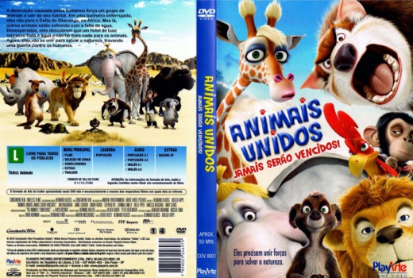Aquaman 2: O Reino Perdido [Autorado] (2023)
-
Vai Ter Troco [Autorado] (2023)
-
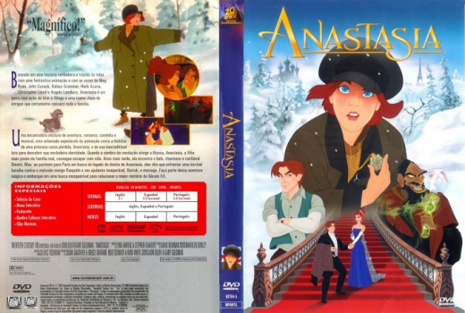As Aventuras de Poliana: O Filme [Autorado] (2023)
-
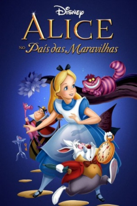Wonka [Autorado] (2023)
-
Saltburn [Autorado] (2023)
-
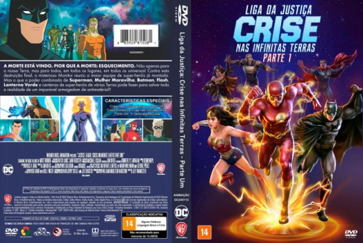Liga da Justiça: Crise nas Infinitas Terras - Parte 1 [Autorado] (2024)
-
![poster Nefarious [Autorado] (2023)](covers/006765.jpg) Nefarious [Autorado] (2023)
Nefarious [Autorado] (2023) -
Suspeito X [Autorado] (2023)
-
Maestro [Autorado] (2023)
-
Napoleão [Autorado] (2023)
-
George Foreman: Sua História [Autorado] (2023)
-
Nosso Amigo Extraordinário [Autorado] (2023)
-
![poster A Sociedade da Neve [Autorado] (2023)](covers/006759.jpg) A Sociedade da Neve [Autorado] (2023)
A Sociedade da Neve [Autorado] (2023) -
Plano em Família [Autorado] (2023)
-
A Morte do Demônio: A Ascensão [Autorado] (2023)
-
A Fuga das Galinhas: A Ameaça dos Nuggets [Autorado] (2023)
-
O Mundo Depois de Nós [Autorado] (2023)
-
Feriado Sangrento [Autorado] (2023)
-
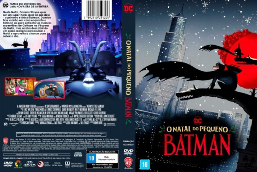O Natal do Pequeno Batman [Autorado] (2023)
-
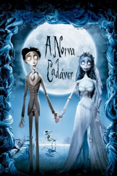Rebel Moon - Parte 1: A Menina do Fogo [Autorado] (2023)
-
Jogos Vorazes: A Cantiga dos Pássaros e das Serpentes [Autorado] (2023)
-
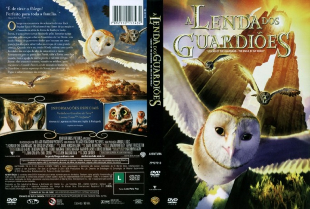Resistência [Autorado] (2023)
-
Mavka: Aventura na Floresta [Autorado] (2023)
-
![poster Mussum: O Filmis [Autorado] (2023)](covers/006748.jpg) Mussum: O Filmis [Autorado] (2023)
Mussum: O Filmis [Autorado] (2023) -
Meu Nome é Gal [Autorado] (2023)
-
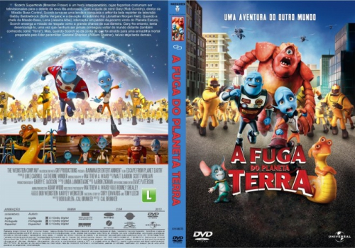Hypnotic: Ameaça Invisível [Autorado] (2023)
-
O Próprio Enterro [Autorado] (2023)
-
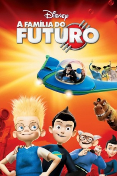Five Nights at Freddy's - O Pesadelo Sem Fim [Autorado] (2023)
-
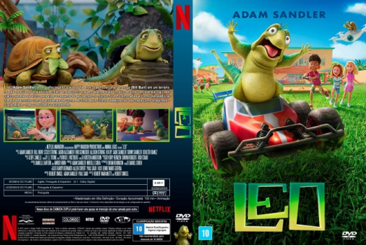Leo (2023)
-
O Acusado [Autorado] (2023)
-
BlackBerry [Autorado] (2023)
-
Trolls 3 - Juntos Novamente [Autorado] (2023)
-
O Livro dos Sonhos [Autorado] (2023)
-
Assassinos da Lua das Flores [Autorado] (2023)
-
Nosso Sonho [Autorado] (2023)
-
Clube da Luta para Meninas [Autorado] (2023)
-
![poster Renfield: Dando Sangue pelo Chefe [Autorado] (2023)](covers/006735.jpg) Renfield: Dando Sangue pelo Chefe [Autorado] (2023)
Renfield: Dando Sangue pelo Chefe [Autorado] (2023) -
Indiana Jones e A Relíquia do Destino [Autorado] (2023)
-
O Exorcista: O Devoto [Autorado] (2023)
-
O Assassino [Autorado] (2023)
-
A Fúria de Becky [Autorado] (2023)
-
![poster Máfia da Dor [Autorado] (2023)](covers/006730.jpg) Máfia da Dor [Autorado] (2023)
Máfia da Dor [Autorado] (2023) -
Oppenheimer [Autorado] (2023)
-
Dezesseis Facadas [Autorado] (2023)
-
A Bailarina [Autorado] (2023)
-
Camaleões [Autorado] (2023)
-
TOC TOC TOC - Ecos do Além [Autorado] (2023)
-
![poster Destinos à Deriva [Autorado] (2023)](covers/006724.jpg) Destinos à Deriva [Autorado] (2023)
Destinos à Deriva [Autorado] (2023) -
Scooby-Doo e Krypto - O Supercão [Autorado] (2023)
-
Belas e Recatadas [Autorado] (2023)
-
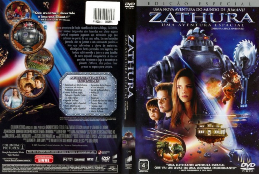Ruim pra Cachorro [Autorado] (2023)
-
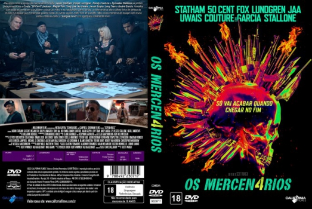Os Mercenários 4 [Autorado] (2023)
-
A Milhões de Quilômetros [Autorado] (2023)
-
Som da Liberdade [Autorado] (2023)
-
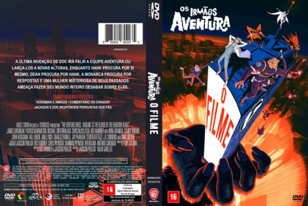Os Irmãos Aventura: O Filme [Autorado] (2023)
-
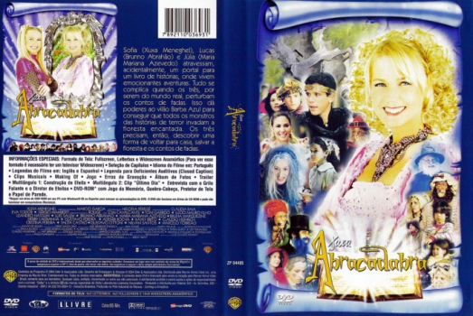A Noite das Bruxas [Autorado] (2023)
-
O Portal Secreto [Autorado] (2023)
-
Jogos Mortais X [Autorado] (2023)
-
Babylon 5: O Caminho [Autorado] (2023)
-
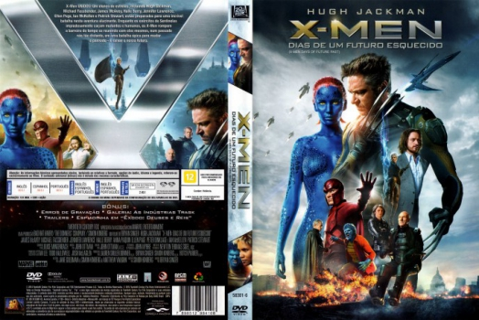Vermelho, Branco e Sangue Azul [Autorado] (2023)
-
O Protetor: Capitulo Final [Autorado] (2023)
-
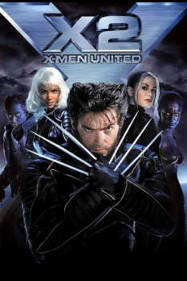A Chamada [Autorado] (2023)
-
The Beanie Bubble - O Fenômeno das Pelúcias [Autorado] (2023)
-
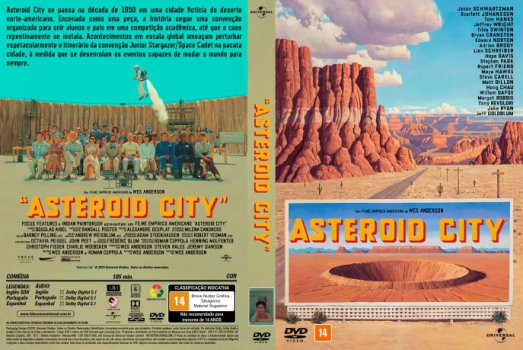Asteroid City [Autorado] (2023)
-
Missão: Impossível - Acerto de Contas Parte 1 [Autorado] (2023)
-
Que Horas Eu Te Pego? [Autorado] (2023)
-
Os Três Mosqueteiros: D’Artagnan [Autorado] (2023)
-
![poster Loucas em Apuros [Autorado] (2023)](covers/006704.jpg) Loucas em Apuros [Autorado] (2023)
Loucas em Apuros [Autorado] (2023) -
Fale Comigo [Aujtorado] (2023)
-
Mansão Mal-Assombrada [Autorado] (2023)
-
A Freira 2 [Autorado] (2023)
-
Paraíso [Autorado] (2023)
-
Drácula: A Última Viagem do Deméter [Autorado] (2023)
-
Sede Assassina [Autorado] (2023)
-
Gran Turismo – De Jogador a Corredor (2023)
-
Besouro Azul [Autorado] (2023)
-
Black Clover: A Espada do Rei Mago [Autorado] (2023)
-
Amor à Primeira Vista (2023)
-
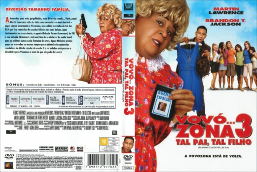Perdida [Autorado] (2023)
-
O Convento [Autorado] (2023)
-
Beau Tem Medo [Autorado] (2023)
-
Campeões [Autorado] (2023)
-
Missão de Sobrevivência [Autorado] (2023)
-
As Tartarugas Ninjas: Caos Mutante [Autorado] (2023)
-
Elementos [Autorado] (2023)
-
Barbie [Autorado] (2023)
-
![poster A Pequena Sereia [Autorado] (2023)](covers/006685.jpg) A Pequena Sereia [Autorado] (2023)
A Pequena Sereia [Autorado] (2023) -
Flamin' Hot: O Sabor que Mudou a História [Autorado] (2023)
-
Minha Culpa [Autorado] (2023)
-
Air: A História Por Trás do Logo [Autorado] (2023)
-
Um Pacto de Amizade [Autorado] (2023)
-
Megatubarão 2 [Autorado] (2023)
-
Tetris [Autorado] (2023)
-
O Estrangulador de Boston [Autorado] (2023)
-
A Elefanta do Mágico [Autorado] (2023)
-
Luther: O Cair da Noite [Autorado] (2023)
-
Agente Stone [Autorado] (2023)
-
O Pacto (2023)
-
Ruby Marinho - Monstro Adolescente [Autorado] (2023)
-
Homem-Aranha: Através do Aranhaverso [Autorado] (2023)
-
![poster Sobrenatural: A Porta Vermelha [Autorado] (2023)](covers/006671.jpg) Sobrenatural: A Porta Vermelha [Autorado] (2023)
Sobrenatural: A Porta Vermelha [Autorado] (2023) -
![poster Guardiões da Galáxia: Vol. 3 [Autorado] (2023)](covers/006670.jpg) Guardiões da Galáxia: Vol. 3 [Autorado] (2023)
Guardiões da Galáxia: Vol. 3 [Autorado] (2023) -
![poster Miraculous: As Aventuras de Ladybug - O Filme [Autorado] (2023)](covers/006669.jpg) Miraculous: As Aventuras de Ladybug - O Filme [Autorado] (2023)
Miraculous: As Aventuras de Ladybug - O Filme [Autorado] (2023) -
Clonaram Tyrone! [Autorado] (2023)
-
Transformers: O Despertar das Feras [Autorado] (2023)
-
The Flash [Autorado] (2023)
-
Frio nos Ossos [Autorado] (2023)
-
![poster Os Cavaleiros do Zodíaco - Saint Seiya: O Começo [Autorado] (2023)](covers/006664.jpg) Os Cavaleiros do Zodíaco - Saint Seiya: O Começo [Autorado] (2023)
Os Cavaleiros do Zodíaco - Saint Seiya: O Começo [Autorado] (2023) -
Velozes & Furiosos 10 [Autorado] (2023)
-
Resgate 2 [Autorado] (2023)
-
Desaparecida [Autorado] (2023)
-
O Pior Vizinho do Mundo [Autorado] (2022)
-
Na Palma da Mão [Autorado] (2023)
-
I Wanna Dance with Somebody: A História de Whitney Houston [Autorado] (2022)
A
- A 5ª Onda (2016)
- A 100 Passos de Um Sonho (2014)
- A Abelha Maya: O Filme (2014)
- A Abelhinha Maya: O Filme (2018)
- A Aliança (2012)
- A Amaldiçoada (2013)
- A Ameaça (2013)
- A Antropóloga (2012)
- A Aparição (2012)
- A Armadilha (2010)
- A Arte da Conquista (2011)
- A Árvore da Vida (2011)
- A Árvore dos Enforcados (1959)
- A Aventura de Raven, Zack & Cody e Hannah Montana (2007)
- A Bailarina (2016)
- A Bailarina [Autorado] (2023)
- A Balada do Pistoleiro (1995)
- A Batalha da Montanha do Tigre (2014)
- A Batalha das Ardenas (2018)
- A Batalha de Passchendaele (2008)
- A Batalha de Riddick (2004)
- A Batalha do Planeta dos Macacos (1973)
- A Bela e a Fera (2017)
- A Bela e a Fera (2014)
- A Bela e a Fera (2009)
- A Bolha (1958)
- A Bolha Assassina (1988)
- A Boneca do Demônio (1936)
- A Bruxa (2015)
- A Bruxa de Blair (1999)
- A Bruxinha e o Dragão (2009)
- A Busca (2012)
- A Bússola de Ouro (2007)
- A Cabana (2017)
- A Caça (2012)
- A Caça (2013)
- A Cadeira do Diabo (2007)
- A Caixa (2009)
- A Caminho da Felicidade (2010)
- A Caminho de Casa (2019)
- A Carrocinha (1955)
- A Carta (2012)
- A Casa (2010)
- A Casa Amaldiçoada (1999)
- A Casa da Colina (1999)
- A Casa de Cera (2005)
- A Casa de Vidro (2001)
- A Casa do Espanto (1986)
- A Casa do Lago (2006)
- A Casa do Medo (2015)
- A Casa do Medo (2018)
- A Casa do Medo - Incidente em Ghostland (2018)
- A Casa do Mickey Mouse: O Musical Monstruoso do Mickey (2015)
- A Casa dos Mortos (2015)
- A Casa dos Sonhos (2011)
- A Casa Maligna (2015)
- A Casa Silenciosa (2011)
- A Casa Torta [Legendado] (2017)
- A Caverna (2005)
- A Caverna: Perigo Subterrâneo (2016)
- A Cela (2000)
- A Chamada (2009)
- A Chamada [Autorado] (2023)
- A Chave de Sarah (2010)
- A Chave Mestra (2005)
- A Chefa (2016)
- A Chegada (2016)
- A Cidade dos Amaldiçoados (1995)
- A Clínica (2010)
- A Coisa Certa (1985)
- A Colheita da Fé (2017)
- A Colina Escarlate (2015)
- A Colônia (2013)
- A Colônia [Legendado] (1997)
- A Comédia Divina (2017)
- A Companheira de Tarzan (1934)
- A Condenação (2010)
- A Conexão Francesa (2014)
- A Conquista do Império (2011)
- A Conquista do Planeta dos Macacos (1972)
- A Conspiração (2012)
- A Convocação (2014)
- A Corporação (2003)
- A Corrente do Bem (2000)
- A Corrente do Mal (2010)
- A Criada (2016)
- A Criatura da Destruição (2001)
- A Cruz (2011)
- A Culpa é das Estrelas (2014)
- A Cura (2017)
- A Cura Pela Graça (2012)
- A Dama de Ferro (2011)
- A Dama de Vermelho (1984)
- A Dama Dourada (2015)
- A Dama na Água (2006)
- A Dança da Morte - Temporada 1 (1994)
- A Dança dos Vampiros (1967)
- A Dançarina e o Ladrão (2009)
- A Decadência de Joe Albany (2014)
- A Delicadeza do Amor (2011)
- A Difícil Vingança (2012)
- A Divisão [Autorado] - Temporada 01 (2019)
- A Elefanta do Mágico [Autorado] (2023)
- A Entidade (2012)
- A Entidade II (2015)
- A Entrega (2014)
- A Entrevista (2014)
- A Epidemia (2010)
- A Era da Escuridão (2016)
- A Era da Escuridão - Mutant Chronicles (2008)
- A Era do Gelo: A Grande Caçada aos Ovos de Páscoa (2016)
- A Era do Gelo: O Big Bang (2016)
- A Era dos Dragões (2011)
- A Escolha (2010)
- A Escolha (2016)
- A Escolha (2007)
- A Escolha Perfeita (2012)
- A Escolha Perfeita 2 (2015)
- A Escolha Perfeita 3 (2017)
- A Escuridão (2016)
- A Esperança é a Última que Morre (2015)
- A Espiã Que Sabia de Menos (2015)
- A Estrada (2009)
- A Estrada 47 (2014)
- A Estranha Perfeita (2007)
- A Estranha Vida de Timothy Green (2012)
- A Estrela de Belém (2017)
- A Eterna Namorada (2014)
- A Experiência (1995)
- A Experiência 4 (2007)
- A Experiência III (2004)
- A Fabulosa Aventura da Sharpay (2011)
- A Fabulosa Gilly Hopkins (2015)
- A Face Da Morte (2012)
- A Face de Um Anjo (2014)
- A Face do Mal (2014)
- A Família (2013)
- A Família Addams (2019)
- A Família Bélier (2014)
- A Família Buscapé (1993)
- A Família Flynn (2012)
- A Fantástica Fábrica de Chocolate (1971)
- A Fantástica Fábrica de Chocolate (2005)
- A Favorita (2018)
- A Fé Que Nos Une (2015)
- A Feiticeira (2005)
- A Feiticeira do Amor (2011)
- A Felicidade Não Se Compra (1946)
- A Fera (2017)
- A Fera (2011)
- A Festa do Monstro Maluco (1967)
- A Filha da Luz (2000)
- A Filha do Meu Melhor Amigo (2011)
- A Filha dos Trapalhões (1984)
- A Firma (1993)
- A Floresta Que Se Move (2015)
- A Fonte das Mulheres (2011)
- A Forca (2015)
- A Força em Alerta (1992)
- A Força em Alerta 2 (1995)
- A Forma da Água (2017)
- A Fortaleza (1992)
- A Fortaleza 2 (2000)
- A Fraude (2005)
- A Freira (2018)
- A Freira 2 [Autorado] (2023)
- A Frente Fria que a Chuva Traz (2016)
- A Fuga (2012)
- A Fuga das Galinhas: A Ameaça dos Nuggets [Autorado] (2023)
- A Fuga de Tarzan (1936)
- A Fúria de Becky [Autorado] (2023)
- A Fúria de Simuroc (2011)
- A Fúria do Dragão (1972)
- A Gaiola das Loucas (1978)
- A Gaiola Dourada (2013)
- A gangue Zip Zap (2013)
- A Garota da Capa Vermelha (2011)
- A Garota Dinamarquesa (2015)
- A Garota do Livro (2015)
- A Garota do Parque (2007)
- A Garota no Trem (2016)
- A Grande Aposta (2015)
- A Grande Beleza (2013)
- A Grande Escolha (2014)
- A Grande Família: O Filme (2007)
- A Grande Ilusão (2014)
- A Grande Jogada (2018)
- A Grande Mentira (2010)
- A Grande Mentira (2019)
- A Grande Muralha (2016)
- A Grande Vitória (2014)
- A Grande Volta (2013)
- A Guerra de Agosto (2012)
- A Guerra de Hart (2002)
- A Guerra de Maddison (2010)
- A Guerra do Fogo (1981)
- A Guerra dos Roses (1989)
- A Herança de Mr. Deeds (2002)
- A Herdeira (2015)
- A História de Ester (2013)
- A História de Nós Dois (1999)
- A História do Amor (2016)
- A História Sem Fim (1984)
- A História Sem Fim II (1990)
- A Hora da Escuridão (2011)
- A Hora do Acerto (2004)
- A Hora do Arrepio (2007)
- A Hora do Espanto (2011)
- A Hora do Espanto (1985)
- A Hora do Espanto 2 (2013)
- A Hora do Lobisomem (1985)
- A Hora do Pesadelo (1984)
- A Hora do Pesadelo (2010)
- A Hora do Pesadelo 2: A Vingança de Freddy (1985)
- A Hora do Pesadelo 3: Os Guerreiros dos Sonhos (1987)
- A Hora do Pesadelo 4: O Mestre dos Sonhos (1988)
- A Hora do Pesadelo 5: O Maior Horror de Freddy (1989)
- A Hora do Pesadelo: O Novo Pesadelo - O Retorno de Freddy Krueger (1994)
- A Hora do Pesadelo: Pesadelo Final - A Morte de Freddy (1991)
- A Hora do Rush (1998)
- A Hora do Rush 2 (2001)
- A Hora do Rush 3 (2007)
- A Hora Mais Escura (2012)
- A Hospedeira (2013)
- A Identidade Bourne (2002)
- A Ilha (2005)
- A Ilha da Imaginação (2008)
- A Ilha do Mal (2017)
- A Ilha do Topo do Mundo (1974)
- A Ilha Misteriosa (1961)
- A Incrível Jornada de Jacqueline, A Vaca (2016)
- A Informante (2010)
- A Inquilina (2011)
- A Intrometida (2016)
- A Invenção de Hugo Cabret (2011)
- A Invocação (2012)
- A Invocação 2 (2013)
- A Irmandade (2001)
- A Jóia do Nilo (1985)
- A Jornada de Hank Williams (2016)
- A Jovem Rainha (2015)
- A Justiceira (2014)
- A Lagoa Azul (1980)
- A Legião (2014)
- A Lei da Noite (2016)
- A Lenda (1985)
- A lenda (2014)
- A Lenda de Barney Thomson (2015)
- A Lenda de Beowulf (2007)
- A Lenda de Golem (2018)
- A Lenda de Tarzan (2016)
- A Lenda do Cavaleiro Sem Cabeça (1999)
- A Lenda do Dragão (2011)
- A Lenda do Mestre Chinês (2011)
- A Lenda do Tesouro Perdido (2004)
- A Lenda do Tesouro Perdido: Livro dos Segredos (2007)
- A Lenda do Zorro (2005)
- A Lenda Negra (2014)
- A Lente do Amor (1997)
- A Letra Que Mata (2008)
- A Liga Contra o Mal (2003)
- A Liga Extraordinária (2003)
- A Lista (2014)
- A Lista (2011)
- A Lista (2007)
- A Lista de Schindler (1993)
- A Lista: Você Está Livre Hoje? (2008)
- A Loja Mágica de Brinquedos (2007)
- A Luta de um Campeão (2011)
- A Luta Pela Esperança (2005)
- A Luz de Uma Estrela (2012)
- A Luz Entre Oceanos (2016)
- A Luz no Fim do Mundo [Legendado] (2019)
- A Máfia Volta ao Divã (2002)
- A Magia de um Sonho (2011)
- A Maldição da Bela Adormecida (2016)
- A Maldição da Casa Winchester (2018)
- A Maldição da Chorona (2019)
- A Maldição da Floresta (2015)
- A Maldição da Freira (2018)
- A Maldição da Mosca (1965)
- A Maldição de Chucky (2013)
- A Maldição do Boneco Robert (2016)
- A Mão Que Balança o Berço (1992)
- A Máquina (2015)
- A Máquina do Tempo (2002)
- A Máquina do Tempo (1960)
- A Marca do Medo (2014)
- A Marca Negra (2018)
- A Marcha dos Pinguins (2005)
- A Melhor Escolha (2017)
- A Memória que me Contam (2013)
- A Menina e o Porquinho (2006)
- A Menina Que Brincava Com Fogo (2009)
- A Menina que Roubava Livros (2013)
- A Mensagem (2007)
- A Mentira (2010)
- A Milhões de Quilômetros [Autorado] (2023)
- A Minha Canção de Amor (2010)
- A Minha Casa Caiu (2014)
- A Minha Versão do Amor (2010)
- A Missão [Edição Especial] (1986)
- A Montanha Enfeitiçada (2009)
- A Morte do Demônio (2013)
- A Morte do Demônio: A Ascensão [Autorado] (2023)
- A Morte e o Retorno do Superman (2019)
- A Morte e Vida de Charlie (2010)
- A Morte lhe Cai Bem (1992)
- A Morte Te Dá Parabéns 2 (2019)
- A Morte te dá Parabéns! (2017)
- A Mosca (1986)
- A Mosca 2 (1989)
- A Mosca da Cabeça Branca (1958)
- A Mulher de Preto (2012)
- A Mulher Invisível (2009)
- A Múmia (2017)
- A Múmia (1999)
- A Múmia: Tumba do Imperador Dragão (2008)
- A Música da Minha Vida (2019)
- A Natureza Contra Ataca (2009)
- A Negociação (2012)
- A Névoa (2005)
- A Noite da Realeza (2015)
- A Noite da Virada (2014)
- A Noite das Bruxas [Autorado] (2023)
- A Noite Devorou o Mundo (2018)
- A Noite é Delas (2017)
- A Noiva (2017)
- A Noiva de Chucky (1998)
- A Noiva do Diabo (2016)
- A Nona Vida de Louis Drax (2016)
- A Nova Cinderela (2004)
- A Nova Cinderela: Era Uma Vez Uma Canção (2011)
- A Novela das 8 (2012)
- A Noviça Rebelde [Edição de 40º Aniversário] (1965)
- A Noviça Rebelde [Edição de 45º Aniversário] (1965)
- A Ocasião Faz O Ladrão (2010)
- A Onda dos Sonhos (2002)
- A Onda dos Sonhos 2 (2011)
- A Onda Perfeita (2014)
- A Oração Não Falha (2016)
- A Órfã (2009)
- A Origem (2010)
- A Origem da Vida (2012)
- A Origem do Dragão (2017)
- A Outra Dimensão (2010)
- A Outra Face (1997)
- A Outra História Americana (1998)
- A Outra Terra (2011)
- A Paixão de Cristo - Edição do Diretor (2004)
- A Pantera Cor de Rosa (2006)
- A Pantera Cor de Rosa 2 (2009)
- A Pelada (2014)
- A Pele que Habito (2011)
- A Pequena Sereia [Autorado] (2023)
- A Peregrinação (2017)
- A Perseguição (2011)
- A Possessão do Mal (2014)
- A Praga (2006)
- A Praia (2000)
- A Presa (2011)
- A Primeira Noite de Crime (2018)
- A Primeira Vez (2012)
- A Princesa Xuxa e os Trapalhões (1989)
- A Profecia (2006)
- A Proposta (2009)
- A Qualquer Custo (2016)
- A Qualquer Preço (2015)
- A Queda! As Últimas Horas de Hitler (2004)
- A Quinta Execução (2011)
- A Rainha do Castelo de Ar (2009)
- A Rainha do Gelo (2013)
- A Rainha dos Condenados (2002)
- A Raiz do Mal (2010)
- A Rede (1995)
- A Rede 2.0 (2006)
- A Rede Social (2010)
- A Ressaca (2010)
- A Rocha (1996)
- A Sacada (2016)
- A Saga Crepúsculo: Amanhecer - Parte 1 (2011)
- A Saga Crepúsculo: Amanhecer - Parte 2 (2012)
- A Saga Crepúsculo: Eclipse (2010)
- A Saga Crepúsculo: Lua Nova (2009)
- A Saga Viking (2014)
- A Salvação (2014)
- A Segunda Chance (2006)
- A Seita (2016)
- A Seleção (2013)
- A Senha: Swordfish (2001)
- A Senhora da Van (2015)
- A Série Divergente: Convergente (2016)
- A Sétima Alma (2010)
- A Sociedade da Neve [Autorado] (2023)
- A Sogra (2005)
- A Sombra do Inimigo (2012)
- A Sombra e a Escuridão (1996)
- A Super Agente (2012)
- A Suprema Felicidade (2010)
- A Supremacia Bourne (2004)
- A Tempestade (2010)
- A Tentação (2011)
- A Teoria de Tudo (2014)
- A Terra do Nunca - A Origem - Temporada 1 (2011)
- A Toda Prova (2011)
- A Torre Negra (2017)
- A Travessia (2016)
- A Travessia (2015)
- A Trilha (2009)
- A Troca (2008)
- A Tumba do Dragão (2013)
- A Última Bala (2012)
- A Última Casa (2009)
- A Última Casa da Rua (2012)
- A Última Cruzada do Fusca (1980)
- A Última Fortaleza (2001)
- A Última Jornada (2017)
- A Última Música (2010)
- A Última Noite (2017)
- A Última Noite (2002)
- A Última Premonição (2015)
- A Última Ressaca do Ano (2016)
- A V!da Acontece (2011)
- A Viagem (2012)
- A Viagem de Fanny (2016)
- A Viagem de Meu Pai (2015)
- A Viatura (2015)
- A Vida de Pessoas Reais (2010)
- A Vida de uma Mulher (2016)
- A Vida dos Outros (2006)
- A Vida e a Morte De Bobby Z (2007)
- A Vida É Bela (1997)
- A Vida Por Um Fio (2015)
- A Vida Secreta de Walter Mitty (2013)
- A Vigilante do Amanhã: Ghost in the Shell (2017)
- A Vila (2004)
- A Vilã [Legendado] (2017)
- A Vila do Medo (2011)
- A Vingança (2012)
- A Vingança de Lefty Brown (2017)
- A Vingança de Wyatt Earp (2012)
- A Vingança dos Nerds (1984)
- A Vingança dos Nerds 2: Os Nerds Saem de Férias (1987)
- A Vingança Está na Moda (2015)
- A Virada (2003)
- A Visita (2015)
- A Vítima Perfeita (2009)
- A Volta ao Mundo em 80 Dias (1956)
- A Volta do Todo Poderoso (2007)
- A Voz de uma Geração (2013)
- A.I.: Inteligência Artificial (2001)
- A.I.: Inteligência Artificial [Remasterizado] (2001)
- Abandonada: O Mal Foi Eleito (2016)
- Abandonados (2006)
- ABC do Amor (2005)
- Abdução (2014)
- Abençoe-me Ultima - A Curandeira (2013)
- Abigail e a Cidade Proibida (2019)
- Abismo do Medo (2005)
- Abominável (2019)
- Abracadabra (1993)
- Abraham Lincoln: Caçador de Vampiros (2012)
- Academia de Vampiros: O Beijo das Sombras (2014)
- Acampamento do Papai (2007)
- Ação Imediata (2009)
- Acapella - Edson & Hudson (2019)
- Ace Ventura - Um Detetive Diferente (1994)
- Ace Ventura 2 - Um Maluco na África (1995)
- Acertando o Passo (2017)
- Acerto de Contas (2016)
- Acerto de Contas (2011)
- Acerto de Contas (2013)
- Acima da Lei (2011)
- Acima das Nuvens (2014)
- Acorrentados (2012)
- Acquaria (2003)
- Across the Universe (2007)
- Action point (2018)
- Ad Astra: Rumo às Estrelas (2019)
- Adão Negro (2022)
- Adeus Christopher Robin (2017)
- Adeus, Lenin! (2003)
- Adeus, Primeiro Amor (2011)
- Adorável Molly (2011)
- Adorável Professora (2013)
- Adorável Trapalhão (1967)
- Adrenalina (2006)
- Adrenalina (2015)
- Adrenalina 2 (2009)
- Adultos Inexperientes (2014)
- Advogado do Diabo (1997)
- Aeroporto (1970)
- After Dark: Semente do Mal (2011)
- Agente 86 (2008)
- Agente C - Dupla Identidade (2012)
- Agente do Futuro (2014)
- Agente H - Conspiração Terrorista (2012)
- Agente H - Missão Resgate (2012)
- Agente Stone [Autorado] (2023)
- Agente Teen 2: Missão Londres (2004)
- Agentes Vanguard [Autorado] (2020)
- Agnus Dei (2016)
- Agora e Para Sempre (2012)
- Air: A História Por Trás do Logo [Autorado] (2023)
- Ajuste de Contas (2013)
- Aladdin (2019)
- Aladim e a Lâmpada Maravilhosa (1973)
- Albert Nobbs (2011)
- Além da Escuridão (2012)
- Além da Escuridão - Star Trek (2013)
- Além da Eternidade (1989)
- Além da Ilusão (2016)
- Além da Liberdade (2011)
- Além da Morte (2017)
- Além da Realidade [Legendado] (2016)
- Além da Vida (2010)
- Além das Águas (2016)
- Além do Homem (2018)
- Além do Horizonte (2017)
- Alemão (2014)
- Alexandre (2004)
- Alexandre e o Dia Terrivel, Horrível, Espantoso e Horroroso (2014)
- Alexandre Pires: O Baile do Nego Véio Ao Vivo Em Jurerê Internacional (2019)
- Alfa (2018)
- Alguém Tem Que Ceder (2003)
- Ali Babá e os Quarenta Ladrões (1972)
- Ali G Indahouse: O Filme (2002)
- Aliados (2016)
- Aliança do Crime (2015)
- Aliança Mortal (2013)
- Alibi.com (2017)
- Alice Através do Espelho (2016)
- Alice e o Novo País das Maravilhas - Temporada 1 (2009)
- Alice no País das Maravilhas (2010)
- Alice: O Lado Negro do Espelho (2016)
- Alien - A Ressurreição (1997)
- Alien vs. Predador (2004)
- Alien, o Oitavo Passageiro (1979)
- Alien, o Oitavo Passageiro (Versão do Diretor) (1979)
- Alien: Covenant (2017)
- Alien³ (1992)
- Aliens vs. Predador 2 (2007)
- Aliens, O Resgate (Edição Definitiva) (1986)
- Aliens, O Resgate (Edição Especial) (1986)
- Alita: Anjo de Combate (2019)
- All Is True [Legendado] (2018)
- Alleycats (2016)
- Almas à venda (2009)
- Almas Reencarnadas (2005)
- Alone in the Dark 2 - O Retorno do Mal (2008)
- Alta Freqüência (2000)
- Altitude (2010)
- Alvin e os Esquilos (2007)
- Alvin e os Esquilos 2 (2009)
- Alvin e os Esquilos 3 (2011)
- Alvin e os Esquilos: Na Estrada (2015)
- Alvo Duplo (2013)
- Alvo Triplo (2017)
- Amado Batista 44 Anos (2019)
- Amado Batista: 40 Anos (2016)
- Amaldiçoada (2016)
- Amanhã Nunca Mais (2011)
- Amanhecer Violento (2012)
- Amanhecer Zumbi (2012)
- Amante a Domicílio (2013)
- Amantes Eternos (2013)
- American Crime Story: The People v. O.J. Simpson - Temporada 1 (2016)
- American Pie 2: A Segunda Vez é Ainda Melhor (2001)
- American Pie Apresenta: O Livro do Amor (2009)
- American Pie: A Primeira Vez é Inesquecível (1999)
- American Pie: Caindo em Tentação (2007)
- American Pie: O Casamento (2003)
- American Pie: O Reencontro (2012)
- American Pie: O Último Stifler Virgem (2006)
- American Pie: Tocando a Maior Zona (2005)
- American Poltergeist (2015)
- American Poltergeist: Possuídos (2016)
- American Ultra: Armados e Alucinados (2015)
- Amigas Inseparáveis (2013)
- Amigos Alienígenas (2018)
- Amigos Inseparáveis (2012)
- Amigos Para a Vida (2014)
- Amigos Para Sempre (2008)
- Amigos, Amigos, Mulheres à Parte (2008)
- Amistad (1997)
- Amityville: O Despertar (2017)
- Amizade Colorida (2011)
- Amizade Desfeita (2015)
- Amnésia (2000)
- Amnésia (2015)
- Amor (2012)
- Amor & Amizade (2016)
- Amor à Distância (2010)
- Amor à Primeira Mordida (1979)
- Amor à Primeira Vista (2023)
- Amor à Segunda Vista (2002)
- Amor a Toda Prova (2011)
- Amor Além da Vida (1998)
- Amor ao Primeiro Filho (2015)
- Amor Bandido (2013)
- Amor e Inocência (2007)
- Amor e Outras Drogas (2010)
- Amor e Revolução (2016)
- Amor em Little Italy (2018)
- Amor em Tempos de Guerra (2017)
- Amor Fora da Lei (2013)
- Amor Impossível (2012)
- Amor Incondicional - A História de Oseias (2012)
- Amor Lapidado (2015)
- Amor Obsessivo (2010)
- Amor Pleno (2013)
- Amor por Acaso (2010)
- Amor por Acidente (2015)
- Amor por Acidente (2011)
- Amor por Contrato (2010)
- Amor Por Direito (2015)
- Amor Pra Cachorro (2014)
- Amor sem Escalas (2009)
- Amor Sem Fim (2014)
- Amor Sem Fim (1981)
- Amor Sem Limites (2010)
- Amor, Felicidade ou Casamento (2011)
- Amor.com (2017)
- Amores Inversos (2013)
- Amores Urbanos (2016)
- Anaconda (1997)
- Anaconda 2 - A Caçada Pela Orquídea Sangrenta (2004)
- Anaconda 3 (2008)
- Anaconda 4 (2009)
- Anderson Silva - Como Água (2011)
- Angry Birds: O Filme (2016)
- Animais Fantásticos e Onde Habitam (2016)
- Animais Fantásticos: Os Crimes de Grindelwald (2018)
- Animais Noturnos (2016)
- Animal (2001)
- Animatrix (2003)
- Anjo da Morte (2010)
- Anjos da Lei (2012)
- Anjos da Lei 2 (2014)
- Anjos da Noite (2003)
- Anjos da Noite - A Evolução (2006)
- Anjos da Noite 3: A Rebelião (2009)
- Anjos da Noite: Guerras de Sangue (2016)
- Anjos da Noite: O Despertar (2012)
- Anjos da Vida - Mais Bravos que o Mar (2006)
- Anjos e Demônios (2009)
- Anjos Rebeldes (1995)
- Anna Karenina (2012)
- Annabelle (2014)
- Annabelle 2: A Criação do Mal (2017)
- Annabelle 3: De Volta Para Casa (2019)
- Annapolis (2006)
- Annie (2014)
- Ano Um (2009)
- Anomalia (2014)
- Anomalisa (2015)
- Anônimo (2011)
- Antes da Meia-Noite (2013)
- Antes de Dormir (2014)
- Antes de Partir (2007)
- Antes do Amanhecer (1995)
- Antes do Inverno (2013)
- Antes Que Eu Me Esqueça (2017)
- Antes que Eu Vá (2017)
- Antes Que o Mundo Acabe (2010)
- Antes Que Seja Tarde (2013)
- Antes Que Termine o Dia (2004)
- Antes Só do Que Mal Casado (2007)
- Anti-Heróis (2011)
- Ao Mestre, Com Carinho (1967)
- Ao Rufar dos Tambores (1939)
- Apaixonados: O Filme (2016)
- Aparecida - O Milagre (2010)
- Apartamento 143 (2011)
- Apartamento 212 (2017)
- Apenas Amigos (2005)
- Apenas Duas Noites (2014)
- Apenas o Começo (2017)
- Apenas um Garoto em Nova York [Legendado] (2017)
- Apenas uma Noite (2010)
- Apocalipse (2015)
- Apocalipse - Caos e Redenção (1998)
- Apocalypse Now Redux (1979)
- Apocalypto (2006)
- Apollo 13 - Do Desastre ao Triunfo (1995)
- Apollo 18 - A Missão Proibida (2011)
- Aposta Máxima (2013)
- Aposta Radical (2010)
- Apóstolo Pedro e a Última Ceia (2012)
- Aprendendo Com a Vovó (2015)
- Aprendiz de Gigolô (2010)
- Aprovados (2006)
- Aquaman (2018)
- Aquaman 2: O Reino Perdido [Autorado] (2023)
- Aquamarine (2006)
- Aquarius (2016)
- Aqui é o Meu Lugar (2011)
- Arcade: Você Vai Entrar Nesse Jogo (2017)
- Arcanjo Renegado [Autorado] - Temporada 01 (2020)
- Arena (2011)
- Arena dos Sonhos (2012)
- Arena dos Sonhos 2 (2014)
- Argo (2012)
- Arlo: O Porquinho Travesso (2016)
- Armadilha (1999)
- Armadilha (2012)
- Armadilha do Destino (2011)
- Armadilha do Terror (2006)
- Armageddon (1998)
- Armas na Mesa (2016)
- Arqueiro - Especial (2012)
- Arqueiro - Temporada 5 (2012)
- Arqueiro - Temporada 06 (2012)
- Arquivo Kane (2010)
- Arquivo X - Eu Quero Acreditar (2008)
- Arquivo X: O Filme (1998)
- Arranha-Céu: Coragem Sem Limite (2018)
- Arraste-me para o Inferno (2009)
- Arremesso de Ouro (2014)
- Arthur, o Milionário Irresistível (2011)
- Arthur, o Milionário Sedutor (1981)
- Aruanas [Autorado] - Temporada 01 (2019)
- As 7 Faces do Dr. Lao (1964)
- As Apimentadas: Tudo ou Nada (2006)
- As Aventuras de Bob Esponja (2015)
- As Aventuras de Huck Finn (1993)
- As Aventuras de Ozzy (2016)
- As Aventuras de Paddington (2014)
- As Aventuras de Pi (2012)
- As Aventuras de Poliana: O Filme [Autorado] (2023)
- As Aventuras de Robinson Crusoé (2016)
- As Aventuras de Sharkboy e Lavagirl (2005)
- As Aventuras de Tadeo 2: O Segredo do Rei Midas (2017)
- As Aventuras de Tintim (2011)
- As Aventuras do Avião Vermelho (2012)
- As Aventuras do Capitão Cueca: O Filme (2017)
- As Aventuras do Pequeno Peregrino (2010)
- As Aventuras dos Sete Anões (2014)
- As Bem-Armadas (2013)
- As Branquelas (2004)
- As Brumas de Avalon - Temporada 1 (2001)
- As Cartas de Madre Teresa (2015)
- As Coisas Impossíveis do Amor (2009)
- As Confissões (2016)
- As Cores da Violência (1988)
- As Crônicas de Nárnia - A Viagem do Peregrino da Alvorada (2010)
- As Crônicas de Nárnia: O Leão, a Feiticeira e o Guarda-Roupa (2005)
- As Crônicas de Nárnia: Príncipe Caspian (2008)
- As Crônicas de Spiderwick (2008)
- As Donas da Noite (2010)
- As Duas Faces de Janeiro (2014)
- As Duas Faces de Um Crime (1996)
- As Façanhas de Hércules (1958)
- As Férias da Minha Vida (2006)
- As Férias de Mr. Bean (2007)
- As Gladiadoras (2004)
- As Horas (2002)
- As Idades do Amor (2011)
- As Leis do Crime (2014)
- As Loucas Aventuras de James West (1999)
- As Loucuras de Charlie (2013)
- As Loucuras de Dick & Jane (2005)
- As Mães de Chico Xavier (2011)
- As Marvels [Autorado] (2023)
- As Memórias de Marnie (2014)
- As Mil Palavras (2012)
- As Múmias do Faraó (2010)
- As Novas Aventuras do Fusca (1974)
- As Palavras (2012)
- As Panteras (2019)
- As Regras do Amor (2003)
- As Regras do Jogo (2014)
- As Ruínas (2008)
- As Sereias (2003)
- As Sessões (2012)
- As Sete Maravilhas do Mundo - Volume 1 (2002)
- As Sete Maravilhas do Mundo - Volume 2 (2002)
- As Sufragistas (2015)
- As Tartarugas Ninja (2014)
- As Tartarugas Ninja na Dimensão X (2014)
- As Tartarugas Ninja: Fora das Sombras (2016)
- As Tartarugas Ninja: O Retiro! (2012)
- As Tartarugas Ninjas: Caos Mutante [Autorado] (2023)
- As Torres Gêmeas (2006)
- As Vantagens de Ser Invisível (2012)
- As Viagens de Gulliver (2010)
- As Viúvas (2018)
- As Vozes (2014)
- Asas do Desejo (1987)
- Ascensão e Queda de um Império (2015)
- Assalto ao Banco Central (2011)
- Assalto ao Poder (2016)
- Assalto em Dose Dupla (2011)
- Assassinato Em 4 Atos (2013)
- Assassinato no Expresso do Oriente (2017)
- Assassinatos do Passado (2013)
- Assassino a Preço Fixo (2011)
- Assassino à Preço Fixo 2: A Ressurreição (2016)
- Assassino em Série (2017)
- Assassino Profissional (2014)
- Assassinos (1995)
- Assassinos da Lua das Flores [Autorado] (2023)
- Assassinos de Aluguel (2012)
- Assassinos de Aluguel (2012)
- Assassinos de Guerra (2019)
- Assassinos Múltiplos (2017)
- Assassinos Wu [Autorado] - Temporada 01 (2019)
- Assassin's Creed (2016)
- Assim Caminha a Humanidade (1956)
- Assim na Terra Como no Inferno (2014)
- Assombrada Pelo Passado (2013)
- Assumindo a Direção (2014)
- Astérix e o Domínio dos Deuses (2014)
- Astérix e Obélix contra César (1999)
- Astérix e Obélix: A Serviço de sua Majestade (2012)
- Asteroid City [Autorado] (2023)
- Ataque ao Prédio (2011)
- Até a Morte (2007)
- Até o Fim (2013)
- Até o Fundo (2016)
- Até o Limite da Honra (1997)
- Até que a $orte nos Separe (2012)
- Até que a $orte nos Separe 2 (2013)
- Até que a $orte nos Separe 3 (2015)
- Até que a Fuga os Separe (1999)
- Até Que Provem a Inocência (2009)
- Atentado ao Hotel Taj Mahal (2019)
- Atentado em Paris (2016)
- Aterrorizada (2010)
- Atividade Paranormal (2009)
- Atividade Paranormal 2 (2010)
- Atividade Paranormal 3 (2011)
- Atividade Paranormal 4 (2012)
- Atividade Paranormal Tóquio (2010)
- Atividade Paranormal: A Dimensão Fantasma (2015)
- Atividade Paranormal: Marcados pelo Mal (2014)
- Ato de Coragem (2012)
- Atômica (2017)
- Atormentado Pelo Passado (2017)
- Atos de Violência (2018)
- Atração Perigosa (2010)
- Atrás das Linhas Inimigas 4: Missão África (2014)
- Através da Sombra (2016)
- Austenland (2013)
- Austin Powers - 000 Um Agente Nada Discreto (1997)
- Austin Powers - O Agente 'Bond' Cama (1999)
- Austin Powers em o Homem do Membro de Ouro (2002)
- Austrália (2008)
- Autópsia (2008)
- Autópsia de um Crime (2008)
- Avassaladoras (2002)
- Avatar - Edição Extendida de Colecionador (2009)
- Ave, César! (2016)
- Avenida do Terror, 388 (2011)
- Aventura Perigosa (2016)
- Aves de Rapina: Arlequina e sua Emancipação Fantabulosa (2020)
- Aviões do Forró - Aviões 10 Anos (2017)
- Awake - A Vida Por Um Fio (2007)
- Azul é a Cor Mais Quente (2013)
B
- B13 - 13º Distrito (2004)
- B13-U 13º Distrito - Ultimato (2009)
- B-17 - A Fortaleza (2012)
- Babá Fora de Controle: Missão Brasil (2015)
- Babel (2006)
- Baby [Autorado] - Temporada 02 (2018)
- Babylon 5: O Caminho [Autorado] (2023)
- Bad Ass 2: Ação em Dobro (2014)
- Bad Ass 3: Dois Durões em Bayou (2015)
- Bad Ass: Acima da Lei (2012)
- Bad Boys II (2003)
- Bad Boys Para Sempre (2020)
- Bala perdida (2014)
- Balada Assassina (2010)
- Balada Sangrenta (1958)
- Bangkok Nocaute (2010)
- Barbie [Autorado] (2023)
- Barbie e as Agentes Secretas (2016)
- Barbie e os Golfinhos Mágicos (2017)
- Barbie e Suas Irmãs Em Busca Dos Cachorrinhos (2016)
- Barbie e Suas Irmãs em Uma Aventura de Cachorrinhos (2015)
- Barbie Em Um Mundo de Video Game (2017)
- Barbie in Rock 'N Royals (2015)
- Barbie: Aventura nas Estrelas (2016)
- Barrabás (2014)
- Barrabás (2019)
- Bastardos Inglórios (2009)
- Bastidores de um Casamento (2011)
- Bata Antes de Entrar (2015)
- Batalha de Guerreiros (1956)
- Batalha Incerta (2017)
- Bater ou Correr (2000)
- Bater ou Correr em Londres (2003)
- Batman (1989)
- Batman (2022)
- Batman - O Retorno (1992)
- Batman & Robin (1997)
- Batman and Harley Quinn (2017)
- Batman Begins (2005)
- Batman Eternamente (1995)
- Batman Ninja (2018)
- Batman Sem Limites: Caos Monstruoso (2015)
- Batman Sem Limites: Instintos Animais (2015)
- Batman vs Superman: A Origem da Justiça (2016)
- Batman vs. Robin (2015)
- Batman: A Piada Mortal (2016)
- Batman: Alma do Dragão (2021)
- Batman: O Cavaleiro das Trevas (2008)
- Batman: O Cavaleiro das Trevas Ressurge (2012)
- Batman: O Retorno da Dupla Dinâmica (2016)
- Batman: Sangue Ruim (2016)
- Batman: Silêncio (2019)
- Battleship: A Batalha dos Mares (2012)
- Baywatch: S.O.S. Malibu (2017)
- Beau Tem Medo [Autorado] (2023)
- Beethoven - A Corrida Para a Fama (2008)
- Beethoven - O Magnífico (1992)
- Beethoven 2 (1993)
- Beethoven 4 (2001)
- Beethoven 5 (2003)
- Beethoven e o Tesouro Secreto (2014)
- Beijo do Dragão (2001)
- Bel Ami: O Sedutor (2012)
- Bela Vingança (2020)
- Belas e Perseguidas (2015)
- Belas e Recatadas [Autorado] (2023)
- Beleza Adormecida (2011)
- Beleza Americana (1999)
- Beleza Negra (1994)
- Beleza Oculta (2016)
- Belle (2013)
- Bellini e o Demônio (2008)
- Bem Casados (2015)
- Bem Vindo À Selva (2013)
- Bem Vindo à Vida (2012)
- Bem Vindo ao Paraíso (2007)
- Bem-vindo à Selva (2003)
- Bem-vindo aos 40 (2012)
- Bem-vindos a Marwen (2018)
- Ben 10: A Corrida Contra o Tempo (2008)
- Ben 10: Invasão Alienígena (2009)
- Benção & Maldição (2010)
- Ben-Hur (1959)
- Ben-Hur (2016)
- Bernie: Quase um Anjo (2012)
- Besouro (2009)
- Besouro Azul [Autorado] (2023)
- Bezerra de Menezes: O Diário de um Espírito (2008)
- Bibi: A Bruxinha (2002)
- Bibi: A Bruxinha 2 (2004)
- Bíblia Sagrada - Davi (1997)
- Bicho de Sete Cabeças (2001)
- Big Bang: A Teoria - Temporada 10 (2007)
- Big Bang: A Teoria - Temporada 11 (2007)
- Big Pai, Big Filho (2017)
- Big Stan: Arrebentando na Prisão (2007)
- Bill & Ted: Encare a Música (2020)
- Billi Pig (2012)
- Billy Elliot (2000)
- Billy Elliot: O Musical ao Vivo (2014)
- Billy Stone e o Medalhão Mágico (2013)
- Bingo: O Rei das Manhãs (2017)
- Birdman ou (A Inesperada Virtude da Ignorância) (2014)
- Black Clover: A Espada do Rei Mago [Autorado] (2023)
- BlackBerry [Autorado] (2023)
- Blade II - O Caçador de Vampiros (2002)
- Blade Runner 2049 (2017)
- Blade Runner, o Caçador de Andróides (1982)
- Blade, O Caçador de Vampiros (1998)
- Blade: Trinity (2004)
- Bling Ring: A Gangue de Hollywood (2013)
- Blitz (2011)
- Bloodrayne 3: O Terceiro Reich (2010)
- Bloodshot (2020)
- Blue Jasmine (2013)
- Boa Noite, Mamãe (2014)
- Boa Sorte (2014)
- Bob Esponja Calça Comprida (2016)
- Bob Esponja: História Marítima (2016)
- Bob Esponja: Mundo da Luva Para Sempre (2012)
- Bob Esponja: O Dia do Sr. Siriguejo (1999)
- Bob Esponja: O Mais Procurado da Fenda do Bikini (2015)
- Bob Esponja: Um Herói Fora d'Água (2015)
- Bobeou Dançou (2009)
- Bodyguard: Resgate de Risco (2016)
- Bohemian Rhapsody (2018)
- Bom Comportamento [Legendado] (2017)
- Boneco de Neve (2017)
- Boneco do Mal (2016)
- Bonequinha de Luxo (1961)
- Bonga, o Vagabundo (1969)
- Bonitinha, Mas Ordinária (2013)
- Bonnie and Clyde (2013)
- Bons Companheiros [Autorado] (2023)
- Bons Meninos (2019)
- Bons Pra Cachorro (2013)
- Borat: O Segundo Melhor Repórter do Glorioso País Cazaquistão Viaja à América (2006)
- Borboleta Negra (2017)
- Bosque Macabro (2014)
- Boy Erased: Uma Verdade Anulada (2018)
- Boyhood: Da Infância à Juventude (2014)
- Boyka: O Imbatível (2016)
- Boys [Legendado] (2014)
- Braddock - O Super Comando (1984)
- Braddock 3 - O Resgate (1988)
- Braddock II - O Início da Missão (1985)
- Branca de Neve e o Caçador (2012)
- Bravura Indômita (2010)
- Bridget Jones: No Limite da Razão (2004)
- Brigada 49 (2004)
- Brightburn - Filho das Trevas (2019)
- Brilho Eterno de uma Mente Sem Lembranças (2004)
- Brincando com Fogo (2019)
- Brinquedo Assassino (1988)
- Brinquedo Assassino (2019)
- Brinquedo Assassino 2 (1990)
- Brinquedo Assassino 3 (1991)
- Bróder (2010)
- Brooklyn (2015)
- Brooklyn: Sem Pai Nem Mãe (2019)
- Bruna Surfistinha (2011)
- Bruninho & Davi: Violada (2018)
- Bruno (2009)
- Bruno & Barreto: Buteco Raiz (2019)
- Bruno & Marrone, Chitãozinho & Xororó - Clássico (2016)
- Bruno & Marrone: Ensaio (2017)
- Brutal: A Face do Demônio (2008)
- Bruxa de Blair (2016)
- Bruxa de Blair 2 - O Livro das Sombras (2000)
- Bubble Guppies - Super Guppies (2015)
- Bubble Guppies: Animais (2011)
- Bubble Guppies: Brincando na Neve (2014)
- Bubble Guppies: Diversão na Fazenda (2011)
- Bubble Guppies: Jogos Divertidos (2011)
- Bubble Guppies: O Cãozinho e o Anel (2011)
- Buck - Meu Adorável Cão Selvagem (2009)
- BugiGangue no Espaço (2017)
- Bullying - Provocação Sem Limites (2009)
- Bumblebee (2018)
- Burlesque (2010)
- Busca Alucinante (2013)
- Busca de Vingança (2015)
- Busca Desesperada (2012)
- Busca Explosiva 3 (2013)
- Busca Explosiva 4 (2015)
- Busca Explosiva 5: Campo de Batalha (2017)
- Busca Implacável (2008)
- Busca Implacável 2 (2012)
- Busca Implacável 3 (2014)
- Buscando... (2018)
- Byzantium (2012)
C
- C7 - O Brinquedo Mágico (2008)
- Cabana 28: Madrugada do Horror (2017)
- Caça aos Gângsteres (2013)
- Caça às Bruxas (2011)
- Caçada ao Assassino (2010)
- Caçada ao presidente (2014)
- Caçada Brutal (2017)
- Caçada Explosiva (2008)
- Caçado (2003)
- Caçador de Almas (2012)
- Caçador de Demônios (2016)
- Caçador de Mentes [Autorado] - Temporada 01 (2017)
- Caçador de Mentes [Autorado] - Temporada 02 (2017)
- Caçador de Recompensa (2010)
- Caçadores de Emoção: Além do Limite (2015)
- Caçadores de Mentes (2004)
- Caçadores de Obras-Primas (2014)
- Caçadores de Recompensa (2013)
- Caça-Fantasmas (2016)
- Cada Um na Sua Casa (2015)
- Cada um tem a Gêmea que Merece (2011)
- Cadáver (2018)
- Cadáveres (2006)
- Cadáveres - A Reunião dos Mortos (2016)
- Cadê os Homens? (2011)
- Cadê os Morgan? (2009)
- Cães de Aluguel (1992)
- Cães de Guerra (2016)
- Cães Selvagens (2016)
- Café com Amor (2011)
- Café Society (2016)
- Cake: Uma Razão para Viver (2014)
- Calafrios (2010)
- Cálculo Mortal (2002)
- Call to Duty: Fora de Alcance (2016)
- Calvário (2014)
- Camaleões [Autorado] (2023)
- Caminhando com Dinossauros (2013)
- Caminhando nas Nuvens (1995)
- Caminho da Liberdade (2010)
- Caminho da Morte (2016)
- Caminho do Perdão (2000)
- Caminho Para o Coração (2012)
- Caminhos Cruzados (2014)
- Caminhos da Floresta (2014)
- Camino (2016)
- Camisa de Força (2005)
- Camp Rock (2008)
- Camp Rock 2: The Final Jam (2010)
- Campeões [Autorado] (2023)
- Campo dos Mortos (2014)
- Campo dos Sonhos (1989)
- Campos de Esperança (2012)
- Canção para Marion (2012)
- Cantando de Galo (2015)
- Cantinflas (2014)
- Cão de Briga (2005)
- Cão Selvagem (2017)
- Cão Vermelho (2011)
- Caos Na Prisão (2017)
- Capitã Marvel (2019)
- Capitães da Areia (2011)
- Capitão América 2: O Soldado Invernal (2014)
- Capitão América: Guerra Civil (2016)
- Capitão América: O Primeiro Vingador (2011)
- Capitão Fantástico (2016)
- Capitão Phillips (2013)
- Capitão Sky e o Mundo de Amanhã (2004)
- Caprica (2009)
- Capricórnio Um (1977)
- Carandiru: O Filme (2003)
- Carcereiros: O Filme (2019)
- Carga Explosiva (2002)
- Carga Explosiva 2 (2005)
- Carga Explosiva 3 (2008)
- Carga Explosiva: O Legado (2015)
- Cargo - O Espaço é Gelado (2009)
- Carne Trêmula (1997)
- Carnival Row [Autorado] - Temporada 01 (2019)
- Carnivore: O Lobisomem De Londres (2017)
- Carol (2015)
- Carona Aterrorizante [Autorado] (2023)
- Carrie, a Estranha (2013)
- Carros 3 (2017)
- Carrossel 2: O Sumiço de Maria Joaquina (2016)
- Carrossel: O Filme (2015)
- Carruagens de Fogo (1981)
- Cartas de Iwo Jima (2006)
- Cartas Para Deus (2010)
- Cartas Para Julieta (2010)
- Casa Comigo? (2010)
- Casa da Mãe Joana (2008)
- Casa da Mãe Joana 2 (2013)
- Casa do Medo (2013)
- Casamento Blindado (2014)
- Casamento de Verdade (2015)
- Casamento Grego 2 (2016)
- Caso 39 (2009)
- Casper - Gasparzinho - Como Tudo Começou (1997)
- Cassia Eller (2015)
- Castelos de Gelo (2010)
- Castigo Mortal (2010)
- Catch .44 (2011)
- Cats (2019)
- Causa & Efeito (2014)
- Cavaleiro das Trevas (2013)
- Cavalo de Guerra (2011)
- Cavalos Domados (2015)
- Cavalos Selvagens (2015)
- Cazuza: O Tempo Não Pára (2004)
- Cegonhas (2016)
- Cegos por Justiça (2010)
- Cela 213: Bem Vindo ao Inferno (2011)
- Celeste e Jesse Para Sempre (2012)
- Celular - Um Grito de Socorro (2004)
- Cemitério Maldito (2019)
- Cemitério Maldito II (1992)
- Central do Brasil (1998)
- Centurião (2010)
- Certas Mulheres (2016)
- César Menotti & Fabiano: Memórias II (2017)
- Céu em Chamas (2011)
- Céu em Chamas (2014)
- Chamada de Emergência (2013)
- Chamada Não Identificada (2014)
- Chamas da Vingança (2004)
- Chapeuzinho Vermelho no Castelo das Trevas (2015)
- Chappie (2015)
- Chat: A Sala Negra (2010)
- Chef (2014)
- Cheia de Graça (2017)
- Chernobyl: Sinta a Radiação (2012)
- Chicago (2002)
- Chico Xavier (2010)
- Chitãozinho & Xororó: Elas em Evidências ao Vivo no Rio de Janeiro (2017)
- Chocante (2017)
- Chocolate (2016)
- Chocolate (2000)
- Christine (2016)
- Christine, O Carro Assassino (1983)
- Christopher Robin: Um Reencontro Inesquecível (2018)
- Churchill (2017)
- Cícero Morais: Desculpa Mundo ao Vivo em Goiânia
- Cidadão Kane (1941)
- Cidade das Sombras (2008)
- Cidade dos Anjos (1998)
- Cidade dos Homens (2007)
- Cidade Fantasma (2009)
- Cidades de Papel (2015)
- Cilada.com (2011)
- Cinco Anos de Noivado (2012)
- Cinco Semanas Num Balão (1962)
- Cinderela (2021)
- Cinderela (2015)
- Cinderela e o Príncipe Secreto (2018)
- Cine Holliúdy (2013)
- Cine Majestic (2001)
- Cinema Paradiso (1988)
- Cinquenta Tons de Cinza (2015)
- Cinquenta Tons de Liberdade (2018)
- Cinquenta Tons de Preto (2016)
- Cinquenta Tons Mais Escuros (2017)
- Cinzas (2012)
- Circuito Fechado (2013)
- Círculo de Fogo (2001)
- Círculo de Fogo (2013)
- Círculo de Fogo: A Revolta (2018)
- Círculo do Pânico (2007)
- Cisne Negro (2010)
- City of God (2002)
- Cleópatra (1963)
- Click (2006)
- Clonaram Tyrone! [Autorado] (2023)
- Closer: Perto Demais (2004)
- Cloverfield: Monstro (2008)
- Clowntergeist (2017)
- Clube da Luta (1999)
- Clube da Luta para Meninas [Autorado] (2023)
- Clube de Compras Dallas (2013)
- Cobra Kai [Autorado] - Temporada 01 (2018)
- Cobra Kai [Autorado] - Temporada 02 (2018)
- Coco Antes de Chanel (2009)
- Cocoon (1985)
- Cocoricó: Uma fogueira para São João (2015)
- Código da Máfia (2013)
- Código de Assassinos (2011)
- Código de Conduta (2009)
- Código de honra (2011)
- Código de Honra (1992)
- Código Vermelho (2011)
- Códigos de Defesa (2013)
- Codinome Cassius 7 (2011)
- Coincidências do Amor (2010)
- Coisas de Meninos e Meninas (2006)
- Coisas do Coração (2011)
- Coleção de Curtas Walt Disney Animation Studios (2015)
- Colega de Quarto (2011)
- Colegas (2013)
- Colombiana: Em Busca de Vingança (2011)
- Colossal (2016)
- Columbus Circle (2012)
- Com 007 Só Se Vive Duas Vezes (1967)
- Com 007 Viva e Deixe Morrer (1973)
- Com a Bola Toda (2004)
- Com Amor, Van Gogh [Legendado] (2017)
- Com as Próprias Mãos (2004)
- Coma (2012)
- Comando de elite (2011)
- Comando Delta (1986)
- Comando Delta 2 - Conexão Colômbia (1990)
- Comando Para Matar (1985)
- Comando Para Matar - Edição Definitiva (1985)
- Combate (2015)
- Comer, Rezar, Amar (2010)
- Como Agarrar Meu Ex-Namorado (2012)
- Como Cães e Gatos (2001)
- Como Cães e Gatos 2: A Vingança de Kitty Galore (2010)
- Como Enlouquecer seu Chefe (1999)
- Como Esquecer (2010)
- Como Eu Era Antes de Você (2016)
- Como Ganhar Seu Coração (2010)
- Como Não Perder Essa Mulher (2013)
- Como Nossos Pais (2017)
- Como Perder um Homem em 10 Dias (2003)
- Como Roubar um Banco (1958)
- Como se Fosse a Primeira Vez (2004)
- Como Se Tornar o Pior Aluno da Escola (2017)
- Como se Tornar um Conquistador (2017)
- Como Ser Solteira (2016)
- Como Sobreviver a Um Ataque Zumbi (2015)
- Como Treinar o Seu Dragão 3 (2019)
- Como Você Sabe (2010)
- Compania de Herois (2013)
- Competindo com os Steins (2006)
- Complicações do Amor (2014)
- Compramos Um Zoológico (2011)
- Compulsão Assassina (2013)
- Conan, o Bárbaro (2011)
- Conan, o Bárbaro (1982)
- Conan, o Destruidor (1984)
- Condenação Brutal (1989)
- Condessa de Sangue (2008)
- Condução Perigosa (2014)
- Conduta de Risco (2007)
- Conexão Escobar (2016)
- Conexão Jamaica (2002)
- Conexão Perigosa (2013)
- Conexões (2012)
- Confia em Mim (2014)
- Confiar (2010)
- Confissões de Adolescente (2014)
- Confissões de Um Filho (2015)
- Conflito das Águas (2010)
- Confronto no Pavilhão 99 (2017)
- Congelado (2014)
- Congo (1995)
- Conquistas Perigosas (2013)
- Conspiração Americana (2010)
- Conspiração e Poder (2015)
- Conspiração Xangai (2010)
- Constantine (2005)
- Contagem Regressiva (2011)
- Contagem Regressiva (2013)
- Contágio (2011)
- Contágio: Epidemia Mortal (2015)
- Contato Mortal (1988)
- Contatos Alienígenas (2017)
- Contatos de 4º Grau (2009)
- Contatos Imediatos de Terceiro Grau (1977)
- Continue Assistindo [Legendado] (2017)
- Contos do Dia das Bruxas (2007)
- Contra o Tempo (2011)
- Contra o Tempo (2003)
- Contra o Tempo (2012)
- Contrabando (2012)
- Controle - A História de Ian Curtis (2007)
- Controle Absoluto (2008)
- Convenção das Bruxas (1990)
- Conversando com Deus (2006)
- Copa de Elite (2014)
- Coração de Campeão (2011)
- Coração de Cavaleiro (2001)
- Coração de Dragão 2: Um Novo Começo (2000)
- Coração de Dragão 3: A Maldição do Feiticeiro (2015)
- Coração de Tinta (2008)
- Coração Louco (2009)
- Coração Rebelde (1961)
- Coração Sangrento (2015)
- Coração Valente (1995)
- Corações de Ferro (2014)
- Corações Perdidos (2010)
- Corações Sujos (2012)
- Coragem Para Vencer (2016)
- Coragem Sob Fogo (1996)
- Corajosos (2011)
- Cordeiros e Carrascos (2017)
- Cores da Justiça [Legendado] (2019)
- Corina, uma Babá Perfeita (1994)
- Coringa [Autorado] (2019)
- Coriolano (2011)
- Corpo Fechado (2000)
- Corra Que a Polícia Vem Aí 2 1/2 (1991)
- Corra que a Polícia Vem Aí 33 1/3 - O Insulto Final (1994)
- Corra Que a Polícia Vem Aí! (1988)
- Corra! (2017)
- Corram Que o Agente Voltou (2010)
- Correndo Atrás de um Pai (2017)
- Corrente do Mal (2014)
- Corrida Mortal (2008)
- Corrida Mortal 2 (2010)
- Corrida Mortal 3 (2013)
- Corrida Mortal 2050 (2017)
- Corridas Clandestinas (2003)
- Cortina de Fogo 2 (2019)
- Cosmópolis (2012)
- Cowboys & Aliens (2011)
- Crash: No Limite (2005)
- Creed II (2018)
- Creed: Nascido para Lutar (2015)
- Crepúsculo (2008)
- Criação (2009)
- Criaturas (1986)
- Criaturas ao Ataque! (2019)
- Crimes Cibernéticos (2019)
- Crimes Cruzados (2013)
- Crimes e Pecados (1989)
- Crimes na Madrugada (2017)
- Crimes Ocultos (2015)
- Criminosos de Novembro (2017)
- Crô em Família (2018)
- Crocodilo Dundee (1986)
- Crocodilo Dundee em Hollywood (2001)
- Crocodilo Dundee II (1988)
- Crônicas da Meia Noite (2008)
- Crônicas da Tribo Fantasma (2015)
- Crossroads: Amigas para Sempre (2002)
- Cruzada (2005)
- Cruzada: Uma Jornada Através dos Tempos (2006)
- Cruzeiro das Loucas (2002)
- Cry Macho: O Caminho para a Redenção (2021)
- Cubo (1997)
- Cubo 2 - Hipercubo (2002)
- Cubo Zero (2004)
- Cursed: A Lenda do Lago [Autorado] - Temporada 01 (2020)
- Curto Circuito (2008)
- Curvas da Vida (2012)
- Cutback (2010)
- Cyborg, O Dragão do Futuro (1989)
- Cymbeline (2014)
D
- D.E.B.S. - As Super Espiãs (2004)
- D.P.A.: Detetives do Prédio Azul em Mistérios Surpreendentes (2012)
- Dama de Espadas (2016)
- Dança com Lobos (1990)
- Dança Comigo? (2004)
- Darfur: Deserto de Sangue (2009)
- Dark [Autorado] - Temporada 01 (2017)
- Dark [Autorado] - Temporada 02 (2019)
- Dark [Autorado] - Temporada 03 (2020)
- Davi e Golias (2015)
- David vs Golias: A Batalha da Fé (2016)
- DC Liga dos Superpets (2022)
- DC Super Hero Girls: Heroínas do Ano (2016)
- De Carona para o Amor (2018)
- De Coração Partido (2009)
- De Menor (2013)
- De Olhos Bem Fechados (1999)
- De Olhos Bem Fechados - Edição Especial (1999)
- De Onde Eu Te Vejo (2015)
- De Pernas pro Ar (2010)
- De Pernas Pro Ar (2009)
- De Pernas pro Ar 2 (2012)
- De Repente 30 (2004)
- De Repente é Amor (2005)
- De Repente Pai (2013)
- De Repente Uma Família (2018)
- De Volta à Casa da Colina (2007)
- De Volta à Ilha da Imaginação (2013)
- De Volta à Lagoa Azul (1991)
- De Volta ao Jogo (2014)
- De Volta ao Planeta dos Macacos (1970)
- De Volta Ao Terror (2012)
- De Volta para Casa (2017)
- De Volta para o Futuro (1985)
- De Volta para o Futuro Parte II (1989)
- De Volta para o Futuro Parte III (1990)
- De Volta Para o Inferno (1983)
- De Volta para o Presente (1999)
- Dead Like Me: A Morte Lhe Cai Bem - O Filme (2009)
- Dead Rising: Watchtower (2015)
- Deadpool (2016)
- Deadpool 2 (2018)
- Debi & Lóide 2 (2014)
- Debi & Lóide: Dois Idiotas em Apuros (1994)
- Decisão de Risco (2015)
- Deck Dogz: Feras do Skate (2005)
- Decoys (2004)
- Decoys 2: Sedução Alienígena (2007)
- Deixa Rolar (2014)
- Deixados Para Trás: A Nova Geração (2016)
- Deixe-me Entrar (2010)
- Déjà Vu (2006)
- Demolição (2016)
- Demolidor - O Homem Sem Medo (2003)
- Demônio de Neon (2016)
- Dentro do Planeta Terra (2009)
- Departamento Q (2013)
- Departamento Q: O Ausente (2014)
- Depois da Escuridão (2019)
- Depois da Terra (2013)
- Depois Daquela Montanha (2017)
- Depois de Partir (2008)
- Depois de Tudo (2015)
- Depois do Apocalipse (2018)
- Depois dos 30 (2011)
- Desabrigados (2014)
- Desafiando a Arte (2016)
- Desafiando Gigantes (2006)
- Desafiando os Limites (2005)
- Desafio Mortal (1996)
- Desaparecida [Autorado] (2023)
- Desbravadores (2011)
- Descendentes (2015)
- Descendentes 2 (2017)
- Descobrindo o Amor (2012)
- Descompensada (2015)
- Desconhecida (2016)
- Desconhecido (2011)
- Desejo de Matar (2018)
- Desejo de Matar (1974)
- Desejo de Matar 2 (1982)
- Desejo de Matar 3 (1985)
- Desejo de Matar 4 - Operação Crackdown (1987)
- Desejo de Matar V (1994)
- Desejo de Vingança (2013)
- Desejo e Obsessão (2008)
- Desejo Proibido (2000)
- Desenrola (2011)
- Deserto em Fogo (2016)
- Desespero (2006)
- Desespero (2011)
- Despedida em Grande Estilo (2017)
- Despertar de um Pesadelo (1996)
- Despertar dos Mortos (2011)
- Destino Especial (2016)
- Destinos à Deriva [Autorado] (2023)
- Destinos Ligados (2009)
- Desventuras em Série (2004)
- Detenção do Mal (2009)
- Detention (2010)
- Detetive D e o Império Celestial (2010)
- Detetives do Prédio Azul: O Filme (2017)
- Detroit em Rebelião (2017)
- Deu a Louca no Mundo (1963)
- Deu a Louca nos Bichos (2010)
- Deu a Louca nos Monstros (1987)
- Deu a Louca nos Nazis (2012)
- Deu Zebra! (2005)
- Deus da Carnificina (2011)
- Deus É Brasileiro (2003)
- Deus Não Está Morto (2014)
- Deus Não Está Morto 2 (2016)
- Deus Não Está Morto: Uma Luz na Escuridão (2018)
- Deuses do Egito (2016)
- Devorados Vivos (2011)
- Dezesseis Facadas [Autorado] (2023)
- Dezesseis Luas (2013)
- Di Paullo & Paulino: Nós & Elas - Ao Vivo em Goiânia (2018)
- Dia de Treinamento (2001)
- Dia dos Mortos (2017)
- Dia dos Namorados Macabro (2009)
- Diamante de Sangue (2006)
- Diana (2013)
- Diário de um Adolescente (1995)
- Diário de um Banana (2010)
- Diário De Um Banana 2: Rodrick é o Cara (2011)
- Diário de um Banana 3: Dias de Cão (2012)
- Diário de um Banana: Caindo na Estrada (2017)
- Diário de um Exorcista - Zero (2016)
- Diário de um Jornalista Bêbado (2011)
- Diário de uma Babá (2007)
- Diário de uma Louca (2005)
- Diário de uma Paixão (2004)
- Diário Proibido (2008)
- Diários de Motocicleta (2004)
- Diários de um Vampiro - Temporada 1 (2009)
- Diários de um Vampiro - Temporada 2 (2009)
- Diários de um Vampiro - Temporada 3 (2009)
- Diários de um Vampiro - Temporada 4 (2009)
- Diários de um Vampiro - Temporada 5 (2009)
- Diários de um Vampiro - Temporada 6 (2009)
- Diários de um Vampiro - Temporada 7 (2009)
- Diários de um Vampiro - Temporada 8 (2009)
- Dias de Destruição (2006)
- Dias Incríveis (2003)
- Dicionário de Cama (2003)
- Diego & Arnaldo - Do Jeito Que Nóis Gosta 2 (2018)
- Diego & Victor Hugo - Sem Contraindicação (2017)
- Diego & Victor Hugo: Querosene e o Violão (2018)
- Diferenças & Semelhanças (2014)
- Difícil de Matar (1990)
- Dilsinho: Terra do Nunca ao Vivo (2019)
- Dinheiro Em Jogo (2016)
- Dinheiro Fácil [Autorado] (2023)
- Dinheiro Não é Tudo (2012)
- Dinheiro Sujo (2013)
- Diogo Nogueira - Alma Brasileira (2016)
- Direito à Vida (2015)
- Dirty Dancing: Ritmo Quente (1987)
- Disparos (2012)
- Distrito 9 (2009)
- Divã a 2 (2015)
- Divergente (2014)
- Divertida Mente (2015)
- Dívida de Honra (2014)
- Dizem Por Aí... (2005)
- Django Livre (2012)
- Do Além (2012)
- Do Fundo do Coração (2012)
- Do Fundo do Mar (1999)
- Do Inferno (2001)
- Do Jeito que Elas Querem (2018)
- Do Luto à Luta (2005)
- Do Outro Lado da Linha (2008)
- Doce Lar (2002)
- Doce Novembro (2001)
- Doce Tentação (2012)
- Doce Veneno (2015)
- Doce Vingança (2010)
- Doce Vingança 2 (2013)
- Doces Encontros (2007)
- Doentes de Amor (2017)
- Dogma (1999)
- Doidas e Santas (2017)
- Dois Irmãos: Uma Jornada Fantástica [Autorado] (2020)
- Dois Lados do Amor (2014)
- Dois na Lona (1968)
- Dolittle (2020)
- Dominação (2016)
- Dominação Zumbi (2011)
- Dominados Pelo Ódio (2010)
- Don Juan DeMarco (1994)
- Don Verdean: O Que o Passado Nos Reserva (2015)
- Donnie Darko (2001)
- Doom: A Porta do Inferno (2005)
- Dora e a Cidade Perdida (2019)
- Dora, a Aventureira: Dora e o Show de Patinação no Gelo (2013)
- Dora, a Aventureira: Dora Salva a Terra dos Contos de Fadas (2000)
- Doris, Redescobrindo o Amor (2015)
- Dose Dupla (2013)
- Dotado para Brilhar (2011)
- Dou-lhes Um Ano (2013)
- Doutor Estranho (2016)
- Doutor Jivago (1965)
- Doutor Sono (2019)
- Doutora Brinquedos: Veterinária (2015)
- Downton Abbey: O Filme (2019)
- Doze Homens e Outro Segredo (2004)
- Drácula - O Príncipe Das Trevas (2013)
- Drácula 2000 (2000)
- Dracula de Bram Stoker (1992)
- Drácula: A História Nunca Contada (2014)
- Drácula: A Última Viagem do Deméter [Autorado] (2023)
- Dragão Vermelho (2002)
- Dragon Ball Super [Autorado] - Volume 1 (2015)
- Dragon Ball Z: O Renascimento de 'F' (2015)
- Dragon Blade (2015)
- Dragon Tiger (2006)
- Drake & Josh: Parceiros no Crime (2004)
- Drake & Josh: Rumo a Hollywood (2006)
- Drama em Família (2015)
- Dreamgirls: Em Busca de um Sonho (2006)
- Dredd: O Juíz do Apocalipse (2012)
- Drive (2011)
- Drone (2017)
- D-Tox (2002)
- Duas de Mim (2017)
- Duas Irmãs, Uma Paixão (2014)
- Duas Rainhas (2018)
- Duas Vidas (2000)
- DuckTales: Os Caçadores de Aventuras (2017)
- Duda e os Gnomos (2017)
- Duelo de Assassinos (2009)
- Duelo de Bravos (2011)
- Duelo de Impérios: A Guerra Pela Ásia (2011)
- Duelo de Titãs (2000)
- Duets: Vem Cantar Comigo (2000)
- Dumbo (2019)
- Duna (Versão Estendida) (1984)
- Dungeons & Dragons - A Aventura Começa Agora (2000)
- Dungeons & Dragons 2 - O Poder Maior (2005)
- Dungeons & Dragons 3 - O Livro da Escuridão (2012)
- Dunkirk (2017)
- Dupla em Fúria (2013)
- Dupla Explosiva (2002)
- Dupla Explosiva (2017)
- Dupla Implacável (2010)
- Duplex (2003)
- Duro de Matar (1988)
- Duro de Matar - A Vingança (1995)
- Duro de Matar 2 (1990)
- Duro de Matar 4.0 (2007)
- Duro de Matar: Um Bom Dia para Morrer (2013)
- Dylan Dog e as Criaturas da Noite (2011)
E
- E a Vida Continua... (2012)
- E agora? A mamãe saiu de férias! (2019)
- E Aí, Meu Irmão, Cadê Você? (2000)
- E Aí... Comeu? (2012)
- E o Vento Levou (1939)
- E o Vento Levou [Edição de Colecionador] (1939)
- E Se Fosse Verdade... (2005)
- E Se o Amor Acontece... (2011)
- E Se... Você Tivesse Uma Segunda Chance? (2010)
- E Sua Mãe Também (2001)
- E... Que Deus Nos Ajude!!! (2011)
- E.T. - O Extraterrestre (1982)
- Eclipse Mortal (2000)
- Ecos do Mal (2008)
- Edson & Hudson: Eu e Você de Novo (2017)
- Eduardo Costa na Fazenda (2017)
- Edward Mãos de Tesoura (1990)
- Edwin Boyd: A Lenda do Crime (2011)
- Efeito Borboleta (2004)
- Efeito Borboleta 2 (2006)
- Efeito Borboleta 3 (2009)
- Efeito Colateral (2002)
- Efeitos Colaterais (2005)
- Effie Gray (2014)
- Ela (2013)
- Ela Dança, Eu Danço (2006)
- Ela Dança, Eu Danço 2 (2008)
- Ela Dança, Eu Danço 3 (2010)
- Ela Dança, Eu Danço 4 (2012)
- Ela Dança, Eu Danço 5: Tudo ou Nada (2014)
- Ela Disse, Ele Disse (2019)
- Ela é Demais Pra Mim (2010)
- Ela é o Cara (2006)
- Ela e os Caras (2007)
- Ele Não Está Tão a Fim de Você (2009)
- Ele Nunca Morre (2015)
- Elefante Branco (2012)
- Elektra (2005)
- Elementos [Autorado] (2023)
- Elena de Avalor: Pronta Para Reinar (2016)
- Elena e o Segredo de Avalor (2016)
- Eles Existem (2014)
- Elis (2016)
- Elite [Autorado] - Temporada 01 (2018)
- Elite [Autorado] - Temporada 02 (2018)
- Elizabeth (1998)
- Elizabeth: A Era de Ouro (2007)
- Ella e John (2017)
- Elle: Um Conto de Fadas Moderno (2010)
- Elvira: A Rainha das Trevas (1988)
- Elvis & Anabelle: O Despertar de um Amor (2007)
- Elvis & Nixon (2016)
- Elysium (2013)
- Em Algum Lugar do Passado (1980)
- Em Busca da Carta Proibida (2017)
- Em Busca da Fé (2011)
- Em Busca da Justiça (2015)
- Em Busca da Terra do Nunca (2004)
- Em Busca da Verdade (2014)
- Em Busca de um Assassino (2011)
- Em Busca de um Lar (2013)
- Em Busca de Vingança (2017)
- Em Busca do Amor (2009)
- Em Busca Pela Verdade (2012)
- Em Defesa da Fé (2010)
- Em Defesa de Cristo (2017)
- Em Má Companhia (2002)
- Em nome da lei (2013)
- Em Nome da Lei (2016)
- Em Nome do Rei (2007)
- Em nome do rei 2 (2011)
- Em Ponto de Bala (1993)
- Em Ritmo de Fuga (2017)
- Em Ruínas [Autorado] (2024)
- Em Segredo (2013)
- Em Seus Passos, o Que Faria Jesus? (2010)
- Em Sua Pele (2012)
- Em Terreno Selvagem (1994)
- Em Transe (2013)
- Em um Mundo Melhor (2010)
- Em um Pátio de Paris (2014)
- Emblema de Fé (2015)
- Emboscada (2013)
- Emoji: O Filme (2017)
- Empire State (2013)
- Encaixotando Helena (1993)
- Encalhados (2014)
- Encantada (2007)
- Encantado (2018)
- Encontro de Amor (2002)
- Encontro de Casais (2011)
- Encontro de Casais (2009)
- Encontro Explosivo (2010)
- Encontro Maligno (2012)
- Encontro Marcado (1998)
- Encontro Marcado (2014)
- Encontro Selvagem (2015)
- Encontros Casuais (2013)
- Encruzilhada (2013)
- Encurralados (2015)
- Encurralados (2007)
- Ender's Game: O Jogo do Exterminador (2013)
- Energético (2017)
- Enquanto Houver Amor (2013)
- Enquanto Somos Jovens (2014)
- Enquanto Você Dorme (2011)
- Enquanto Você Dormia (1995)
- Enrolados Outra Vez: Rainha Por Um Dia (2017)
- Enron: Os Mais Espertos da Sala (2005)
- Ensaio Sobre a Cegueira (2008)
- Enterrado Vivo (2010)
- Entrando Numa Fria (2000)
- Entrando Numa Fria Maior Ainda (2004)
- Entrando Numa Fria Maior Ainda com a Família (2010)
- Entrando Numa Roubada (2015)
- Entre a Vingança e o Perdão (2015)
- Entre Abelhas (2015)
- Entre Amigas (2013)
- Entre Facas e Segredos (2019)
- Entre Idas e Vindas (2016)
- Entre Inimigos (2012)
- Entre Irmãos (2009)
- Entre Lençóis (2008)
- Entre Nesta Dança (2004)
- Entre Nós (2013)
- Entre o Amor e a Paixão (2011)
- Entre o Céu e o Inferno (2006)
- Entre Segredos e Mentiras (2010)
- Entre Vales (2012)
- Entrega de Risco (2012)
- Entrega Mortal (2013)
- Entrevista com Deus (2018)
- Entrevista Com Hitman (2012)
- Entrevista Com o Vampiro (1994)
- Enviado do Céu (2016)
- Epa! Cadê o Noé? (2015)
- Equilibrium (2002)
- Equipe Caça Fantasma (2013)
- Era Uma Vez em Nova York (2013)
- Era Uma Vez em... Hollywood (2019)
- Era Uma Vez Eu, Verônica (2012)
- Era Uma Vez na América (1984)
- Era Uma Vez no México (2003)
- Era uma Vez no Oeste (1968)
- Era Uma Vez... (2008)
- Eragon (2006)
- Escobar: A Traição (2017)
- Escobar: Paraíso Perdido (2014)
- Escola da Vida (2005)
- Escola de Espiões (2015)
- Escola de Magia [Autorado] - Temporada 01 (2015)
- Escola de Magia [Autorado] - Temporada 1 (2015)
- Escola de Magia [Autorado] - Temporada 02 (2016)
- Escola de Rock (2003)
- Escrevendo Uma Nova Vida (2011)
- Escrito nas Estrelas (2001)
- Escritores da Liberdade (2007)
- Esfera: Edição Especial (1998)
- Especialista em Crise (2015)
- Espelho, Espelho Meu (2012)
- Espelhos do medo (2008)
- Espelhos do Medo 2 (2010)
- Espião Por Acaso (2016)
- Espião Por Acidente [Legendado] (2018)
- Espinhos (2008)
- Espírito de Lobo (2015)
- Espiritos - A Morte Está ao Seu Lado (2004)
- Espíritos 2 - Você Nunca Está Sozinho (2007)
- Espontânea [Legendado] (2020)
- Esposa de Mentirinha (2011)
- Esquadrão Classe A (2010)
- Esquadrão Sem Limites (2012)
- Esquadrão Suicida (2016)
- Esquadrão Suicida: Acerto de Contas (2018)
- Esqueceram de Mim (1990)
- Esqueceram de Mim 2 - Perdido em Nova York (1992)
- Esqueceram de Mim 3 (1997)
- Esqueceram de Mim 4 (2002)
- Esquentando a Relação (2012)
- Essa é Minha Vida (2013)
- Essa Noite Você é Minha (2011)
- Esses Homens Maravilhosos E Suas Máquinas Voadoras (1965)
- Estado de Calamidade (2017)
- Estamos Juntos (2011)
- Este é o Meu Garoto (2012)
- Estrada Para Perdição (2002)
- Estranha Obsessão (2011)
- Estrelas Além do Tempo (2016)
- Eternamente Jovem (1992)
- Eterno Amor (2011)
- Eu Acredito (2017)
- Eu Ainda Sei O Que Vocês Fizeram No Verão Passado (1998)
- Eu e as Mulheres (2007)
- Eu e Meu Guarda-Chuva (2010)
- Eu Fico Loko (2017)
- Eu Odeio o Dia dos Namorados (2009)
- Eu Odeio o Orkut (2011)
- Eu os Declaro Marido e... Larry (2007)
- Eu Queria Ter a Sua Vida (2011)
- Eu Receberia as Piores Notícias dos seus Lindos Lábios (2011)
- Eu Sei O Que Vocês Fizeram No Verão Passado (1997)
- Eu Sempre Vou Saber o Que Vocês Fizeram no Verão Passado (2006)
- Eu Só Posso Imaginar (2018)
- Eu Sou a Fúria (2016)
- Eu Sou a Lenda (2007)
- Eu Sou Mais Eu (2019)
- Eu Sou o Número Quatro (2011)
- Eu Te Amo, Beth Cooper (2009)
- Eu Te Amo, Cara (2009)
- Eu Te Perdoo (2015)
- Eu, Christiane F., 13 Anos, Drogada e Prostituída (1981)
- Eu, Daniel Blake [Legendado] (2016)
- Eu, Eu Mesmo e Irene (2000)
- Eu, Mamãe e os Meninos (2013)
- Eu, Robô (2004)
- Eu, Tonya (2017)
- Eu, Você e a Garota Que Vai Morrer (2015)
- Eureka - O Filme (2006)
- Eurotrip - Passaporte Para a Confusão (2004)
- Eva - Um Novo Começo (2011)
- Evereste (2015)
- Everly: Implacável e Perigosa (2014)
- Evidências (2013)
- Evita (1996)
- Evocação - A Porta Para o Demônio (2012)
- Evocando Espíritos (2009)
- Evocando Espíritos 2 (2013)
- Evolução (2001)
- Ex Machina (2015)
- Exercito do Pai (2016)
- eXistenZ (1999)
- Exorcismo no Vaticano (2013)
- Exorcismos e Demônios (2017)
- Exorcismus - A Possessão (2010)
- Exorcistas do Vaticano (2015)
- Experiência II - A Mutação (1998)
- Expresso Da Morte (2010)
- Expresso do Amanhã (2013)
- Expresso do Amanhã [Autorado] - Temporada 01 (2020)
- Expresso Transiberiano (2008)
- Exterminador: Cavaleiros e Dragões - O Filme (2020)
- ExTerminadoras (2009)
- Extermínio (2002)
- Extermínio 2 (2007)
- Extraordinário (2017)
F
- Facção Vermelha: Origens (2011)
- Faces do Medo: Bem Vindo a Família (2013)
- Fala Sério, Mãe! (2017)
- Falando Grego (2009)
- Falcão - O Campeão dos Campeões (1987)
- Falcão Negro em Perigo (2001)
- Fale com Ela (2002)
- Fale Comigo [Aujtorado] (2023)
- Fallen (2016)
- Falsa Loura (2007)
- Família do Bagulho (2013)
- Família Vende Tudo (2011)
- Fantasmas a Solta 3: Sociedade do Mal (2016)
- Fantasmas de Marte (2001)
- Fantasmas do Passado (2017)
- Faroeste Caboclo (2013)
- Fator de Risco (2015)
- Fear the Walking Dead [Autorado] - Temporada 01 (2015)
- Fear the Walking Dead [Autorado] - Temporada 02 (2016)
- Fear the Walking Dead [Autorado] - Temporada 03 (2017)
- Fear the Walking Dead [Autorado] - Temporada 04 (2018)
- Fear the Walking Dead [Autorado] - Temporada 05 (2015)
- Federal (2010)
- Feitiço do Tempo (1993)
- Feitiço Negro (2010)
- Feito na América (2017)
- Felipe Araújo: 1 dois 3 ao Vivo em Goiânia (2017)
- Felipe Ferraz: Nova Face (2018)
- Feliz Natal: Onde Estão os Presentes? (2014)
- Fenômeno (1996)
- Fenômenos Paranormais (2011)
- Fenômenos Paranormais 2 (2012)
- Feriado Sangrento [Autorado] (2023)
- Férias Frustradas (1983)
- Férias Frustradas (2015)
- Fernanda Brum: Da Eternidade ao Vivo em Israel (2016)
- Fernando & Sorocaba: O Chamado da Floresta (2018)
- Fernando & Sorocaba: Sou do Interior ao Vivo (2017)
- Ferrari Rumo à Imortalidade (2017)
- Ferrugem - Prazer, Eu Sou Ferrugem (2018)
- Festa da Salsicha (2016)
- Filadélfia (1993)
- Filha do Mal (2012)
- Filho De Caim (2013)
- Filhos da Escuridão (2011)
- Filhos Do Divórcio (2013)
- Filhos do Vento (2004)
- Fim da linha (2009)
- Fim do Jogo (2016)
- Fim dos Dias (1999)
- Fim dos Tempos (2008)
- Fim dos Tempos (2012)
- Finalmente 18 (2013)
- Fique Rico ou Morra Tentando (2005)
- First Squad - A Hora da Verdade (2009)
- Fish N Chips: O Filme (2013)
- Five Nights at Freddy's - O Pesadelo Sem Fim [Autorado] (2023)
- Flamin' Hot: O Sabor que Mudou a História [Autorado] (2023)
- Flash - Temporada 3 (2014)
- Flash - Temporada 04 (2017)
- Flash [Autorado] - Temporada 05 (2014)
- Flashdance - Edição Especial Para Colecionador (1983)
- Flashes (2015)
- Flicka 3 (2012)
- Flor da Neve e o Leque Secreto (2011)
- Flores do Oriente (2011)
- Flores Raras (2013)
- Floresta Maldita (2016)
- Flubber: Uma Invenção Desmiolada (1997)
- Flyboys (2006)
- Fogo Contra Fogo (1995)
- Fogo Contra Fogo (2012)
- Fogo Sagrado! (1999)
- Fomos Heróis (2002)
- Fonte da Vida (2006)
- Footloose (1984)
- Footloose: Ritmo Contagiante (2011)
- Fora da Trilha (2016)
- Fora de Alcance (2004)
- Fora de Alcance (2014)
- Fora de Controle (2008)
- Fora de Rumo (2005)
- Fora do Rumo (2016)
- Força Aérea 2 (2006)
- Força G (2009)
- Força Maior (2014)
- Força Maligna (2009)
- Força Para Viver (2014)
- Força Sinistra (1985)
- Força tática (2011)
- Forças Especiais (2011)
- Ford vs Ferrari (2019)
- Forrest Gump: O Contador de Histórias (1994)
- Foxcatcher: Uma História que Chocou o Mundo (2014)
- Fragmentado (2016)
- Frank (2014)
- Frank & Lola - Amor Obsessivo (2016)
- Frank e o Robô (2012)
- Frankenstein (2015)
- Frankenstein (2010)
- Frankenstein de Mary Shelley (1994)
- Frankenstein: Entre Anjos e Demônios (2014)
- Frantz (2016)
- Freaky: No Corpo de um Assassino (2020)
- Freddy vs. Jason (2003)
- Freeway - Sem Saída (1996)
- Frio nos Ossos [Autorado] (2023)
- Fronteira Proibida (2011)
- Fronteiras do Universo [Autorado] - Temporada 01 (2019)
- Frontera (2014)
- Frozen II (2019)
- Fruitvale Station: A Última Parada (2013)
- Fuga (2012)
- Fuga Alucinante (2011)
- Fuga do Planeta dos Macacos (1971)
- Fuga Implacável (2012)
- Fúria (2014)
- Fúria Cannabis (2015)
- Fúria de Titãs (2010)
- Fúria de Titãs 2 (2012)
- Fúria em Alto Mar (2018)
- Fúria em Duas Rodas (2004)
- Fúria Sobre Rodas (2011)
G
- G.I. Joe: A Origem de Cobra (2009)
- G.I. Joe: Retaliação (2013)
- Gabriel - A Vingança de um Anjo (2007)
- Gabriel Diniz: Gd na Ilha Ao Vivo em Fernando de Noronha (2018)
- Galera do Mal (2004)
- Galinha Pintadinha - Os Melhores Clipes - 10 Anos (2016)
- Game of Thrones - Temporada 7 (2011)
- Game of Thrones [Autorado] - Temporada 08 (2019)
- Game Over: Ameaça Virtual (2009)
- Gamer (2009)
- Gandhi (1982)
- Gangues do Brooklin (2012)
- Garantia de Morte (1990)
- Garfield 2 (2006)
- Garfield: O Filme (2004)
- Garota Exemplar (2014)
- Garota Infernal (2009)
- Garota Mimada (2008)
- Garota Veneno (2002)
- Garota, Interrompida (1999)
- Garotas Inocentes (2013)
- Garotas S.A. (2008)
- Garotas Selvagens (1998)
- Garotas Selvagens 2 (2004)
- Garotas Selvagens 3 (2005)
- Garotas Selvagens 4 (2010)
- Garotas sem Rumo (2005)
- Garoto Prodígio (2010)
- Garotos Perdidos - A Tribo (2008)
- Garotos Perdidos 3 (2010)
- Gasparzinho, o Fantasminha Camarada (1995)
- Gata em Fuga (2011)
- Gatos Numa Roubada (2001)
- Gatos, Fios Dentais e Amassos (2008)
- Gattaca - A Experiência Genética (Edição de Luxo) (1997)
- Gênio Indomável (1997)
- Gênios do Crime (2016)
- Gente Grande (2010)
- Gente Grande 2 (2013)
- George Foreman: Sua História [Autorado] (2023)
- Get on UP - A História de James Brown (2014)
- Getúlio (2014)
- Ghost: Do Outro Lado da Vida (1990)
- Gia: Fama e Destruição (1998)
- Gigantes de Aço (2011)
- Gigolô Europeu por Acidente (2005)
- Gigolô Por Acidente (1999)
- Ginger & Rosa (2012)
- Giovanni Improtta (2013)
- Gladiador (2000)
- Glee 3D: O Filme (2011)
- Gloria: Diva Suprema (2014)
- Gnomeu e Julieta: O Mistério do Jardim (2018)
- Godzilla (2014)
- Godzilla (1998)
- Godzilla II: Rei dos Monstros (2019)
- Godzilla vs. Kong (2021)
- Gol II: Vivendo o Sonho (2007)
- Gol!: O Sonho Impossível (2005)
- Golpe Baixo (2005)
- Golpe de Gênio (2009)
- Golpe Duplo (2015)
- Gonzaga: De Pai pra Filho (2012)
- Goosebumps 2: Halloween Assombrado (2018)
- Goosebumps: Monstros e Arrepios (2015)
- Gosto Se Discute (2017)
- Gostosas Lindas & Sexies (2017)
- Gotham - Temporada 04 (2014)
- Gotham [Autorado] - Temporada 05 (2014)
- Gotham City 1889: Um Conto de Batman (2018)
- Grace de Mônaco (2014)
- Gran Torino (2008)
- Gran Turismo – De Jogador a Corredor (2023)
- Grand Central (2013)
- Grande Menina, Pequena Mulher (2003)
- Grandes Esperanças (1998)
- Grandes Garotos (2013)
- Grandes Olhos (2014)
- Gravidade (2013)
- Grease 2 - Os Tempos da Brilhantina Voltaram (1982)
- Grease: Nos Tempos da Brilhantina (1978)
- Gremlins (1984)
- Greystoke - A Lenda de Tarzan, o Rei da Selva (1984)
- Grimm - Contos de Terror - Temporada 01-05 (2011)
- Grimm: Contos de Terror - Temporada 06 (2011)
- Grito de Pânico (2015)
- Gritos de Horror: O Renascimento (2011)
- Gritos do Além (2011)
- Guardiões da Galáxia (2014)
- Guardiões da Galáxia Vol. 2 (2017)
- Guardiões da Galáxia: Vol. 3 [Autorado] (2023)
- Guardiões da Noite (2004)
- Guardiões do Céu (2013)
- Guardiões do Dia (2006)
- Guerra ao Terror (2008)
- Guerra dos Mundos (2005)
- Guerra dos Sexos (2010)
- Guerra dos Tronos - Temporada 6 (2011)
- Guerra é Guerra! (2012)
- Guerra Fria (2016)
- Guerra Mundial Z (2013)
- Guerra nas Ruas (2017)
- Guerreiro (2011)
- Guerreiro Americano (1985)
- Guerreiro da Escuridão (2017)
- Guerreiros da Virtude (1997)
- Guerreiros do Amanhã (2010)
- Guerreiros do Futuro (2018)
- Guilherme & Santiago - Acústico 20 Anos (2016)
- Guilhotina (2012)
- Gusttavo Lima - Buteco do Gusttavo - Vol. 2 (2017)
- Gusttavo Lima: O Embaixador (2018)
H
- Habitantes: Eles Estão Aqui (2015)
- Hacker (2015)
- Hacker - Todo Crime Tem Um Início (2016)
- Hackers (2000)
- Hackers - Ladrões de Vida (2007)
- Hairspray: Em Busca da Fama (2007)
- Halloween (2018)
- Halloween - O Ínicio (2007)
- Halloween - Ressurreição (2002)
- Halloween 2 - O Pesadelo Continua! (1981)
- Halloween 4: O Retorno de Michael Myers (1988)
- Halloween 5 - A Vingaça de Michael Myers (1989)
- Halloween H20 - Vinte Anos Depois (1998)
- Halloween II (2009)
- Halloween III: A Noite das Bruxas (1982)
- Halloween Kills: O Terror Continua (2021)
- Halloween: A Noite do Terror (1978)
- Halo 4: Em Direção ao Amanhecer - Temporada 1 (2012)
- Halo: Nightfall (2014)
- Han Solo: Uma História Star Wars (2018)
- Hancock (2008)
- Hanna (2011)
- Hanna [Autorado] - Temporada 01 (2019)
- Hannah Montana: O Filme (2009)
- Hannibal (2001)
- Hannibal - A Origem do Mal (2007)
- Harry Potter e a Câmara Secreta (2002)
- Harry Potter e a Ordem da Fênix (2007)
- Harry Potter e a Pedra Filosofal (2001)
- Harry Potter e as Relíquias da Morte: Parte 1 - Edição Especial - DVD Duplo (2010)
- Harry Potter e as Relíquias da Morte: Parte 2 - Edição Especial - DVD Duplo (2011)
- Harry Potter e o Cálice de Fogo (2005)
- Harry Potter e o Enigma do Príncipe (2009)
- Harry Potter e o Prisioneiro de Azkaban (2004)
- Hatfields & McCoys - Série completa (2012)
- Headhunters (2011)
- Hebe [Autorado] - Temporada 01 (2019)
- Hebe: A Estrela do Brasil (2019)
- Heleno (2011)
- Hell (2003)
- Hellboy (2019)
- Hellboy (2004)
- Hellboy II: O Exército Dourado (2008)
- Hellraiser - Renascido do Inferno (1987)
- Hellraiser 7: O Retorno dos Mortos (2005)
- Hellraiser II - Renascido das Trevas (1988)
- Hellraiser IV - Herança Maldita (1996)
- Hellraiser: Caçador do Inferno (2002)
- Henrique & Juliano: Menos é Mais (2019)
- Henrique & Juliano: O Céu Explica Tudo (2017)
- Herança de Sangue (2016)
- Herança Maldita (2008)
- Herbie, Meu Fusca Turbinado (2005)
- Hércules (2014)
- Hércules (2014)
- Hércules (1983)
- Herói (2008)
- Heróis (2009)
- Heróis da Galáxia: Ratchet e Clank (2016)
- Heróis de Ressaca (2013)
- Heróis Fora de Controle (2012)
- Héster & Helena: Churrasco na Casa da Héster e Helena (2018)
- High School Musical (2006)
- High School Musical 2 (2007)
- High School Musical 3: Ano da Formatura (2008)
- High School Musical: O Desafio (2010)
- Highlander - O Guerreiro Imortal (1986)
- Highlander 3 - O Feiticeiro (1994)
- Highlander II: A Ressureição (1991)
- Highlander: A Batalha Final (2000)
- Highlander: A Origem (2007)
- Histeria (2011)
- História de Horror Americana [Legendado] - Temporada 5 (2011)
- Histórias Cruzadas (2011)
- Histórias De Amor (2012)
- Hitchcock (2012)
- Hitman - Assassino 47 (2007)
- Hitman: Agente 47 (2015)
- Hoje Eu Quero Voltar Sozinho (2014)
- Holmes & Watson (2018)
- Home - Nosso Planeta, Nossa Casa (2009)
- Homeland - Temporada 5 (2015)
- Homeland - Temporada 06 (2017)
- Homem de Ferro (2008)
- Homem de Ferro 2 (2010)
- Homem de Ferro 3 (2013)
- Homem Irracional (2015)
- Homem-Aranha (2002)
- Homem-Aranha 2 (2004)
- Homem-Aranha 3 (2007)
- Homem-Aranha no Aranhaverso (2018)
- Homem-Aranha: Através do Aranhaverso [Autorado] (2023)
- Homem-Aranha: De Volta ao Lar (2017)
- Homem-Aranha: Longe de Casa (2019)
- Homem-Aranha: Sem Volta Para Casa (2021)
- Homem-Formiga (2015)
- Homem-Formiga e a Vespa (2018)
- Homens de Coragem (2017)
- Homens de Honra (2000)
- Homens em Conflito (2012)
- Homens em Fúria (2010)
- Homens, Mulheres e Filhos (2014)
- Honey - No Ritmo dos Seus Sonhos (2003)
- Honey 2 (2011)
- Honra ao Mérito (2017)
- Honra e Lealdade (2015)
- Hook: A Volta do Capitão Gancho (1991)
- Hooligans (2005)
- Hop: Rebelde Sem Páscoa (2011)
- Horas de Desespero (2015)
- Horas de Medo (2010)
- Horas Decisivas (2016)
- Horizonte Profundo: Desastre no Golfo (2016)
- Horror Em Amityville (2005)
- Hotel da Morte (2011)
- Hotel Transilvânia 2 (2015)
- Hotel Transilvânia 3: Férias Monstruosas (2018)
- Hudson Hawk - O Falcão Está à Solta (1991)
- Hui Buh - Um Fantasma Atrapalhado (2006)
- Hulk - Edição Especial 2 Discos (2003)
- Hypnotic: Ameaça Invisível [Autorado] (2023)
I
- I Am Bolt (2016)
- I Wanna Dance with Somebody: A História de Whitney Houston [Autorado] (2022)
- Ice - Um Dia Depois do Amanhã (2011)
- Idas e Vindas do Amor (2010)
- Identidade (2003)
- Identidade Especial (2013)
- Identidade Paranormal (2010)
- Identidade trocada (2011)
- Ilha do Medo (2010)
- Ilha do Tesouro (2012)
- Imagine Eu & Você (2005)
- Imitação da Vida (1959)
- Imortais (2011)
- Impacto (2009)
- Impacto Mortal (2015)
- Imperium: Resistência Sem Líder (2016)
- Implacável (2019)
- Impuros [Autorado] - Temporada 02 (2018)
- In the Name of the King 3: The Last Job (2013)
- In Therapy (2009)
- Inabalável (2009)
- Inatividade Paranormal (2013)
- Inatividade Paranormal 2 (2014)
- Incendiário (2008)
- Incertezas (2009)
- Incidente em Antares (1994)
- Incontrolável (2010)
- Independence Day - Versão Estendida (1996)
- Independence Day: O Ressurgimento (2016)
- Indestrutível (2013)
- Indiana Jones e A Relíquia do Destino [Autorado] (2023)
- Indiana Jones e a Última Cruzada (1989)
- Indiana Jones e o Reino da Caveira de Cristal (2008)
- Indiana Jones e o Templo da Perdição (1984)
- Indiana Jones e os Caçadores da Arca Perdida (1981)
- Indomável Sonhadora (2012)
- Infectado (2014)
- Infectados (2008)
- Infectados (2013)
- Inferno (2016)
- Inferno no Faroeste (2013)
- Inferno Sobre Rodas [Autorado] - Temporada 05 (2011)
- Infiltrado na Klan (2018)
- Informers - Geração Perdida (2008)
- Inimigo em Casa (2001)
- Inimigo Meu (1985)
- Inimigo Público (1998)
- Inimigos de Sangue (2013)
- Inimigos Públicos (2009)
- Inquilino Desajeitado (2012)
- Inseparáveis (2016)
- Inseparáveis (2013)
- Inside Llewyn Davis: Balada de um Homem Comum (2013)
- Insônia (2013)
- Instinto (1999)
- Instinto Selvagem (1992)
- Insurgente (2015)
- Intenções Ocultas (2009)
- Interceptor (2009)
- Interestelar (2014)
- Intermediário.com (2009)
- Internet - O Filme (2017)
- Intocáveis (2011)
- Intrusos (2011)
- Invader (2012)
- Invasão a Casa Branca (2013)
- Invasão a Londres (2016)
- Invasão ao Serviço Secreto (2019)
- Invasão de Privacidade (2016)
- Invasão do Mundo: Batalha de Los Angeles (2011)
- Invasão Zumbi (2016)
- Invasores (2016)
- Invasores (2007)
- Invasores: Nenhum Sistema Está à Salvo (2014)
- Invencível (2014)
- Inverno da Alma (2010)
- Inverno Rigoroso (2016)
- Inversão (2011)
- Investigação Perigosa (2011)
- Invictus (2009)
- Invocação do Mal (2013)
- Invocação do Mal 2 (2016)
- Ip Man: Nasce Uma Lenda (2010)
- Irmã Dulce (2014)
- Irmandade [Autorado] - Temporada 01 (2019)
- Irmão de Espião (2016)
- Irmãos Gêmeos (1988)
- Irmãs (2015)
- Ironias do Amor (2008)
- Isolados (2014)
- Israel & Rodolffo Acústico (2018)
- It: A Coisa (2017)
- It: Capítulo Dois (2019)
- Ivete Sangalo: Acústico em Trancoso (2016)
J
- J. Edgar (2011)
- Já Estou Com Saudades (2015)
- Jack e a Mecânica do Coração (2014)
- Jack Reacher: O Último Tiro (2012)
- Jack Reacher: Sem Retorno (2016)
- Jack Ryan [Autorado] - Temporada 02 (2018)
- Jack, o Caçador de Gigantes (2013)
- Jackass 2.5 (2007)
- Jackass 2: O Filme (2006)
- Jackass 3.5 (2011)
- Jackass 3D (2010)
- Jackass: Cara-de-Pau - O Filme (2002)
- Jackie & Ryan - Amor Sem Medidas (2014)
- Jason Bourne (2016)
- Jason Vai para o Inferno: A Última Sexta-Feira (1993)
- Jason X (2001)
- Jean Charles (2009)
- Jecão... Um Fofoqueiro no Céu (1977)
- Jeff e as Armações do Destino (2011)
- Jem e as Hologramas (2015)
- Jerry Maguire: A Grande Virada (1996)
- Jerusalém (2015)
- Jessabelle: O Passado Nunca Morre (2014)
- Jesse James (1939)
- Jessica Jones [Autorado] - Temporada 03 (2015)
- JFK, a História Não Contada (2013)
- Jill & Joy E O Segredo Do Orfanato (2017)
- Jimi: All Is by My Side (2013)
- Joana D'Arc de Luc Besson (1999)
- João Bosco & Vinícius: Céu de São Paulo (2016)
- João Bosco & Vinícius: Segura Maracaju (2018)
- João e Maria: Caçadores de Bruxas (2013)
- João e o Pé de Feijão (2001)
- João Neto & Frederico: Em Sintonia (2017)
- João, Maria e a Bruxa Da Floresta Negra (2013)
- Jobs (2013)
- Joe (2014)
- Joe Sujo 2 (2015)
- Joelma: Avante - Ao Vivo Em São Paulo (2017)
- Jogada Certa (2010)
- Jogada de Mestre (2015)
- Jogada de Rei (2013)
- Jogador Nº 1 (2018)
- Jogando com Prazer (2009)
- Jogo da Morte (2014)
- Jogo da Morte (1978)
- Jogo da Morte 2 (1981)
- Jogo de Amor em Las Vegas (2008)
- Jogo de Morte (2011)
- Jogo de Poder (2010)
- Jogo do Dinheiro (2016)
- Jogo Duplo [Legendado] (2018)
- Jogo Duro (2015)
- Jogo Entre Ladrões (2009)
- Jogo Sujo (2014)
- Jogos de Assassinos (2013)
- Jogos de Guerra (2010)
- Jogos de Interesses (2012)
- Jogos do Apocalipse (2013)
- Jogos do Crime (2012)
- Jogos Famintos (2013)
- Jogos Letais (2011)
- Jogos Medievais (2013)
- Jogos Mortais (2004)
- Jogos Mortais - O Final (2010)
- Jogos Mortais 2 (2005)
- Jogos Mortais III (2006)
- Jogos Mortais IV (2007)
- Jogos Mortais V (2008)
- Jogos Mortais VI (2009)
- Jogos Mortais X [Autorado] (2023)
- Jogos Mortais: Jigsaw (2017)
- Jogos Sangrentos (2006)
- Jogos Suicidas (2010)
- Jogos Vorazes (2012)
- Jogos Vorazes: A Cantiga dos Pássaros e das Serpentes [Autorado] (2023)
- Jogos Vorazes: A Esperança - O Final (2015)
- Jogos Vorazes: A Esperança - Parte 1 (2014)
- Jogos Vorazes: Em Chamas (2013)
- Jogue a Mamãe do Trem (1987)
- John Carter: Entre Dois Mundos (2012)
- John Wick 3: Parabellum (2019)
- John Wick 4: Baba Yaga [Autorado] (2023)
- John Wick: Um Novo Dia Para Matar (2017)
- Johnny & June (2005)
- Johnny English 3.0 (2018)
- Johnny Mnemonic: O Cyborg do Futuro (1995)
- Jojo Rabbit (2019)
- Jonah Hex - Caçador de Recompensas (2010)
- Jorge & Mateus: 10 Anos (2016)
- Jorge e Mateus: Terra Sem CEP (2018)
- Jornada ao Centro da Terra (2008)
- Jornada de Esperança (2011)
- Jornada nas Estrelas - Insurreição (1998)
- Jornada nas Estrelas - Primeiro Contato (1996)
- Jornada nas Estrelas II - A Ira de Khan (1982)
- Jornada nas Estrelas III - À Procura de Spock (1984)
- Jornada nas Estrelas IV - A Volta para Casa (1986)
- Jornada nas Estrelas V - A Última Fronteira (1989)
- Jornada nas Estrelas VI - A Terra Desconhecida (1991)
- Jornada nas Estrelas: A Nova Geração (1994)
- Jornada Nas Estrelas: Nêmesis (2002)
- Jornada nas Estrelas: O Filme (1979)
- Jornada nas Estrelas: Picard [Autorado] - Temporada 01 (2020)
- Jornada Para Belém [Autorado] (2023)
- José e Maria (2017)
- Joshua - O Filho do Mal (2007)
- Jovem e Bela (2013)
- Jovem Sheldon - Temporada 01 (2017)
- Jovens Adultos (2011)
- Jovens Titãs: O Contrato de Judas (2017)
- Jovens, Loucos e Mais Rebeldes !! (2016)
- Joy: O Nome do Sucesso (2015)
- Julho Sangrento (2014)
- Julie & Julia (2009)
- Julio Sumiu (2014)
- Jumanji (1995)
- Jumanji: Bem-Vindo à Selva (2017)
- Jumanji: Próxima Fase (2019)
- Jump In! (2007)
- Jumper (2008)
- Juno (2007)
- Juntos e Misturados (2014)
- Juntos Para Sempre (2019)
- Juntos Pelo Acaso (2010)
- Jurassic Park III (2001)
- Jurassic Park: O Parque dos Dinossauros (1993)
- Jurassic World: O Mundo dos Dinossauros (2015)
- Jurassic World: Reino Ameaçado (2018)
- Justiça Cega (2014)
- Justiça urbana (2007)
- Justiça: Entre a Lei e a Vingança (2017)
- Justiceiros de Deus (2009)
- Juventude em Fúria (2010)
- Juventudes Roubadas (2014)
K
- K-9 - D.P. (2002)
- K-9 - Um Policial Bom Pra Cachorro (1989)
- K-911 (1999)
- Karate Kid (2010)
- Karatê Kid - A Hora da Verdade (1984)
- Karate Kid 3 - O Desafio Final (1989)
- Karate Kid 4 - A Nova Aventura (1994)
- Karate Kid II - A Hora da Verdade Continua (1986)
- Katy Perry o Filme: Part of Me (2012)
- Kick-Ass 2 (2013)
- Kick-Ass: Quebrando Tudo (2010)
- Kickboxer - O Desafio do Dragão (1989)
- Kickboxer: A Retaliação (2018)
- Kickboxer: A Vingança do Dragão (2016)
- Kill Bill: Volume 1 (2003)
- Kill Bill: Volume 2 (2004)
- Killer Joe - Matador de Aluguel (2011)
- King Kong (2005)
- King Kong (1976)
- King Kong (1933)
- King Kong 2 (1986)
- King of Fighters - A Batalha Final (2010)
- King Richard: Criando Campeãs (2021)
- Kingdom [Autorado] - Temporada 01 (2019)
- Kingsglaive: Final Fantasy XV (2016)
- Kingsman: O Círculo Dourado (2017)
- Kingsman: Serviço Secreto (2014)
- Kite: Anjo da Vingança (2014)
- Kleo Dibah & Rafael: Bem-Vindo ao Clube (2018)
- Knightfall [Autorado] - Temporada 01 (2017)
- Knightfall [Autorado] - Temporada 02 (2017)
- Kóblic [Legendado] (2016)
- Kong: A Ilha da Caveira (2017)
- Kristy (2014)
- Krull (1983)
- Kubo e as Cordas Mágicas (2016)
- Kung Fu Panda 3 (2016)
- Kung Pow - O Mestre da Kung-Fu-São (2002)
- Kung-Fusão (2004)
- KV1: Almas de Ferro (2018)
L
- La Bamba (1987)
- La Casa de Papel [Autorado] - Temporada 03 (2017)
- La La Land: Cantando Estações (2016)
- La Vingança (2017)
- Labirinto (2012)
- Labirinto - A Magia do Tempo (1986)
- Labirinto do Tempo (2010)
- Labirintos Internos (2014)
- Laços de Família (2014)
- Laços de Sangue (2013)
- Laços de Ternura (1983)
- Ladrão de Diamantes (2004)
- Ladrões (2010)
- Lady Bird: A Hora de Voar (2017)
- Lady Macbeth (2016)
- Lágrimas de Felicidade (2009)
- Lágrimas do Sol (2003)
- Lanterna Verde (2011)
- Lar Doce Inferno (2015)
- Laranja Mecânica (1971)
- Larissa Manoela: Up Tour (2017)
- Larry Crowne: O Amor Está de Volta (2011)
- Lawrence da Arábia (1962)
- LBJ: A Esperança de Uma Nação (2017)
- Leão Branco - O Lutador Sem Lei (1990)
- Legado (2015)
- Legado Explosivo (2020)
- Legados [Autorado] - Temporada 01 (2018)
- Legalize Já: Amizade Nunca Morre (2017)
- Legalmente Loira (2001)
- Legalmente Loira 2 (2003)
- Legalmente Loiras (2009)
- Legends of Tomorrow - Temporada 1 (2016)
- Legião (2010)
- Legion - Temporada 01 (2017)
- Legionário (1998)
- LEGO Batman: O Filme (2017)
- Lego DC Super Hero Girls: Controle Mental (2017)
- LEGO DC Super Hero Girls: Escola de Super-Vilãs (2018)
- LEGO DC: Batman - Assunto de Família (2019)
- LEGO DC: Shazam! Magia e Monstros (2020)
- Lego Friends: Girlz 4 Life (2014)
- LEGO Jurassic World: A Exposição Secreta (2018)
- Lego Jurassic World: A Fuga do Indominous Rex (2016)
- LEGO Liga da Justiça – Revolta em Gotham (2016)
- LEGO Liga da Justiça: Combate Cósmico (2016)
- LEGO Liga da Justição: Ataque da Legião do Mal! (2015)
- LEGO Ninjago Mestres do Spinjitzu: Dia da Despedida (2017)
- LEGO Ninjago: O Filme (2017)
- LEGO Ninjago: Torneio dos Elementos (2015)
- Lego Scooby-Doo! Hollywood Assombrada (2016)
- LEGO Scooby-Doo! O Golpe da Praia (2017)
- Lego Super Heróis DC: O Flash (2018)
- Lembranças (2010)
- Lembranças de um Amor Eterno (2016)
- Lembranças de Uma Infância (2016)
- Lembranças Perdidas (2017)
- Lenda Urbana (1998)
- Lendas da Paixão (1994)
- Lendas do Amanhã - Temporada 04 (2016)
- Leo (2023)
- Léo Magalhães: Mais pro Bar do que pra Casa (2019)
- Leonardo & Eduardo Costa: Cabaré Night Club (2016)
- Leonardo: Canto, Bebo e Choro ao Vivo (2018)
- Leroy & Stitch (2006)
- Letra e Música (2007)
- Letras da Morte (2017)
- Lição de Vida (2013)
- Licença para Casar (2007)
- Lições da vida (2012)
- Life: Um Retrato de James Dean (2015)
- Lifi - Uma Galinha na Selva (2011)
- Liga da Justiça (2017)
- Liga da Justiça em Ação: Batalhas do Além! (2016)
- Liga da Justiça Sombria (2017)
- Liga da Justiça Sombria: Guerra de Apokolips (2020)
- Liga da Justiça vs Jovens Titãs (2016)
- Liga da Justiça: Crise nas Infinitas Terras - Parte 1 [Autorado] (2024)
- Liga da Justiça: Deuses e Monstros (2015)
- Ligados Pelo Amor (2013)
- Lila & Eve: Unidas Pela Vinganca (2015)
- Lilo & Stitch (2002)
- Lilo & Stitch 2: Stitch Deu Defeito (2005)
- Lilo, Lilo, Crocodilo (2022)
- Lincoln (2012)
- Linda de Morrer (2015)
- Lindas de Morrer (1999)
- Língua - Vidas em Português (2003)
- Linha de Ação (2013)
- Linha de Frente (2013)
- Linha do Tempo (2003)
- Linhas Cruzadas (2000)
- Lino: Uma Aventura de Sete Vidas (2017)
- Lisbela e o Prisioneiro (2003)
- Little Nick - Um Diabo Diferente (2000)
- Livrai-nos do Mal (2014)
- Livre (2014)
- Lixo Extraordinário (2010)
- Lobisomem - A Besta Está Entre Nós (2012)
- Lobo (1994)
- Lobo Guerreiro 2 (2017)
- Lobos (2014)
- Logan (2017)
- Lola (2012)
- Lolo: O Filho da Minha Namorada (2015)
- Longe dos Homens (2014)
- Looney Tunes: A Fuga dos Coelhos (2015)
- Looper: Assassinos do Futuro (2012)
- Loubet: Singular (2018)
- Louca Obsessão (1990)
- Loucademia de Polícia (1984)
- Loucademia de Polícia 2: A Primeira Missão (1985)
- Loucademia de Polícia 3 - De Volta ao Treinamento (1986)
- Loucademia de Polícia 4: O Cidadão se Defende (1987)
- Loucademia de Polícia 5: Missão Miami Beach (1988)
- Loucademia de Polícia 6: Cidade em Estado de Sítio (1989)
- Loucademia de Polícia 7 - Missão Moscou (1994)
- Loucamente Apaixonados (2011)
- Loucas em Apuros [Autorado] (2023)
- Loucas por Amor, Viciadas em Dinheiro (2008)
- Loucas pra Casar (2015)
- Loucos e Perigosos (2017)
- Loucos por Dinheiro (2012)
- Loucos por Ela (2007)
- Loucuras de Verão (2009)
- Loup - Uma Amizade para Sempre (2009)
- Love and Dance (2009)
- Lovelace (2013)
- Loving: Uma Historia de Amor (2016)
- Lua de Cristal (1990)
- Lua Negra (2009)
- Luan Santana: Live-Móvel (2015)
- Luan Santana: Luan 1977 (2016)
- Luan: Viva - Ao Vivo em Salvador (2019)
- Lucas Lucco: A Origem (2019)
- Lúcifer [Autorado] [Parte 1] - Temporada 05 (2016)
- Lucy (2014)
- Ludmilla: Hello Mundo (2019)
- Lunar (2009)
- Luta Pela Honra (2009)
- Luta por Justiça (2019)
- Lutando por uma chance (2014)
- Lute Por Sua Vida (2014)
- Luther: O Cair da Noite [Autorado] (2023)
- Luxúria (2002)
- Luz nas Trevas: A Volta do Bandido da Luz Vermelha (2012)
M
- Ma (2019)
- Má Educação (2004)
- Ma ma (2015)
- Macbeth: Ambição e Guerra (2015)
- MacGyver - Especial (1985)
- Machete (2010)
- Machete Kills (2013)
- Mad Max (1979)
- Mad Max - Além da Cúpula do Trovão (1985)
- Mad Max 2: A Caçada Continua (1981)
- Mad Max: Estrada da Fúria (2015)
- Madame (2017)
- Madame Bovary (2014)
- Made in China (2014)
- Madrugada dos Mortos (2004)
- Mãe e Pai (2017)
- Mãe! (2017)
- Maestro [Autorado] (2023)
- Mafia (2011)
- Máfia da Dor [Autorado] (2023)
- Máfia no Divã (1999)
- Magia ao Luar (2014)
- Magic Mike (2012)
- Magic Mike XXL (2015)
- Magno Oliveira - Sonhador ao Vivo em Barretos (2019)
- Maiara & Maraisa: Ao Vivo em Campo Grande (2017)
- Maiores de 18 (2004)
- Mais Forte que o Mundo: A História de José Aldo (2016)
- Mais Que Vencedor (2014)
- Malala (2015)
- Malasartes e o Duelo com a Morte (2017)
- Maldição (2005)
- Maldita Sorte (2007)
- Malévola (2014)
- Malévola: Dona do Mal (2019)
- Maligno (2019)
- Maligno (2021)
- Malu de Bicicleta (2011)
- Maluca Paixão (2009)
- Mama (2013)
- Mamãe É de Morte (1994)
- Mamãe: Operação Balada (2014)
- Mamma Mia! (2008)
- Mamma Mia! Lá Vamos Nós de Novo (2018)
- Manchester À Beira-Mar (2016)
- Mandando Bala (2007)
- Mandela - O Caminho Para a Liberdade (2013)
- Mangler - O Massacre (2005)
- Manhunt: Deadly Games [Autorado] - Temporada 02 (2017)
- Manhunt: Unabomber [Autorado] - Temporada 01 (2017)
- Maníaco (2012)
- Maníacos (2009)
- Manifest - O mistério do voo 828 [Autorado] - Temporada 01 (2018)
- Manny (2014)
- Mansão Mal-Assombrada (2003)
- Mansão Mal-Assombrada [Autorado] (2023)
- Mãos Talentosas (2009)
- Mapas para as Estrelas (2014)
- Máquina Mortífera (1987)
- Máquina Mortífera - Temporada 1 (2016)
- Máquina Mortífera - Temporada 02 (2016)
- Máquina Mortífera 2 (1989)
- Máquina Mortífera 3 (1992)
- Máquina Mortífera 4 (1998)
- Máquinas Mortais (2018)
- Mar Adentro (2004)
- Mar de Fogo (2004)
- Mar em Fúria (2000)
- Mar Negro (2014)
- Marcado Pela Fé (2012)
- Marcado Pela Fé: Redenção (2013)
- Marcado Pela Promessa (2013)
- Marcados para Morrer (2012)
- Marcados Pela Guerra (2014)
- Marcando Território (2016)
- Marcas da Guerra (2015)
- Marcas da Vida (2013)
- Marcas do Passado (2014)
- Marcelino Pão e Vinho (1955)
- Maré de Azar (2009)
- Maré de sangue (2011)
- Maré Negra (2012)
- Marguerite (2015)
- Marguerite & Julien: Um Amor Proibido [Legendado] (2015)
- Maria Antonieta (2006)
- Maria do Caritó (2019)
- Maria e João: O Conto das Bruxas (2020)
- Maria Madalena (2018)
- Mariana Fagundes ao Vivo em São Paulo
- Marido por Acaso (2008)
- Marília Mendonça: Realidade - Ao Vivo em Manaus (2017)
- Marley & Eu (2008)
- Marley & Eu 2 - Filhote Encrenqueiro (2011)
- Marmaduke (2010)
- Marnie, Confissões de uma Ladra (1964)
- Marte Ataca! (1996)
- Martelo dos deuses (2013)
- Martírio (2016)
- Marvel Ultimate Homem-Aranha vs. Os Maiores Vilões da Marvel (2012)
- Marvel's The Avengers: Os Vingadores (2012)
- Mary Poppins (1964)
- Máscara Negra (1996)
- Masha e O Urso - O Filme (2016)
- Masha e o urso Vol. 1 (2009)
- Masha e o urso Vol. 2 (2012)
- Massacre no Bairro Chinês (2009)
- Massacre no Bairro Japonês (1991)
- Massacre no Texas (2017)
- Matador de Aluguel (1989)
- Matador em Perigo (2010)
- Matadores de vampiras lésbicas (2009)
- Matemática do Amor (2010)
- Mate-Me Mais Uma Vez (2015)
- Matheus & Kauan: Na Praia 2 (2017)
- Matilda (1996)
- Mato Sem Cachorro (2013)
- Matrix (1999)
- Matrix Experience (2004)
- Matrix Reloaded (2003)
- Matrix Resurrections (2021)
- Matrix Revolutions (2003)
- Maudie [Legendado] (2017)
- Mavka: Aventura na Floresta [Autorado] (2023)
- Max Payne (2008)
- Max Steel (2016)
- Max: O Cão Herói (2015)
- Maze Runner: A Cura Mortal (2018)
- Maze Runner: Correr ou Morrer (2014)
- Maze Runner: Prova de Fogo (2015)
- McFarland USA (2015)
- McLaren [Legendado] (2017)
- Me Chame pelo Seu Nome (2017)
- Medalha de Bronze (2016)
- Medo Profundo (2017)
- Megatubarão (2018)
- Megatubarão 2 [Autorado] (2023)
- Megiddo (2001)
- Meia-Noite em Paris (2011)
- Melancolia (2011)
- Memorial Day (2011)
- Memórias de uma Gueixa (2005)
- Memphis Belle - A Fortaleza Voadora (1990)
- Menina de Ouro (2004)
- Menina Má.Com (2005)
- Menina no País das Maravilhas (2008)
- Meninas Malvadas (2004)
- Meninas Malvadas 2 (2011)
- Meninos Não Choram (1999)
- Menores Desacompanhados (2006)
- Mensagens Deletadas (2010)
- Mente Criminosa (2016)
- Mercado de Capitais [Legendado] (2016)
- Mercenário (2017)
- Mergulhando Fundo (2013)
- Mergulho Profundo (2013)
- Mergulho Radical (2005)
- Mergulho Radical 2: Os Recifes (2009)
- Mesmo Se Nada Der Certo (2013)
- Metanoia (2015)
- Meteoro (2009)
- Metrópolis (1927)
- Meu Adorável Vagabundo (1941)
- Meu Amigo Gooby (2009)
- Meu Amigo Hindu (2015)
- Meu Amigo Vampiro (2017)
- Meu Amigo, O Dragão (2016)
- Meu Cachorro é Um Robô (2017)
- Meu Cão da Guarda (2017)
- Meu Ex é um Espião (2018)
- Meu Filho Amado (2013)
- Meu Maior Amigo (2011)
- Meu Malvado Favorito (2010)
- Meu Malvado Favorito 2 (2013)
- Meu Malvado Favorito 3 (2017)
- Meu Monstro de Estimação (2007)
- Meu Namorado é um Zumbi (2013)
- Meu Nome é Gal [Autorado] (2023)
- Meu Nome é Paulo: O Filme (2013)
- Meu Nome é Radio (2003)
- Meu Nome é Taylor, Drillbit Taylor (2008)
- Meu Nome Não É Johnny (2008)
- Meu País (2011)
- Meu Passado Me Condena (2013)
- Meu Passado Me Condena 2 (2015)
- Meu Pé de Laranja Lima (2013)
- Meu Primeiro Amor (1991)
- Meu Querido Vira-Lata (2010)
- Meu Trabalho é um Parto (2009)
- Meu Último Desejo (2008)
- Meu Último dia Sem Você (2011)
- Meus 15 Anos (2017)
- Meus Dias Incríveis (2012)
- Meus Dias no Cairo (2009)
- Meus Dois Amores (2015)
- Miami Vice (2006)
- Miami Vice - Temporada 1 (1984)
- MIB: Homens de Preto (1997)
- MIB: Homens de Preto Internacional (2019)
- MIB³: Homens de Preto 3 (2012)
- Michael Jackson: The Life of an Icon (2011)
- Michelle e Obama (2016)
- Mickey: Aventuras sobre Rodas (2017)
- MIIB - Homens de Preto II (2002)
- Milagre em Sta. Anna (2008)
- Milagres do Paraíso (2016)
- Miles Ahead (2016)
- Miles do Amanhã (2015)
- Milk: A Voz da Igualdade (2008)
- Millennium: A Garota na Teia de Aranha (2018)
- Millennium: Os Homens que Não Amavam as Mulheres (2011)
- Minha Culpa [Autorado] (2023)
- Minha Desconhecida Fama (2013)
- Minha Mãe é uma Peça (2013)
- Minha Mãe é uma Peça 2: O Filme (2016)
- Minha Mãe é uma Viagem (2012)
- Minha Namorada Fora de Controle (2014)
- Minha Querida Dama (2014)
- Minha Querida Primeira Dama (2016)
- Minha Vida Dava um Filme (2012)
- Minha Vida de Abobrinha (2016)
- Minhas Adoráveis Ex-Namoradas (2009)
- Minhas Mães e Meu Pai (2010)
- Minhas Seis Esposas (2009)
- Minhas Tardes com Margueritte (2010)
- Minhocas (2013)
- Minions (2015)
- Minority Report: A Nova Lei (2002)
- Minotauro (2006)
- Minúsculos: O Filme (2013)
- Minutos Atrás (2013)
- Miraculous: As Aventuras de Ladybug - O Filme [Autorado] (2023)
- Miss Bala (2019)
- Miss Potter (2006)
- Miss Simpatia (2000)
- Miss Simpatia 2: Armada e Poderosa (2005)
- Missão Babilônia (2008)
- Missão Cegonha (2017)
- Missão de Sobrevivência [Autorado] (2023)
- Missão Madrinha de Casamento (2011)
- Missão Quase Impossível (2010)
- Missão: Impossível (1996)
- Missão: Impossível - Acerto de Contas Parte 1 [Autorado] (2023)
- Missão: Impossível - Efeito Fallout (2018)
- Missão: Impossível - Nação Secreta (2015)
- Missão: Impossível - Protocolo Fantasma (2011)
- Missão: impossível II - M:I-2 (2000)
- Missão: Impossível III - M:i-III (2006)
- Missão: Marte (2000)
- Mistério - Acredite ou Morra (2011)
- Mistério da Rua 7 (2010)
- Moana: Um Mar de Aventuras (2016)
- Mogli - O Menino Lobo 2 (2003)
- Mogli: O Menino Lobo (2016)
- Momento Crítico (1996)
- Momentum (2015)
- Mommy (2014)
- Monella - A Travessa (1998)
- Monk (2002)
- Monster High: A Assustadora Barreira de Coral (2016)
- Monster High: Bem Vindo à Monster High (2016)
- Monster High: Boo York, Boo York (2015)
- Monster High: Eletrizante (2017)
- Monster Hunter (2020)
- Monster Trucks (2016)
- Monster: Desejo Assassino (2003)
- Monstros S.A. (2001)
- Monte Carlo (2011)
- Moonrise Kingdom (2012)
- Moonwalker (1988)
- Moonwalkers: Rumo à Lua (2015)
- Morbius (2022)
- Morgan: A Evolução (2016)
- Mortal Kombat (2021)
- Mortal Kombat (1995)
- Mortal Kombat - A Aniquilação (1997)
- Mortal Kombat Legends: A Vingança de Scorpions (2020)
- Mortdecai: A Arte da Trapaça (2015)
- Morte Por Encomenda (2011)
- Morte Súbita (1995)
- Moscou Contra 007 (1963)
- Motel Bates - Temporada 4 (2013)
- Motel Bates - Temporada 5 (2013)
- Motoqueiro Fantasma - Edição Estendida (2007)
- Motoqueiro Fantasma: Espírito de Vingança (2011)
- Motoqueiros Selvagens (2007)
- Motoqueiros Sem Rumo (2011)
- Mr. Nice Guy - Bom de Briga (1997)
- Mr. Robot: Sociedade Hacker - Temporada 1 (2015)
- Mr. Robot: Sociedade Hacker - Temporada 2 (2015)
- Mr. Turner (2014)
- Mudança de Hábito (1992)
- Mudança de Hábito 2: Mais Confusões no Convento (1993)
- Mudando o Destino (2013)
- Muita Calma Nessa Hora (2010)
- Muita Calma Nessa Hora 2 (2014)
- Muito Além do Jardim (1979)
- Muito Além dos Limites (2008)
- Muito Bem Acompanhada (2005)
- Muito Gelo e Dois Dedos D'água (2006)
- Mulher Nota Mil (1985)
- Mulheres à Beira de um Ataque de Nervos (1988)
- Mulheres ao Ataque (2014)
- Mulheres Perfeitas (2004)
- Mulher-Gato (2004)
- Mulher-Maravilha (2017)
- Mulher-Maravilha 1984 (2020)
- Mundo Cão (2016)
- Mundo Ordinário (2016)
- Mundo Sem Fim - Temporada 1 (2012)
- Mundos Opostos (2012)
- Muppets 2: Procurados e Amados (2014)
- Música da Alma (2012)
- Música, Amigos e Festa (2015)
- Mussum: O Filmis [Autorado] (2023)
- Mutação (1997)
- Mutação 2 (2001)
- Mutação 3 - O Sentinela (2003)
- My Little Pony: O Filme (2017)
- Mystikal (2010)
N
- Na Balada (2015)
- Na Cama com Victoria (2016)
- Na Companhia de Estranhos (2015)
- Na Estrada (2012)
- Na Mira Da Vingança (2010)
- Na Mira do Atirador (2017)
- Na Mira dos Assassinos (2012)
- Na Natureza Selvagem (2007)
- Na Onda do Iê-Iê-Iê (1966)
- Na Palma da Mão [Autorado] (2023)
- Na Quebrada (2014)
- Na Selva (2017)
- Na Teia de Aranha (2001)
- Na Terra de Amor e Ódio (2011)
- Na Toca do Tigre (2015)
- Na Trilha da Vingança (2012)
- Na Trilha do Assassino (2009)
- Nada a Perder (2018)
- Nada É Para Sempre (1992)
- Nada Mais a Perder (2017)
- Naiara Azevedo: Contraste (2017)
- Namorados Para Sempre (2010)
- Namoro ou Liberdade (2014)
- Nanny McPhee e as Lições Mágicas (2010)
- Nanny McPhee, a Babá Encantada (2005)
- Não Aceitamos Devoluções (2013)
- Não Desligue (2016)
- Não há Vagas (2010)
- Não Me Abandone Jamais (2010)
- Não Pare na Pista (2014)
- Não se pode viver sem amor (2011)
- Não Se Preocupe, Nada Vai Dar Certo (2011)
- Não Sei Como Ela Consegue (2011)
- Não Tem Volta [Autorado] (2023)
- Não Tenha Medo do Escuro (2010)
- Não Ultrapasse (2016)
- Não Vai Dar (2018)
- Napoleão [Autorado] (2023)
- Narcos [Autorado] - Temporada 01 (2015)
- Narcos [Autorado] - Temporada 02 (2015)
- Narcos [Autorado] - Temporada 3 (2015)
- Narcos: Mexico [Autorado] - Temporada 01 (2018)
- Nasce uma Estrela (2018)
- Nascido Para Correr (2011)
- Nascido Para Lutar (2004)
- Nascido Para Matar (1987)
- Natal Sangrento (2019)
- Náufrago (2000)
- Navio Fantasma (2002)
- Nebraska (2013)
- Nechivile: Ao Vivo em Morrinhos (2017)
- Need for Speed: O Filme (2014)
- Nefarious [Autorado] (2023)
- Negócio Arriscado (1983)
- Negócio das Arábias (2016)
- Negócios Fora de Controle (2015)
- Negócios Mortais (2014)
- Nella: A Princesa Corajosa (2017)
- Nerve: Um Jogo Sem Regras (2016)
- Neve Negra [Legendado] (2017)
- New Amsterdam [Autorado] - Temporada 01 (2018)
- Nickelodeon: Vamos Aprender As Formas (2015)
- Nimitz - De Volta ao Inferno (1980)
- Nine (2009)
- Ninfomaníaca (2013)
- Ninfomaníaca: Volume 2 (2013)
- Ninguém Ama Ninguém... Por Mais de Dois Anos (2015)
- Ninguém Deseja a Noite (2015)
- Ninguém Entra, Ninguém Sai (2017)
- Ninja (2009)
- Ninja 2 - A Vingança (2013)
- Ninja Assassino (2009)
- Ninja: O Guerreiro Imortal (2014)
- Nise: O Coração da Loucura (2016)
- No Auge da Fama (2014)
- No Balanço das Coisas [Legendado] (2020)
- No Balanço do Amor (2001)
- No Cair da Noite (2003)
- No Coração da Escuridão (2018)
- No Coração do Mar (2015)
- No Corredor da Morte (2002)
- No Limite (2016)
- No Limite (2017)
- No Limite (1997)
- No Limite do Amanhã (2014)
- No Limite, a História de Ernie Davis (2008)
- No Mundo da Lua (2015)
- No Olho Do Furacão (2018)
- No Olho do Tornado (2014)
- No Paraíso das Solteironas (1969)
- No Pique de Nova York (2004)
- No Rastro da Bala (2014)
- No Rastro da Violência (2017)
- No Ritmo de Um Sonho (2011)
- Nocaute (2015)
- Nocaute (2011)
- Noé (2014)
- Noite de Ano Novo (2011)
- Noite Sem Fim (2015)
- Noivas em Guerra (2009)
- Noivos Por Acaso (2013)
- Norbit - Uma Comédia de Peso (2007)
- Norm e os Invencíveis (2016)
- Norman: Confie em Mim (2017)
- Northern Soul: No Ritmo da Vida (2014)
- Nós (2019)
- Nos Bastidores da Fama (2014)
- Nos Braços do Crime (2012)
- Nos Caminhos de Deus (2019)
- Nossa União, Muita Confusão (2010)
- Nosso Amigo Extraordinário [Autorado] (2023)
- Nosso amor do passado (2006)
- Nosso Lar (2010)
- Nosso Sonho [Autorado] (2023)
- Nova Esperança (2012)
- Nova York, Eu Te Amo (2008)
- Nove Milhas Para o Inferno (2009)
- November Man: Um Espião Nunca Morre (2014)
- Num Piscar de Olhos (2009)
- Número 23 (2007)
- Nunca é Tarde Para Amar (2007)
- Nunca Mais (2002)
- Nurse (2013)
O
- O 6º Dia (2000)
- O 22º Herdeiro - Temporada 1 (2009)
- O 30º Dia (2011)
- O Abismo do Medo 2 (2009)
- O Abrigo (2011)
- O Abutre (2014)
- O Acessório Final (2013)
- O Acordo (2013)
- O Acusado [Autorado] (2023)
- O Agente da U.N.C.L.E. (2015)
- O Agente Teen (2003)
- O Albergue (2006)
- O Albergue 2 (2007)
- O Albergue 3 (2011)
- O Alvo (1993)
- O Alvo 2 (2016)
- O Amante da Rainha (2012)
- O Amigo Oculto (2005)
- O Amor Acontece (2009)
- O Amor Custa Caro (2003)
- O Amor de Um Pai (2010)
- O Amor é Cego (2001)
- O Amor Não Tira Férias (2006)
- O Amuleto (2015)
- O Anel do Rei (2018)
- O Anjo de Auschwitz (2019)
- O Anjo do Desejo (2011)
- O Anjo Mora ao Lado (2013)
- O Ano em que Meus Pais Saíram de Férias (2006)
- O Ano Mais Violento (2014)
- O Apanhador de Sonhos (2003)
- O Apocalipse (2010)
- O Apocalipse (2014)
- O Apostador (2014)
- O Aprendiz de Feiticeiro (2010)
- O Artista (2011)
- O Assassino [Autorado] (2023)
- O Assassino de Mojave (2015)
- O Assassino em Mim (2010)
- O Assassino: O Primeiro Alvo (2017)
- O Atalho (2009)
- O Ataque (2013)
- O Ataque dos Vermes Malditos 4: O Começo da Lenda [Legendado] (2004)
- O Atirador Fantasma (2016)
- O Atirador: Legado (2014)
- O Atirador: O Fim de Um Assassino [Legendado] (2020)
- O Auto da Compadecida (2000)
- O Aventureiro: A Maldição da Caixa de Midas (2013)
- O Aviador (2004)
- O Babá(ca) (2011)
- O Barão Vermelho (2008)
- O Bem Amado (2010)
- O Benfeitor (2015)
- O Besouro Verde (2011)
- O Bicho Vai Pegar 4 (2015)
- O Bom Dinossauro (2015)
- O Bom Gigante Amigo (2016)
- O Bom Pastor (2006)
- O Buraco Negro (1979)
- O Caçador (2011)
- O Caçador de Dragões (2011)
- O Caçador de Pipas (2007)
- O Caçador de Troll (2010)
- O Caçador de Zumbis (2013)
- O Caçador e a Rainha do Gelo (2016)
- O Caixão (2008)
- O Calhambeque Magico (1968)
- O Caminho das Nuvens (2003)
- O Caminho de Volta [Legendado] (2020)
- O Caminho do Mal (2012)
- O Caminho do Mal (2014)
- O Caminho do Perdão (2010)
- O Caminho Para a Eternidade (2010)
- O Campeão de Hitler (2010)
- O Canal (2014)
- O Candidato Honesto (2014)
- O Cangaceiro Trapalhão (1983)
- O Capital (2012)
- O Cara Perfeito (2015)
- O Casamento de Gorete (2014)
- O Casamento de Romeu e Julieta (2005)
- O Casamento do Ano (2013)
- O Casamento do Meu Ex (2010)
- O Casamento dos Trapalhões (1988)
- O Caseiro (2016)
- O Caso de Richard Jewell (2019)
- O Castelo de Vidro (2017)
- O Cativeiro (2010)
- O Cavaleiro Solitário (2013)
- O Céu de Outubro (1999)
- O Céu É de Verdade (2014)
- O Céu não Pode Esperar (2010)
- O Chamado (2002)
- O Chamado 2 (2005)
- O Chamado 3 (2017)
- O Chamado da Floresta (2020)
- O Chamado de Deus (2001)
- O Chamado do Mal (2018)
- O Cheiro do Ralo (2006)
- O Cinderelo Trapalhão (1979)
- O Circo (1928)
- O Círculo (2017)
- O Clã (2015)
- O Clã das Adagas Voadoras (2004)
- O Código (2012)
- O Código Da Vinci (2006)
- O Código Gênesis (2010)
- O Colecionador de Corpos (2009)
- O Colecionador de Corpos 2 (2012)
- O Colecionador de Ossos (1999)
- O Concurso (2013)
- O Conde de Monte Cristo (2002)
- O Confronto (2001)
- O Conselheiro do Crime (2013)
- O Contador (2016)
- O Conto da Aia [Autorado] - Temporada 03 (2017)
- O Conto de Natal dos Muppets (1992)
- O Conto dos Contos (2015)
- O Contrário do Amor (2011)
- O Convento [Autorado] (2023)
- O Corcel Negro (1979)
- O Coronel e o Lobisomem (2005)
- O Corpo (2015)
- O Corredor Fantasma (2009)
- O Corvo (2012)
- O crematório (2010)
- O Cristal Encantado (1982)
- O Culto (2018)
- O Culto de Chucky (2017)
- O Curioso Caso de Benjamin Button (2008)
- O Dançarino do Deserto (2014)
- O Demolidor (1993)
- O Desafio de Darwin (2009)
- O Despertar (2011)
- O Despertar da Fé (2012)
- O Despertar das Sombras (2017)
- O Despertar do Mal (2013)
- O Despertar do Psicopata (2017)
- O Despertar dos Deuses (2013)
- O Destino de Júpiter (2015)
- O Destino de uma Nação (2017)
- O Dia Depois de Amanhã (2004)
- O Dia do Atentado (2016)
- O Dia em que a Terra Parou (2008)
- O Dia em que a Terra Parou (1951)
- O Diabo no Banco dos Réus (2011)
- O Diabo Veste Prada (2006)
- O Diário da Princesa (2001)
- O Diário da Princesa 2: Casamento Real (2004)
- O Diário de Bridget Jones (2001)
- O Diário de Tati (2012)
- O Diário De Uma Virgem (2013)
- O Dilema (2011)
- O Discurso do Rei (2010)
- O Ditador (2012)
- O Doador de Memórias (2014)
- O Dobro ou Nada (2012)
- O Dólar Furado (1965)
- O Dono da Festa (2002)
- O Dono da Festa 2 (2006)
- O Dono da Festa: A Vez dos Calouros (2009)
- O Dono do Jogo (2015)
- O Dossiê Pelicano (1993)
- O Doutor da Felicidade (2017)
- O Dragão do Gelo (2009)
- O Drama de Alzheimer (2008)
- O Dublê do Diabo (2011)
- O duelo dos fora da lei (2011)
- O Duplo (2014)
- O Durão (2015)
- O Elo Perdido (2009)
- O Encanto das Fadas (1997)
- O Encontro (2014)
- O Enigma Chinês (2013)
- O Enigma da Pirâmide (1985)
- O Enigma de Outro Mundo (1982)
- O Enigma de Outro Mundo (2011)
- O Enviado do Mal (2018)
- O Escaravelho do Diabo (2016)
- O Esconderijo (2012)
- O Escorpião Rei (2002)
- O Escorpião Rei 2: A Saga De Um Guerreiro (2008)
- O Escorpião Rei 3: Batalha Pela Redenção (2012)
- O Escorpião Rei 4: Na Busca Pelo Poder (2015)
- O Escritor Fantasma (2010)
- O Especialista (1994)
- O Espelho (2013)
- O Espetacular Homem-Aranha (2012)
- O Espetacular Homem-Aranha 2: A Ameaça de Electro (2014)
- O Espião (2008)
- O Espião Que Sabia Demais (2011)
- O Espião: Operação Secreta (2013)
- O Estado das Coisas (2017)
- O Estrangulador de Boston [Autorado] (2023)
- O Estranho que Nós Amamos (2017)
- O Estranho Thomas (2013)
- O Estudante (2010)
- O Evangelista (2016)
- O Ex-Namorado da Minha Mulher (2006)
- O Exorcismo (2015)
- O Exorcismo de Emily Rose (2005)
- O Exorcista [Autorado] - Temporada 01 (2016)
- O Exorcista [Autorado] - Temporada 02 (2017)
- O Exorcista: A Versão Que Você Nunca Viu (1973)
- O Exorcista: O Devoto [Autorado] (2023)
- O Exótico Hotel Marigold (2011)
- O Exótico Hotel Marigold 2 (2015)
- O Experimento de Aprisionamento de Stanford (2015)
- O Expresso Polar (2004)
- O Exterminador do Futuro (1984)
- O Exterminador do Futuro 2: O Julgamento Final (1991)
- O Exterminador do Futuro 3: A Rebelião das Máquinas (2003)
- O Exterminador do Futuro: A Salvação (2009)
- O Exterminador do Futuro: Destino Sombrio (2019)
- O Exterminador do Futuro: Gênesis (2015)
- O Fabuloso Destino de Amélie Poulain (2001)
- O Fada do Dente (2010)
- O Fada do Dente 2 (2012)
- O Falsificador (2012)
- O Fantasma [Legendado] (1996)
- O Fantasma da Ópera (2004)
- O Farol (2019)
- O Favorito (2018)
- O Fazendeiro e Deus (2006)
- O Feitiço de Áquila (1985)
- O Filho de Chucky (2004)
- O Filho de Deus (2014)
- O Filho de Tarzan (1939)
- O Filho do Máscara (2005)
- O Filme da Minha Vida (2017)
- O Filme dos Espíritos (2011)
- O Fim da Escuridão (2010)
- O Fogo da Vingança (2002)
- O Forasteiro - Violência Sem Limites (2012)
- O Forasteiro 2 (2005)
- O Franco Atirador (1978)
- O Franco-Atirador (2015)
- O Futuro Perdido (2010)
- O Gângster (2007)
- O Garoto da Casa ao Lado (2015)
- O Garoto de Liverpool (2009)
- O Garoto de Ouro (2012)
- O Garoto de Ouro (2014)
- O Garoto do Futuro (1985)
- O Garoto Formiga 3 (2016)
- O Gato (2003)
- O Gavião e a Flecha (1950)
- O Gênio e o Louco (2019)
- O Golpe (2004)
- O Golpista do Ano (2009)
- O Grande Ano (2011)
- O Grande Assalto 11.6 (2013)
- O Grande Dave (2008)
- O Grande Dragão Branco (1988)
- O Grande Dragão Branco III (1996)
- O Grande Gatsby (2013)
- O Grande Herói (2013)
- O Grande Hotel Budapeste (2014)
- O Grande Mentiroso 2 (2017)
- O Grande Mestre (2013)
- O Grande Mestre (2008)
- O Grande Mestre 2 (2010)
- O Grande Milagre (2012)
- O Grande Roubo (2017)
- O Grande Truque (2006)
- O Grinch (2018)
- O Grinch (2000)
- O Grito (2004)
- O Grito (2020)
- O Grito 2 (2006)
- O Grito 3 (2009)
- O Guarda-Costas (1992)
- O guardião de Lincoln (2013)
- O Guerreiro do Amanhã (2014)
- O Guia do Mochileiro das Galáxias (2005)
- O Herdeiro do Diabo (2014)
- O Hipnotista (2012)
- O Hobbit: A Batalha dos Cinco Exércitos (2014)
- O Hobbit: A Desolação de Smaug (2013)
- O Hobbit: Uma Jornada Inesperada (2012)
- O Homem Bicentenário (1999)
- O Homem Certo [Legendado] (2021)
- O Homem Com Punhos de Ferro (2012)
- O Homem Com Punhos de Ferro 2 (2015)
- O Homem da Casa (2005)
- O Homem da Máfia (2012)
- O Homem das Cavernas (2018)
- O Homem das Sombras (2012)
- O Homem de Aço (2013)
- O Homem de Gelo (2012)
- O Homem do Ano (2003)
- O Homem do Futuro (2011)
- O Homem do Tai Chi (2013)
- O Homem dos Olhos de Raio-X (1963)
- O Homem Duplicado (2013)
- O Homem Duplo (2006)
- O Homem Elefante (1980)
- O Homem Mais Procurado (2014)
- O Homem Mais Procurado do Mundo (2012)
- O Homem nas Trevas (2016)
- O Homem Que Desafiou o Diabo (2007)
- O Homem Que Elas Amavam Demais (2014)
- O Homem Que Fazia Chover (1997)
- O Homem Que Mudou o Jogo (2011)
- O Homem Sem Sombra (2000)
- O Homem Sem Sombra 2 (2006)
- O Idiota do Meu Irmão (2011)
- O Iluminado [Edição Especial] (1980)
- O Ilusionista (2006)
- O Imbatível (2002)
- O Imbatível III: Redenção (2010)
- O Imperador (2012)
- O Imperador (2014)
- O Implacável (2000)
- O Impossível (2012)
- O impostor (2014)
- O Incrível Burt Wonderstone (2013)
- O Incrível Hulk (2008)
- O Incrível Monstro Trapalhão (1980)
- O Inferno de Dante (1997)
- O Intruso (2014)
- O Jantar (2017)
- O Jogo da Imitação (2014)
- O jogo da Vida (2016)
- O Jogo Mortal (2013)
- O Jovem Karl Marx [Legendado] (2017)
- O Jovem Messias (2016)
- O Juiz (1995)
- O Juiz (2014)
- O Julgamento (2010)
- O Julgamento do Diabo (2003)
- O Júri (2003)
- O Justiceiro (2004)
- O Justiceiro: Em Zona de Guerra (2008)
- O Labirinto do Fauno (2006)
- O Lado Bom da Vida (2012)
- O Lado Negro (2012)
- O Lar das Crianças Peculiares (2016)
- O Legado Bourne (2012)
- O Leitor (2008)
- O Libertador (2013)
- O Livro de Eli (2010)
- O Livro de Henry (2017)
- O Livro de Rute (2009)
- O Livro dos Sonhos [Autorado] (2023)
- O Lobisomem (2010)
- O Lobo Atrás da Porta (2013)
- O Lobo de Wall Street (2013)
- O Lugar Onde Tudo Termina (2013)
- O Lutador (2008)
- O Lutador (2006)
- O Mágico de Oz (1939)
- O Magnata (2007)
- O Maior Amor do Mundo (2016)
- O Mandaloriano [Autorado] - Temporada 01 (2019)
- O Manto Sagrado (1953)
- O Mar de Árvores [Legendado] (2016)
- O Mariachi (1992)
- O Máskara (1994)
- O Massacre da Serra Elétrica (1974)
- O Massacre da Serra Elétrica (2003)
- O Massacre da Serra Elétrica 3D - A Lenda Continua (2013)
- O Massacre da Serra Elétrica: O Início (2006)
- O Massacre em Gernika [Legendado] (2016)
- O Matadouro (2016)
- O Médico (2013)
- O Melhor Amigo da Noiva (2008)
- O Melhor Amigo do Papai Noel (2010)
- O Melhor de Mim (2014)
- O Melhor de Todo Mundo Odeia o Chris - Especial (2005)
- O Melhor Jogo da História (2005)
- O Melhor Lance (2013)
- O Melhor Momento da Vida (2008)
- O Melhor Pai do Mundo (2009)
- O Melhor Presente é o Amor (2018)
- O Menino da Porteira (2009)
- O Menino de Ouro (2011)
- O Menino do Pijama Listrado (2008)
- O Menino Maluquinho (1995)
- O Menino no Espelho (2014)
- O Mensageiro (2014)
- O Mentiroso (1997)
- O Mestre (2012)
- O Mestre da Guerra (2012)
- O Mestre da Guerra 2 (2012)
- O Mestre do Kung Fu (2009)
- O mestre dos jogos (2014)
- O Mestre dos Jogos 2 (2015)
- O Mestre dos Jogos 3 (2016)
- O Milagre Veio do Espaço (1987)
- O Mistério da Fé (2017)
- O Mistério da Libélula (2002)
- O Mistério da Passagem da Morte (2013)
- O Mistério de God's Pocket (2014)
- O Mistério de Grace (2014)
- O Mistério de Robin Hood (1990)
- O Mistério de Stella (2015)
- O Mistério do Relógio na Parede (2018)
- O Misterioso Caso de Judith Winstead (2015)
- O Mito (2005)
- O Mordomo da Casa Branca (2013)
- O Morro dos Ventos Uivantes (1992)
- O Morro dos Ventos Uivantes (2011)
- O Motorista de Táxi (2017)
- O Mundo Depois de Nós [Autorado] (2023)
- O Mundo Imaginário do Doutor Parnassus (2009)
- O Mundo Mágico dos Trapalhões (1981)
- O Mundo Perdido: Jurassic Park (1997)
- O Mundo Sombrio de Sabrina [Autorado] - Temporada 01 (2018)
- O Mundo Sombrio de Sabrina [Autorado] - Temporada 02 (2018)
- O Mundo Sombrio de Sabrina [Autorado] - Temporada 03 (2020)
- O Nascimento de Uma Nação (2016)
- O Natal do Pequeno Batman [Autorado] (2023)
- O Natal dos Amigos Indiscretos (2013)
- O Natal dos Coopers (2015)
- O Negociador (1997)
- O Negociador (2011)
- O Nevoeiro (2007)
- O Noivo da Minha Melhor Amiga (2011)
- O Nome da Morte (2017)
- O Nome da Rosa (1986)
- O Nosso Segredo (2013)
- O Noviço Rebelde (1997)
- O Olho do Mal (2008)
- O Orfanato (2007)
- O Outro Lado do Paraíso (2014)
- O Pacificador (1997)
- O Pacto (2011)
- O Pacto (2006)
- O Pacto (2023)
- O Padrasto (2009)
- O Pagador de Promessas (1962)
- O Pagamento de uma Vida (2010)
- O Paizão (1999)
- O Palhaço (2011)
- O Parque dos Sonhos (2019)
- O Passado (2013)
- O Passado Não Perdoa (1960)
- O Passageiro (2018)
- O Passageiro do Futuro (1992)
- O Passageiro do Futuro 2 (1996)
- O Pássaro Azul (1940)
- O Pastor (2008)
- O Pastor [Legendado] (2016)
- O Patriota (2000)
- O Pequenino (2006)
- O Pequeno Bulldog (2020)
- O Pequeno Gângster (2015)
- O Pequeno Grande Guerreiro (2010)
- O Pequeno Príncipe (2015)
- O Pequeno Stuart Little (1999)
- O Peregrino, Uma Jornada Para o Céu (2008)
- O Peste (1997)
- O Pianista (2002)
- O Piano Mágico (2011)
- O Pier [Autorado] - Temporada 01 (2019)
- O Pior Vizinho do Mundo [Autorado] (2022)
- O Planeta dos Macacos (1968)
- O Planeta Vermelho (2013)
- O Plano Perfeito (2006)
- O Poder de Alguns (2013)
- O Poder do Ritmo (2007)
- O Poder e a Lei (2011)
- O Poder e o Impossível (2017)
- O Poderoso Chefão (1972)
- O Poderoso Chefão II (1974)
- O Poderoso Chefão III (1990)
- O Poderoso Chefinho (2017)
- O Portal Secreto [Autorado] (2023)
- O Preço da Liberdade (2016)
- O Preço da Liberdade (2012)
- O Preço de um Resgate (1996)
- O Preço do Amanhã (2011)
- O Predador (2018)
- O Predador (1987)
- O Predestinado (2014)
- O Presente (2007)
- O Primeiro Homem (2018)
- O Príncipe (2014)
- O Príncipe do Deserto (2011)
- O Príncipe e Eu (2011)
- O Príncipe Sapo (2001)
- O Procurado (2008)
- O Professor Aloprado (1996)
- O Profissional (1994)
- O Programa (2015)
- O Próprio Enterro [Autorado] (2023)
- O Protetor (2015)
- O Protetor (2014)
- O Protetor (2005)
- O Protetor 2 (2018)
- O Protetor: Capitulo Final [Autorado] (2023)
- O Quarteto (2012)
- O Quarto de Jack (2015)
- O Quarto do Filho (2001)
- O Quarto do Inferno (2008)
- O Quarto do Pânico (2002)
- O Quarto dos Esquecidos (2016)
- O Que as Mulheres Querem (2014)
- O Que é o Amor (2007)
- O Que Esperar Quando Você Está Esperando (2012)
- O Que Eu Fiz Para Merecer Isso? (2014)
- O Que Fazer? (2014)
- O Que Será de Nozes? (2014)
- O Que te Faz Mais Forte [Legendado] (2017)
- O Quebra Nozes: A História Que Ninguém Contou (2010)
- O Quebra-Nozes e os Quatro Reinos (2018)
- O Quinto Elemento (1997)
- O Quinto Poder (2013)
- O Rastro (2017)
- O Recomeço (2011)
- O Recomeço (2008)
- O Reencontro (2012)
- O Regresso (2015)
- O Rei da Montanha (2017)
- O Rei da Rua (2010)
- O Rei das Armas (2010)
- O Rei do Show (2017)
- O Rei dos Ladrões (2009)
- O Rei e os Trapalhões (1979)
- O Rei Guerreiro (2017)
- O Rei Leão (1994)
- O Rei Leão (2019)
- O Reino (2007)
- O Reino Gelado (2012)
- O Reino Gelado 2 (2014)
- O Reino Gelado: Fogo e Gelo (2016)
- O Reino Proibido (2008)
- O Relutante Fundamentalista (2013)
- O Renascimento do Dracula (2012)
- O Resgate (2012)
- O Resgate de Uma Vida (2016)
- O Resgate do Soldado Ryan (1998)
- O Retorno da Múmia (2001)
- O Retorno de John Henry (2015)
- O Retorno de Johnny English (2011)
- O Retorno de Mary Poppins (2018)
- O Retorno do Dragão: A Cidade Perdida (2011)
- O Retorno dos Malditos (2007)
- O Retorno dos Vermes Malditos (2010)
- O Retrato de Dorian Gray (2009)
- O Ritual (2017)
- O Ritual (2012)
- O Ritual (2011)
- O Roqueiro (2008)
- O Roubo da Taça (2016)
- O Salvador (2014)
- O Santo (2010)
- O Segredo (2006)
- O Segredo Da Borboleta (2012)
- O Segredo da Cabana (2012)
- O Segredo de Marrowbone (2017)
- O Segredo do Abismo (1989)
- O Segredo do Lago (2009)
- O Segredo dos Diamantes (2014)
- O Senhor das Armas (2005)
- O Senhor das Moscas [Legendado] (1990)
- O Senhor das Ruas (2012)
- O Senhor dos Anéis: A Sociedade do Anel [Estendida] (2001)
- O Senhor dos Anéis: As Duas Torres [Estendida] (2002)
- O Senhor dos Anéis: O Retorno do Rei [Estendida] (2003)
- O Senhor dos Mares (2011)
- O Sentido da Vida (2010)
- O Sequestro (2017)
- O Sequestro (2014)
- O Sequestro do Metrô 123 (2009)
- O Sequestro do Ônibus 657 (2015)
- O Sétimo Filho (2014)
- O Sexto Sentido (1999)
- O Shaolin do Sertão (2016)
- O Silêncio dos Inocentes (1991)
- O Sistema (2013)
- O Solista (2009)
- O Solteirão (2009)
- O Som do Coração (2007)
- O Som do Trovão (2005)
- O Sonho de Cassandra (2007)
- O Sono da Morte (2016)
- O Substituto (2011)
- O Suspeito Mora ao Lado (2011)
- O Tempo e o Vento (2013)
- O Tempo Não Espera Por Ninguém (2011)
- O Teorema Zero (2013)
- O Terminal (2004)
- O Tesouro de Tarzan (1941)
- O Testemunho (2012)
- O Tiro (2013)
- O Toque (2005)
- O Touro Ferdinando (2017)
- O Trapalhão e a Luz Azul (1999)
- O Trapalhão na Arca de Noé (1983)
- O Trapalhão na Ilha do Tesouro (1975)
- O Trapalhão nas Minas do Rei Salomão (1977)
- O Trapalhão no Planalto dos Macacos (1976)
- O Treinador A História De Don Meyer (2016)
- O Trem Atômico (1999)
- O Túnel (2016)
- O Turista (2010)
- O Ultimato Bourne (2007)
- O Último a Cair (2011)
- O Último Ato (2014)
- O Último Caçador de Bruxas (2015)
- O Último Caso do Sr. Monk [Autorado] (2023)
- O Último Concerto (2012)
- O Ultimo Dançarino de Mao (2009)
- O Último Desafio (2013)
- O Último dos Moicanos (1992)
- O Último Duelo (2019)
- O Último Encontro (2013)
- O Último Exorcismo (2010)
- O Último Exorcismo - Parte 2 (2013)
- O Último Guarda-Costas (2010)
- O Último Guardião [Autorado] - Temporada 03 (2020)
- O Último Guerreiro das Estrelas (1984)
- O Último Imperador (1987)
- O Último Mestre do Ar (2010)
- O Último Passageiro (2013)
- O Último Rei (2016)
- O Último Round (2011)
- O Último Samurai (2003)
- O Último Suspiro (2010)
- O Último Suspiro (2018)
- O Último Templário (2009)
- O Vencedor (2010)
- O Vendedor de Linguiça (1962)
- O vendedor de passados (2014)
- O Vendedor de Sonhos (2016)
- O Verão da Minha Vida (2013)
- O Verdadeiro Sentido do Amor (2014)
- O Veterano (2011)
- O Vidente (2007)
- O Vigarista (2010)
- O Vigilante Mascarado (2016)
- O Vingador (2011)
- O Vingador da Iugoslávia [Legendado] (2017)
- O Vingador do Futuro (2012)
- O Vingador do Futuro (1990)
- O Virgem de 40 Anos (2005)
- O Virgem de 41 anos (2010)
- O Vizinho (2008)
- O Voo (2012)
- O Voo da Fênix (2004)
- O Voo das Cegonhas - Temporada 1 (2013)
- O Voo do Dragão (1972)
- O Zelador Animal (2011)
- O Zoológico de Varsóvia (2017)
- Oblivion (2013)
- Obrigado por Fumar (2006)
- Obsessão (2012)
- Obsessão Perigosa (2018)
- Obsessão Perigosa (2014)
- Odeio o Dia dos Namorados (2013)
- Oeste Sem Lei (2015)
- Oito Mulheres e um Segredo (2018)
- Oldboy: Dias de Vingança (2013)
- Olga (2004)
- Olhar de Anjo (2001)
- Olho Por Olho (2014)
- Olhos da Justiça (2015)
- Olhos de Dragão (2012)
- Olhos Famintos (2001)
- Olhos Famintos 2 (2003)
- Onde está a Felicidade? (2011)
- Onde Está Ally? (2006)
- Onde Está Deus? (2015)
- Onde Estão as Celebridades? (2013)
- Onde Mora a Esperança (2007)
- Onde Nasce a Esperança (2014)
- Onde Nasce o Amor (2011)
- Onde o Amor Está! (2010)
- Onde os Fracos Não Têm Vez (2007)
- Onde Vivem os Monstros (2009)
- Ondine (2009)
- Ong-Bak 2 (2008)
- Ong-bak 3 (2010)
- Ong-Bak: Guerreiro Sagrado (2003)
- Onze Homens e um Segredo (2001)
- Onze Homens e um Segredo (1960)
- Operação Babá (2005)
- Operação Corvo (2007)
- Operação Cupido (1998)
- Operação Dragão (1973)
- Operação Fronteira (2008)
- Operação Invasão (2012)
- Operação Invasão 2 (2014)
- Operação Mekong (2016)
- Operação Overlord (2018)
- Operação Perigosa (2013)
- Operação Red Sparrow (2018)
- Operação Resgate (2015)
- Operação Rogue (2014)
- Operação Sofia (2012)
- Operação Sombra: Jack Ryan (2014)
- Operação Valquíria (2008)
- Operação Zodíaco (2012)
- Operações Especiais (2015)
- Opium (2007)
- Oppenheimer [Autorado] (2023)
- Orgulho e Preconceito e Zumbis (2016)
- Orion e o Escuro [Autorado] (2024)
- Os 3 (2011)
- Os 3 Cães Mosqueteiros (2014)
- Os 7 Guerreiros (2013)
- Os 13 Pecados (2014)
- Os 13 Porquês [Autorado] - Temporada 01 (2017)
- Os 13 Porquês [Autorado] - Temporada 02 (2017)
- Os 13 Porquês [Autorado] - Temporada 03 (2019)
- Os 13 Porquês [Autorado] - Temporada 04 (2017)
- Os 33 (2015)
- Os 100 - Temporada 1 (2014)
- Os 100 - Temporada 2 (2014)
- Os Acompanhantes (2010)
- Os Agentes do Destino (2011)
- Os Amigos (2013)
- Os Aventureiros do Bairro Proibido (1986)
- Os Bad Boys (1995)
- Os Batutinhas (1994)
- Os Batutinhas: Uma Nova Aventura (2014)
- Os Bons Companheiros (1990)
- Os Boxtrolls (2014)
- Os Brutamontes (2012)
- Os Caça-Fantasmas (1984)
- Os Caça-Fantasmas 2 (1989)
- Os Caça-Noivas (2016)
- Os Caminhos do Amor (2009)
- Os Candidatos (2012)
- Os Canhões de Navarone (1961)
- Os Caras de Pau em O Misterioso Roubo do Anel (2014)
- Os Cavaleiros do Rei (2008)
- Os Cavaleiros do Zodíaco - Saint Seiya: O Começo [Autorado] (2023)
- Os Croods (2013)
- Os Defensores [Autorado] - Temporada 1 (2017)
- Os Delírios de Consumo de Becky Bloom (2009)
- Os Demônios do Templo (1980)
- Os Desaparecidos (2016)
- Os Descartados (2015)
- Os Descendentes (2011)
- Os Deuses Devem Estar Loucos (1980)
- Os Deuses Devem Estar Loucos 2 (1989)
- Os Dez Mandamentos (1956)
- Os Dez Mandamentos, O Filme (2016)
- Os Donos do Pedaço (2006)
- Os Eleitos: Onde o Futuro Começa (1983)
- Os Embalos de Sábado à Noite (1977)
- Os Embalos de Sábado Continuam (1983)
- Os Encontros de Lucy (2002)
- Os Escolhidos (2013)
- Os Especialistas (2011)
- Os Espíritos (1996)
- Os Esquecidos (2015)
- Os Estagiários (2013)
- Os Fabelmans [Autorado] (2022)
- Os Famosos e os Duendes da Morte (2011)
- Os Fantasmas de Scrooge (2009)
- Os Fantasmas se Divertem (1988)
- Os Fantasmas Trapalhões (1987)
- Os Farofeiros (2018)
- Os Feiticeiros de Waverly Place: O Filme (2009)
- Os Filhos da Guerra (2013)
- Os Filhos da Meia-Noite (2012)
- Os Filhotes da Mamãe Noel (2012)
- Os Finkels em Ação (2011)
- Os Flintstones em Viva Rock Vegas (2000)
- Os Flintstones: O Filme (1994)
- Os Fora da Lei (2012)
- Os Garotos Perdidos (Edição Especial Duplo) (1987)
- Os Gatões: Uma Nova Balada (2005)
- Os Goonies (1985)
- Os Guardiões (2017)
- Os Heróis Trapalhões: Uma Aventura na Selva (1988)
- Os Homens que Não Amavam as Mulheres (2009)
- Os Homens São de Marte... E é pra Lá que Eu Vou! (2014)
- Os Imperdoáveis (1992)
- Os Implacáveis (2011)
- Os Incríveis 2 (2018)
- Os Indomáveis (2007)
- Os Infiltrados (2006)
- Os Infratores (2012)
- Os Instrumentos Mortais: Cidade dos Ossos (2013)
- Os Intocáveis (1987)
- Os Irmãos Aventura: O Filme [Autorado] (2023)
- Os Irmãos Cara de Pau (1980)
- Os Irmãos Cara de Pau 2000 (1998)
- Os Irmãos Grimm (2005)
- Os Jovens Pistoleiros (1988)
- Os Jovens Titãs em Ação! Nos Cinemas (2018)
- Os Jovens Titãs em Ação! vs. Os Jovens Titãs (2019)
- Os Meninos Que Enganavam Nazistas (2017)
- Os Mensageiros (2007)
- Os Mercenários (2010)
- Os Mercenários 2 (2012)
- Os Mercenários 3 (2014)
- Os Mercenários 4 [Autorado] (2023)
- Os Miseráveis (1998)
- Os Miseráveis (2012)
- Os Muppets (2011)
- Os Nomes do Amor (2010)
- Os Normais 2: A Noite Mais Maluca de Todas (2009)
- Os Normais: O Filme (2003)
- Os Oito Odiados (2015)
- Os Olhos de Júlia (2010)
- Os opostos se atraem (2012)
- Os Órfãos (2020)
- Os Originais [Autorado] - Temporada 04 (2013)
- Os Outros (2001)
- Os Outros Caras (2010)
- Os Parças (2017)
- Os Pássaros (1963)
- Os Penetras (2012)
- Os Penetras 2: Quem Dá Mais? (2017)
- Os Pequerruchos: Dia de Festa (2015)
- Os Perdedores (2010)
- Os Pinguins do Papai (2011)
- Os Quatro Dragões (2008)
- Os Reis da Noite (2011)
- Os Reis da Rua (2008)
- Os Renegados (2012)
- Os Saltimbancos Trapalhões (1981)
- Os Seis Signos da Luz (2007)
- Os Seus, os Meus e os Nossos (2005)
- Os Smurfs (2011)
- Os Smurfs 2 (2013)
- Os Smurfs e a Vila Perdida (2017)
- Os Soldados Búfalos (1998)
- Os Suspeitos (1995)
- Os Suspeitos (2013)
- Os Trapalhões e a Árvore da Juventude (1991)
- Os Trapalhões e o Mágico de Oróz (1984)
- Os Trapalhões e o Rei do Futebol (1986)
- Os Trapalhões na Guerra dos Planetas (1978)
- Os Trapalhões na Serra Pelada (1982)
- Os Trapalhões na Terra dos Monstros (1989)
- Os Trapalhões no Auto da Compadecida (1987)
- Os Trapalhões no Rabo do Cometa (1986)
- Os Trapalhões no Reino da Fantasia (1985)
- Os Três Mosqueteiros (2011)
- Os Três Mosqueteiros Trapalhões (1980)
- Os Três Mosqueteiros: D’Artagnan [Autorado] (2023)
- Os Três Patetas (2012)
- Os Últimos Cavaleiros (2015)
- Os Últimos Dias (2010)
- Os Últimos Dias de Billy the Kid (2018)
- Os Vagabundos Trapalhões (1982)
- Os Vampiros Que Se Mordam (2010)
- Os Vingadores - Os Maiores Heróis da Terra - Temporada 1 (2010)
- Os Vingadores - Os Maiores Heróis da Terra - Temporada 2 (2010)
- Os X-Mercenários (2014)
- Ouija ... E O Jogo Continua (2016)
- Ouija: O Jogo dos Espíritos (2014)
- Ouija: Onde Tudo Começou (2011)
- Ouija: Origem do Mal (2016)
- Outback: Uma Galera Animal (2012)
- Outcast - Temporada 1 (2016)
- Outlander [Autorado] - Temporada 04 (2014)
- Outlander [Autorado] - Temporada 05 (2014)
- Outlander: Guerreiro vs Predador (2008)
- Outono em Nova York (2000)
- Outra Vida [Autorado] - Temporada 01 (2019)
- Outro Conto da Nova Cinderela (2008)
- Ovelha Negra (2012)
- Oyama - O Lutador Lendário (2004)
- Oz: Mágico e Poderoso (2013)
P
- P.S. Eu te Amo (2007)
- P2: Sem Saída (2007)
- Pablo & Amigos no Boteco (2018)
- Pacto de Sangue (2011)
- Pacto de Vingança (2013)
- Pacto do Passado (2011)
- Pacto Maligno (2014)
- Pacto Secreto (2009)
- Paddington 2 (2017)
- Padre (2011)
- Padrinhos LTDA (2015)
- Pagando Bem, que Mal Tem? (2008)
- Pague para Entrar, Reze para Sair (1981)
- Pai em Dose Dupla (2015)
- Pai em Dose Dupla 2 (2017)
- Paintball - Jogue para sobreviver (2009)
- País do Desejo (2012)
- Pais e Filhas (2015)
- Paixão de Aluguel (2005)
- Paixão Inocente (2013)
- Paixão Mortal (2013)
- Paixão Obsessiva (2011)
- Paixão Obsessiva (2017)
- Paixão Sem Limites (2010)
- Palavras Diabólicas (2013)
- Palavras e Imagens (2014)
- Palavrões (2013)
- Palhaço Assassino (1989)
- Palhaços Infernais (2016)
- Palooza: Pura Curtição (2013)
- Pandorum (2009)
- Pânico (1996)
- Pânico 2 (1997)
- Pânico 3 (2000)
- Pânico 4 (2011)
- Pânico na Escola (2011)
- Pânico na Floresta (2003)
- Pânico na Floresta 2 (2007)
- Pânico na Floresta 3 (2009)
- Pânico na Floresta 4 (2011)
- Pânico na Floresta 5 [Autorado] (2012)
- Pânico na Floresta 6 [Autorado] (2014)
- Pânico na Ilha (2009)
- Pânico na Neve (2010)
- Pânico na Torre (2012)
- Pânico no Lago (1999)
- Pânico no Lago 2 (2007)
- Pânico no Lago 3 (2010)
- Pânico no Lago: O Capítulo Final (2013)
- Pânico no Lago: O Legado [Legendado] (2018)
- Pantera Negra (2018)
- Papa Francisco: Um Homem de Palavra (2018)
- Papai Noel & Cia (2017)
- Papillon (2017)
- Papillon (1973)
- Par Perfeito (2010)
- Para Escrever o Amor em Seus Braços (2015)
- Para Maiores (2013)
- Para o Que Der e Vier (2013)
- Para Roma, com Amor (2012)
- Para se Divertir, Ligue... (2012)
- Para Sempre (2012)
- Para Sempre Alice (2014)
- Para Sempre Cinderela (1998)
- Parada Inesperada (2013)
- Paraíso - Em Busca da Felicidade (2013)
- Paraíso [Autorado] (2023)
- Paraíso [Legendado] (2016)
- Paraísos Artificiais (2012)
- Paranóia (2007)
- Paranóia (2018)
- ParaNorman (2012)
- Parasita (2019)
- Parceiros de Jogo (2015)
- Pare! Senão Mamãe Atira (1992)
- Paris a qualquer preço (2013)
- Paris Pode Esperar (2016)
- Paris, Te Amo (2006)
- Parker (2013)
- Passageiro 57 (1992)
- Passageiros (2016)
- Passageiros (2008)
- Passagem para a Vida (2011)
- Passe Livre (2011)
- Patch Adams, o Amor é Contagioso (1998)
- Patrick: O Despertar do Mal (2013)
- Paul: O Alien Fugitivo (2011)
- Paula Fernandes: Amanhecer ao Vivo (2016)
- Paula Mattos: Ao Vivo em São Paulo (2017)
- Paulie - O Papagaio Bom de Papo (1998)
- Paulo, Apóstolo de Cristo (2018)
- PAW Patro: Filhotes Protetores (2018)
- PAW PATROL - Conheça a Everest! (2014)
- PAW Patrol: Amigos Voadores (2014)
- Paw Patrol: Começa O Jogo! (2014)
- Paw Patrol: Filhotes Aéreos (2016)
- PAW Patrol: Marshall e Chase no Caso! (2016)
- Paw Patrol: Mission Paw (2018)
- PAW Patrol: Os Filhotes e o Tesouro Pirata (2013)
- Paw Patrol: Resgates na Floresta (2016)
- Paz, Amor e Muito Mais (2011)
- Pé Pequeno (2018)
- Pearl Harbor (2001)
- Pecados Mortais (2012)
- Pedalando com Molière (2013)
- Pedro Coelho (2018)
- Pegadas (2011)
- Pegando Fogo (2015)
- Peixe Grande e suas Histórias Maravilhosas (2003)
- Pela Vida de um Amigo (1998)
- Pelé Eterno (2004)
- Pelos Olhos de Maisie (2013)
- Penelope (2006)
- Penetras Bons de Bico (2005)
- Pense como Eles (2012)
- Pense como Eles Também (2014)
- Peppa Pig: Bolhas (2004)
- Peppa Pig: Minha Festa de Aniversário (2004)
- Peppa Pig: O Passeio de Balão (2008)
- Peppa Pig: Soltando Pipa (2012)
- Pequena Grande Vida (2017)
- Pequenas Histórias (2007)
- Pequeno Dicionário Amoroso 2 (2015)
- Pequeno Problema, Mega Confusão (2012)
- Pequenos Espiões (2001)
- Pequenos Espiões 2: A Ilha dos Sonhos Perdidos (2002)
- Pequenos Espiões 3: Game Over (2003)
- Pequenos Espiões 4 (2011)
- Pequenos Guerreiros (1998)
- Pequenos Invasores (2009)
- Pequenos Milagres (2002)
- Pequenos Milagres (2010)
- Percy Jackson e o Ladrão de Raios (2010)
- Percy Jackson e o Mar de Monstros (2013)
- Perdida [Autorado] (2023)
- Perdida em Istambul: Ela Se Foi (2004)
- Perdido em Marte (2015)
- Perdido pra Cachorro (2008)
- Perdido Pra Cachorro 2 (2011)
- Perdido Pra Cachorro 3 (2012)
- Perdidos no Espaço [Autorado] - Temporada 01 (2018)
- Perdidos no Espaço [Autorado] - Temporada 02 (2018)
- Perdidos no Espaço: O Filme (1998)
- Perdoado (2011)
- Perfeitos no Amor (2004)
- Perfil.com (2007)
- Perfume de Mulher (1992)
- Perfume: A História de um Assassino (2006)
- Perigo Extremo (2015)
- Perigo na Montanha (2018)
- Perigo por Encomenda (2012)
- Perigos da Mente (2013)
- Perigosa Atração (2013)
- Perigosas (2009)
- Perseguição (2015)
- Perseguição 3: Correndo Para a Morte (2014)
- Perseguição Implacável (2014)
- Perseguição Implacável (2012)
- Perseguição Obsessiva (2011)
- Perseguição Radical (2016)
- Perseguição Virtual (2014)
- Perseguidos pela morte (2014)
- Perseguindo Abbott (2015)
- Personal Shopper (2016)
- Pesadelos do Passado (2012)
- Pesadelos do Passado 2 (2014)
- Pesadelos Mortais (2017)
- Peter e Vandy (2009)
- Peter Pan (2015)
- Peter Pan (2003)
- Peter Pan: À Procura do Livro do Nunca (2018)
- Pets: A Vida Secreta dos Bichos (2016)
- Pets: A Vida Secreta dos Bichos 2 (2019)
- Phantom - A Última Missão (2013)
- Philomena (2013)
- Phobia (2013)
- Pica-Pau: O Filme (2017)
- Picardias Estudantis (1982)
- Pink Floyd - The Wall (1982)
- Piranha (2010)
- Piranha 2 (2012)
- Piranha Sharks (2014)
- Piratas da Informática (1999)
- Piratas da Somália (2017)
- Piratas do Caribe: A Maldição do Pérola Negra (2003)
- Piratas do Caribe: A Vingança de Salazar (2017)
- Piratas do Caribe: Navegando em Águas Misteriosas (2011)
- Piratas do Caribe: No Fim do Mundo (2007)
- Piratas do Caribe: O Baú da Morte (2006)
- Piratas do Espaço (1996)
- Pistoleiros (2017)
- Pixels (2015)
- Pixote: A Lei do Mais Fraco (1981)
- Planeta dos Macacos (2001)
- Planeta dos Macacos: A Guerra (2017)
- Planeta dos Macacos: A Origem (2011)
- Planeta dos Macacos: O Confronto (2014)
- Planeta Feroz (2011)
- Planeta Terror (2007)
- Plano B (2016)
- Plano B (2010)
- Plano de Fuga (2012)
- Plano de Voo (2005)
- Plano em Família [Autorado] (2023)
- Plano Quase Perfeito (2017)
- Plataforma do Medo (2004)
- Platoon (1986)
- Pluto Nash (2002)
- Poder Além da Vida (2006)
- Poder Paranormal (2012)
- Poder Sem Limites (2012)
- Pokémon: Detetive Pikachu (2019)
- Policarpo (2015)
- Police Story 2: Codinome Radical (1988)
- Police Story 3: Supercop (1992)
- Police Story 4: Primeiro Impacto (1996)
- Police Story: A Guerra das Drogas (1985)
- Polícia em Poder da Máfia (2016)
- Polícia Federal: A Lei é para Todos (2017)
- Policial em Apuros (2014)
- Policial em Apuros 2 (2016)
- Policial Sob Suspeita (2011)
- Poltergeist: O Fenômeno (1982)
- Poltergeist: O Fenômeno (Versão Estendida) (2015)
- Pompeia (2014)
- Ponte Aérea (2015)
- Ponte dos Espiões (2015)
- Ponte para Terabítia (2007)
- Ponto Cego - Temporada 1 (2015)
- Ponto de Infidelidade (2011)
- Ponto de Partida (2009)
- Ponto de Vista (2008)
- Ponto Final: Match Point (2005)
- Por Amor e Honra (2013)
- Por Favor, Matem Minha Mulher (1986)
- Por Quem os Sinos Dobram (1943)
- Por Trás dos Seus Olhos [Legendado] (2016)
- Por um Triz (2003)
- Porky's 2: O Dia Seguinte (1983)
- Porky's: A Casa do Amor e do Riso (1981)
- Porta dos Fundos: Contrato Vitalício (2016)
- Portal dos Guerreiros (2016)
- Possessão (2012)
- Possuídos (2006)
- Possuídos (1998)
- Power Rangers (2017)
- Praia do Futuro (2014)
- Prazeres Mortais (2014)
- Preciosa: Uma História de Esperança (2009)
- Precisamos Falar Sobre o Kevin (2011)
- Predador 2: A Caçada Continua (1990)
- Predadores (2010)
- Predadores Assassinos (2019)
- Premonição (2000)
- Premonição 2 (2003)
- Premonição 3 (2006)
- Premonição 4 (2009)
- Premonição 5 (2011)
- Premonições (2007)
- Prenda-me se for Capaz (2002)
- Presa na Escuridão (2013)
- Preso no Tempo (2016)
- Presos no Gelo III (2010)
- Presságio (2009)
- Presságios de Um Crime (2015)
- Primitivo (2007)
- Primo Basílio (2007)
- Princesa Encantada: Princesa e Pirata (2016)
- Princesinha Sofia: O Feitiço da Princesa Ivy (2013)
- Príncipe da Pérsia: As Areias do Tempo (2010)
- Príncipe de Ferro (2010)
- Prisão Estelar (2018)
- Prisioneiras Nunca Mais (2016)
- Prisioneiros do poder (2008)
- Prison Break - Temporada 1 (2005)
- Prison Break - Temporada 2 (2006)
- Prison Break - Temporada 3 (2007)
- Prison Break - Temporada 4 (2008)
- Prison Break - Temporada 5 (2005)
- Prison Break: O Resgate Final (2009)
- Procurando Dory (2016)
- Procurando Monica Velour (2010)
- Procura-se um Amigo para o Fim do Mundo (2012)
- Procura-se um Amor que Goste de Cachorros (2005)
- Professor Marston e as Mulheres-Maravilhas (2017)
- Professor Peso Pesado (2012)
- Professora Sem Classe (2011)
- Profissão de Risco (2014)
- Programa de Proteção para Princesas (2009)
- Projeto Almanaque (2015)
- Projeto Dinossauro (2012)
- Projeto Éden (2017)
- Projeto Gemini (2019)
- Promessas de Guerra (2014)
- Prometheus (2012)
- Pronta para Amar (2011)
- Pronto Para Recomeçar (2011)
- Protegendo o Inimigo (2012)
- Protegida por um Anjo (2006)
- Prova de Coragem (2015)
- Prova de Fogo (2008)
- Prova de Fogo (1995)
- Prova de Redenção (2012)
- Próximo a Deus: A Jornada de Jéssica (2012)
- Psicose (1960)
- Psicose (1998)
- Psicose 2 (1983)
- Psicose 3 (1986)
- Psicose 4: O Começo (1990)
- Pulp Fiction: Tempo de Violência (1994)
- Pulse (2006)
- Punho de Ferro [Autorado] - Temporada 1 (2017)
- Punhos de Aço (2009)
- Punhos de Sangue (2017)
- Pura Adrenalina (2011)
Q
- Qual Seu Número? (2011)
- Qualquer Gato Vira-Lata (2011)
- Qualquer Gato Vira-Lata 2 (2015)
- Quando as Coisas Acontecem (2011)
- Quando as Luzes se Apagam (2016)
- Quando Chama o Coração (2013)
- Quando em Roma (2010)
- Quando Me Apaixono (2007)
- Quando Nietzsche Chorou (2007)
- Quando o Jogo Está Alto (2014)
- Quando Os Dinossauros Reinavam Na Terra (2001)
- Quando te conheci (2015)
- Quando Tudo Parece Perdido (2015)
- Quarentena (2008)
- Quarentena 2 (2011)
- Quarteto Fantástico (2005)
- Quarteto Fantástico (2015)
- Quarteto Fantástico e o Surfista Prateado (2007)
- Quarto de Guerra (2015)
- Quase Deuses (2004)
- Quase Irmãos (2008)
- Quatro Amigas e um Casamento (2012)
- Quatro Amigas e um Jeans Viajante (2005)
- Quatro Amigas e um Jeans Viajante 2 (2008)
- Quatro Vidas de um Cachorro (2017)
- Que Fim Levou Papai Noel? (2014)
- Que Haja Luz (2017)
- Que Horas Eu Te Pego? [Autorado] (2023)
- Que Mal Eu Fiz a Deus? (2014)
- Quebrando Regras (2008)
- Quebrando Regras 2 (2011)
- Queda Mortal (2013)
- Queima de Arquivo (1996)
- Queime Depois de Ler (2008)
- Quem Procura Acha (2015)
- Quem Quer Ser um Milionário? (2008)
- Quem Vai Ficar com Mary? (1998)
- Querem Acabar Comigo (2005)
- Querida, Encolhi a Gente (1997)
- Querida, Encolhi as Crianças (1989)
- Querida, Estiquei o Bebê (1992)
- Querido Companheiro (2012)
- Querido John (2010)
- Querô (2007)
- Quero Dizer que te Amo (1995)
- Quero Matar Meu Chefe (2011)
- Quero Matar Meu Chefe 2 (2014)
- Quero ser Grande (1988)
- Quero ser John Malkovich (1999)
- Questão de Escolha (2014)
- Questão de Tempo (2013)
- Quincas Berro d'Água (2010)
- Quiz Show: A Verdade dos Bastidores (1994)
R
- R.I.P.D. - Agentes do Além (2013)
- Raça Negra - Raça Negra & Amigos II (2017)
- Ragnarok (2013)
- Raimundos: Acústico (2017)
- Rainhas do Crime (2019)
- Rajada de Fogo (1992)
- Rambo - Programado Para Matar (1982)
- Rambo II: A Missão (1985)
- Rambo III (1988)
- Rambo IV (2008)
- Rambo: Até o Fim (2019)
- Ramona e Beezus (2010)
- Rampage 2: A Punição (2014)
- Rampage: Destruição Total (2018)
- Rampage: Sede de Vingança (2009)
- Rápida Vingança (2010)
- Rápidos e Perigosos (2014)
- Rápidos e Perigosos 2 (2016)
- Rastro de Maldade (2015)
- Rastros de Ódio (1956)
- Rastros de Violência (2013)
- Ray (2004)
- RBD: La familia - Temporada 1 (2007)
- Reação em Cadeia (2015)
- Real, o plano por trás da história (2017)
- Reality da Morte (2011)
- Reaprendendo a Amar (2015)
- Rebel Moon - Parte 1: A Menina do Fogo [Autorado] (2023)
- Receitas de Amor (2011)
- Recém-Casados (2003)
- Recém-Chegada (2009)
- Recém-Formada (2009)
- Recomeço (2013)
- Recruta Hollywood (2008)
- Recuperando a Esperança (2013)
- RED 2: Aposentados e Ainda Mais Perigosos (2013)
- RED: Aposentados e Perigosos (2010)
- Redbad: A Invasão dos Francos (2018)
- Redenção (2011)
- Redenção (2013)
- Refém (2005)
- Refém Assassino (2010)
- Refém da Paixão (2013)
- Refém do Espírito (2008)
- Refém do Jogo (2018)
- Reféns (2011)
- Reflexos da Fé (2006)
- Refúgio do Medo (2014)
- Regis Danese: 10 Anos ao Vivo em Ilhéus - BA (2017)
- Regressão (2015)
- Regresso do Mal (2015)
- Rei Arthur: A Lenda da Espada (2017)
- Rei Arthur: A Volta da Excalibur (2017)
- Reine Sobre Mim (2007)
- Reino Animal (2010)
- Reino de Fogo (2002)
- Reino dos Assassinos (2010)
- Reino dos Dinossauros - Temporada 1 (2011)
- Reino dos Felinos (2011)
- Reis e Ratos (2012)
- Relação em Risco (2013)
- Relação Explosiva (2012)
- Relação Mortal (2011)
- Relações Criminosas (2011)
- Relatos de Guerra (2015)
- Relatos Selvagens (2014)
- Remanescentes: Esquecidos por Deus (2014)
- Renascida do Inferno (2015)
- Renascido das Trevas (2009)
- Renascido das Trevas (2015)
- Renascido do Inferno (2009)
- Renfield: Dando Sangue pelo Chefe [Autorado] (2023)
- Replicante (2001)
- Repo Men: O Resgate de Órgãos (2010)
- Repórteres de Guerra (2010)
- Réquiem para um Sonho (2000)
- Resgatados pela Graça (2013)
- Resgate 2 [Autorado] (2023)
- Resgate Abaixo de Zero (2006)
- Resgate em Alta Velocidade (2013)
- Resgate Impossível (2012)
- Resgate nas Alturas (2012)
- Resgate no Oeste (2016)
- Resgate Suicida (2016)
- Resident Evil 2: Apocalipse (2004)
- Resident Evil 3: A Extinção (2007)
- Resident Evil 4: Recomeço (2010)
- Resident Evil 5: Retribuição (2012)
- Resident Evil 6: O Capítulo Final (2016)
- Resident Evil: A Vingança (2017)
- Resident Evil: Bem-Vindo a Raccoon City (2021)
- Resident Evil: Condenação (2012)
- Resident Evil: Degeneração (2008)
- Resident Evil: O Hóspede Maldito (2002)
- Resistência (2011)
- Resistência [Autorado] (2023)
- Resistindo às Tentações (2003)
- Resposta Armada (2017)
- Ressurreição (2016)
- Ressurreição: Retalhos de um Crime (1999)
- Retornados (2013)
- Reza a Lenda (2016)
- Ricardo Coração de Leão: A Rebelião (2015)
- Ricardo: Coração de Leão (2013)
- Rick & Rangel: Infinity (2018)
- Ricki and the Flash: De Volta Para Casa (2015)
- Ricky Bobby, a Toda Velocidade (2006)
- Riddick 3 (2013)
- Rio, Eu Te Amo (2014)
- Riocorrente (2013)
- Risco Imediato (2014)
- Risco Máximo (2016)
- Ritmo de Um Sonho (2005)
- Ritmo Urbano (2011)
- Roberto Carlos em Ritmo de Aventura (1968)
- Robin Hood (2010)
- Robin Hood, O Trapalhão da Floresta (1974)
- Robinson Crusoé (1997)
- RoboCop (2014)
- RoboCop 2 (1990)
- RoboCop 3 (1993)
- RoboCop: O Policial do Futuro (1987)
- Robo-Dog (2016)
- Robosapien - O Meu Melhor Amigo (2013)
- Rock Dog: No Faro do Sucesso (2016)
- Rock em Cabul (2015)
- Rock of Ages: O Filme (2012)
- Rocketman (2019)
- Rock'n'Rolla: A Grande Roubada (2008)
- Rocky Balboa (2006)
- Rocky II: A Revanche (1979)
- Rocky III: O Desafio Supremo (1982)
- Rocky IV (1985)
- Rocky V (1990)
- Rocky: Um Lutador (1976)
- Roda Gigante [Legendado] (2017)
- Rodeio da Vida (1997)
- Rogai por Nós (2021)
- Rogue [Legendado] (2020)
- Rogue One: Uma História Star Wars (2016)
- Rollerball (2002)
- Rolou Uma Química (2014)
- Roman J. Israel (2017)
- Romance à Francesa [Legendado] (2015)
- Romeu + Julieta (1996)
- Romeu e Julieta (1968)
- Romeu e Julieta (2013)
- Romeu tem que Morrer (2000)
- Rota de Fuga (2013)
- Roteiro de Casamento (2016)
- Roubando Vidas (2004)
- Roubar é uma Arte (2013)
- Roubo a Máfia (2014)
- Roubo nas Alturas (2011)
- Rua Cloverfield, 10 (2016)
- Ruas de Fogo (1984)
- Ruas Sangrentas: O Acerto Final (2006)
- Ruby Marinho - Monstro Adolescente [Autorado] (2023)
- Ruby Sparks - A Namorada Perfeita (2012)
- Ruim pra Cachorro [Autorado] (2023)
- Rush: No Limite da Emoção (2013)
- Ruth & Alex (2014)
S
- S. Darko: Um Conto de Donnie Darko (2009)
- S.O.S.: Mulheres ao Mar (2014)
- S.O.S.: Mulheres ao Mar 2 (2015)
- S.W.A.T.: Comando Especial 2 (2011)
- S1mØne - Nasce Uma Super Estrela (2002)
- Sabotagem (2014)
- Saco de Ossos - Temporada ??? (2011)
- Sadako vs. Kayako (2016)
- Saga – A Maldição das Sombras (2014)
- Sai da Frente (1952)
- Sai de Baixo: O Filme (2019)
- Saída para o Inferno (2016)
- Saindo do Armário (2014)
- SAINT SEIYA: Os Cavaleiros do Zodíaco [Autorado] - Temporada 01 (2019)
- Sala de Fuga (2019)
- Sala Verde (2016)
- Salmo 21 (2009)
- Salomão (1997)
- Salt (2010)
- Saltburn [Autorado] (2023)
- Salve Geral (2009)
- Salvo Pela Graça (2016)
- Samba (2014)
- Samba Book - Jorge Aragão (2016)
- Samurai X 1: O Filme (2012)
- Samurai X 2: O Inferno de Kyoto (2014)
- Samurai X 3: O Fim de Uma Lenda (2014)
- Sandra & Leonarda: Tá Perfeito (2018)
- Sangue e Chocolate (2007)
- Sangue e Honra (2011)
- Sangue e Honra: Batalha dos Clãs (2014)
- Sangue Frio (2009)
- Sangue Jovem (2014)
- Sangue na Neve (2009)
- Sangue na Veia (2014)
- Sangue no Gelo (2013)
- Sangue Pela Glória (2016)
- Sansão (2018)
- Santa Buddies: Uma Aventura de Natal (2009)
- Santos e Pecadores (2010)
- Santos e Soldados: A Última Missão (2014)
- Santos e Soldados: Missão Berlim (2012)
- Santos Justiceiros II - O Retorno (2009)
- Santuário (2011)
- Scarface (1983)
- Scooby-Doo (2002)
- Scooby-Doo & Batman: Os Bravos e Destemidos (2018)
- Scooby-Doo 2 - Monstros à Solta (2004)
- Scooby-Doo e Krypto - O Supercão [Autorado] (2023)
- Scooby-Doo! - Aventuras - O Mapa Misterioso (2013)
- Scooby-Doo! A Espada e o Scoob (2021)
- Scooby-Doo! A Maldição do Monstro do Lago (2010)
- Scooby-Doo! De Volta à Ilha dos Zumbis (2019)
- Scooby-Doo! Halloween (2020)
- Scooby-Doo! O Mistério Começa (2009)
- Scott Pilgrim Contra o Mundo (2010)
- Screamers: A Caçada (2009)
- Se Beber, Não Case! (2009)
- Se Beber, Não Case! Parte II (2011)
- Se Beber, Não Case! Parte III (2013)
- Se Beber, Não Entre no Jogo (2014)
- Se Enlouquecer, Não Se Apaixone (2010)
- Se eu ficar (2014)
- Se Eu Fosse Você (2006)
- Se Eu Fosse Você 2 (2009)
- Se Meu Fusca Falasse (1968)
- Se Puder... Dirija! (2013)
- Secretariat - Uma História Impossível (2010)
- Sede Assassina [Autorado] (2023)
- Sede de Vingança (2015)
- See [Autorado] - Temporada 01 (2019)
- Seed 2: A Nova Geração (2014)
- Segredo Sombrio (2012)
- Segredos de Sangue (2013)
- Segredos de Um Crime (2013)
- Segredos Mortais (2011)
- Seguindo em Frente (2011)
- Segunda Chance (2014)
- Segunda Chance Para o Amor (2007)
- Segundas Intenções (1999)
- Segundas Intenções (2014)
- Segundas Intenções (2014)
- Segundas Intenções 2 (2000)
- Segundas Intenções 3 (2004)
- Segura a Onda (1999)
- Segurança de Shopping (2009)
- Segurança de Shopping 2 (2015)
- Segurança em Risco (2017)
- Segurança em Risco (2017)
- Segurança Nacional (2003)
- Seis Razões Para Matar (2008)
- Seita Mortal (2011)
- Sela de Prata (1978)
- Selvagens (2012)
- Sem Ar (2015)
- Sem Atividade Paranormal (2013)
- Sem Controle (2017)
- Sem Destino (2012)
- Sem Destino Novamente (2012)
- Sem Direito a Resgate (2013)
- Sem Direito a Resgate (2013)
- Sem Dor, Sem Ganho (2013)
- Sem Escalas (2014)
- Sem Evidências (2013)
- Sem Gravidade... Sem Cérebro... (2014)
- Sem Lei (2011)
- Sem Limites (2011)
- Sem Perdão (2013)
- Sem Perdão (2017)
- Sem Perdão (2017)
- Sem Proteção (2012)
- Sem Regras (2010)
- Sem Retorno (2015)
- Sem Saída (2011)
- Sem Segurança nenhuma (2012)
- Sem Sentido (2012)
- Sem Sentido (1998)
- Sem Vestígios (2008)
- Sempre ao Seu Lado (2009)
- Senhor do Crime (2013)
- Senna (2010)
- Sentença de Morte (2013)
- Sentidos do Amor (2011)
- Sentimentos Mortais (2011)
- Sentimentos que Curam (2014)
- Sentimentos que Curam (2014)
- Separados pelo Casamento (2006)
- Separados Pelo Destino (2010)
- Sequestro (2009)
- Sequestro no Espaço (2012)
- Sereias - Elas Existem (2017)
- Serena (2014)
- Serenity - A Luta Pelo Amanhã (2005)
- Seres Rastejantes (2006)
- Serpente de Fogo (2009)
- Serpentes a Bordo (2006)
- Serra Pelada (2013)
- Serviço Sujo (2009)
- Sessão de Desenhos - Clássicos dos Anos 60 - Vol. 1
- Sete Almas (2012)
- Sete Dias com Marilyn (2011)
- Sete Dias Sem Fim (2014)
- Sete Homens e Um Destino (2016)
- Sete Psicopatas e um Shih Tzu (2012)
- Sete Vidas (2008)
- Setembro em Shiraz (2015)
- Sétimo (2013)
- Seven: Os Sete Crimes Capitais (1995)
- Sex and the City - O Filme (2008)
- Sex and the City 2 (2010)
- Sex Drive - Rumo ao Sexo (2008)
- Sex Tape: Perdido na Nuvem (2014)
- Sexo & Consequência (2011)
- Sexo com Amor? (2008)
- Sexo e Mentiras (2007)
- Sexo Sem Compromisso (2011)
- Sexo, Drogas e Jingle Bells (2015)
- Sexta-Feira 13 (1980)
- Sexta-Feira 13 (2009)
- Sexta-Feira 13 - Parte 2 (1981)
- Sexta-Feira 13 - Parte 3 (1982)
- Sexta-Feira 13 - Parte 4: O Capítulo Final (1984)
- Sexta-Feira 13 - Parte 5: Um Novo Começo (1985)
- Sexta-Feira 13 - Parte 6: Jason Vive (1986)
- Sexta-Feira Muito Louca (2003)
- Sexy por Acidente (2018)
- Shadow - Na Escuridão (2009)
- Shakespeare Apaixonado (1998)
- Shame (2011)
- Shaolin (2011)
- Shaun: O Carneiro (2015)
- Shazam! (2019)
- Sherlock Holmes (2009)
- Sherlock Holmes: O Jogo de Sombras (2011)
- Shimmer & Shine Bem-Vindos à Zahramay Falls (2015)
- Shockwave (2006)
- Show Bar (2000)
- Show de Vizinha (2004)
- Showtime (2002)
- Sicário: Dia do Soldado (2018)
- Sicario: Terra de Ninguém (2015)
- Siembamba (2017)
- Silêncio [Legendado] (2016)
- Silent Hill: Revelação (2012)
- Sim Senhor (2008)
- Simão, o Fantasma Trapalhão (1998)
- Simbad Contra o Olho do Tigre (1977)
- Simbad e a Princesa (1958)
- Simbad, O Marujo Trapalhão (1976)
- Simone & Simaria - Live (2016)
- Simplesmente Acontece (2014)
- Simplesmente Amor (2003)
- Simplesmente Complicado (2009)
- Sin City: A Cidade do Pecado (2005)
- Sin City: A Dama Fatal (2014)
- Sinais (2002)
- Sing: Quem Canta Seus Males Espanta (2016)
- Sinistro - A Maldição do Lobisomem (2013)
- Siren [Autorado] - Temporada 01 (2018)
- Siren [Autorado] - Temporada 02 (2019)
- Sítio do Pica-Pau Amarelo: Memórias da Emília - Temporada 1 (1977)
- Sítio do Pica-Pau Amarelo: O Minotauro - Temporada 2 (1977)
- Sítio do Picapau Amarelo: Um Dia no Sítio do Picapau Amarelo - volume 3 (2012)
- Skinheads - A Força Branca (1992)
- Skinwalkers: Amaldiçoados (2006)
- Skyline: A Invasão (2010)
- Slash: Rock do Terror (2002)
- Sleepers: A Vingança Adormecida (1996)
- Slender Man: Pesadelo Sem Rosto (2018)
- Smashed: De Volta à Realidade (2012)
- Smiley Face: Louca de Dar Nó (2007)
- Snake Eyes (2021)
- Sniper Americano (2014)
- Sniper: Matança Final [Legendado] (2017)
- Snoopy & Charlie Brown: Peanuts, o Filme (2015)
- Snow Buddies: Uma Aventura no Gelo (2008)
- Sob a Pele (2014)
- Sob Custódia (2016)
- Sob o Domínio do Mal (2004)
- Sob o Domínio do Medo (2011)
- Sob o Domínio dos Robôs (2015)
- Sob Pressão (2015)
- Sob Suspeita (2006)
- Sobre Rodas (2017)
- Sobrenatural (2010)
- Sobrenatural - Temporada 12 (2005)
- Sobrenatural - Temporada 13 (2005)
- Sobrenatural [Autorado] - Temporada 14 (2005)
- Sobrenatural: A Origem (2015)
- Sobrenatural: A Porta Vermelha [Autorado] (2023)
- Sobrenatural: A Última Chave (2018)
- Sobrenatural: Capítulo 2 (2013)
- Sobrevivendo à Noite [Legendado] (2020)
- Sobrevivendo Com Lobos (2007)
- Sobreviventes (2014)
- Sobreviventes (2014)
- Sócias em Guerra (2020)
- Sociedade dos Poetas Mortos (1989)
- Sol Vermelho (1971)
- Solange Almeida: Sentimento de Mulher (2017)
- Soldado Anônimo 3: O Cerco (2016)
- Soldado Anônimo: Campo em Chamas (2014)
- Soldado do Futuro (2013)
- Soldado Universal (1992)
- Soldado Universal 3: Regeneração (2009)
- Soldado Universal: Juízo Final (2012)
- Soldado Universal: O Retorno (1999)
- Soldados de Gelo (2013)
- Solomon Kane: O Caçador de Demônios (2009)
- Solteiros com Filhos (2012)
- Som da Liberdade [Autorado] (2023)
- Sombra Ardente (2018)
- Sombras da Morte (2012)
- Sombras da Noite (2012)
- Sombras do Além (2011)
- Somos Marshall (2006)
- Somos o que Somos (2013)
- Somos Tão Jovens (2013)
- Somos Todos Iguais (2017)
- Sonhadora (2005)
- Sonhos no Gelo (2005)
- Sonhos Roubados (2009)
- Sonic 2: O Filme (2022)
- Sonic Boom: O Dia do Ouriço (2014)
- Sonic: O Filme (2020)
- Sono Mortal (2017)
- Sorria, Você Está Sendo Filmado (2015)
- Sou Louco por Você (2012)
- Soul Surfer: Coragem de Viver (2011)
- Southland Tales: O Fim do Mundo (2007)
- Space Buddies: Uma Aventura no Espaço (2009)
- Space Jam: Um Novo Legado (2021)
- Sparkle (2012)
- Spartacus [Ed. Especial] (1960)
- Spawn: O Soldado do Inferno (1997)
- Speed Racer (2008)
- Spinning Man: Em Busca da Verdade (2018)
- Splendor: Um Amor em Duas Vidas (1999)
- Splice - A Nova Espécie (2009)
- Spooky Buddies: A Casa Mal-Assombrada (2011)
- Spotlight: Segredos Revelados (2015)
- Spring Breakers: Garotas Perigosas (2013)
- Sr. & Sra. Smith (2005)
- Sr. Sherlock Holmes (2015)
- Stake Land - Anoitecer Violento (2010)
- Stalingrado: A Batalha Final (2013)
- Stallone: Cobra (1986)
- Stan & Ollie [Legendado] (2018)
- Stan Helsing (2009)
- Star Trek (2009)
- Star Trek: Discovery [Autorado] - Temporada 01 (2017)
- Star Trek: Discovery [Autorado] - Temporada 02 (2018)
- Star Trek: Sem Fronteiras (2016)
- Star Wars - Ewok Adventures (1984)
- Star Wars: A Ascensão Skywalker (2019)
- Star Wars: Episódio I - A Ameaça Fantasma (1999)
- Star Wars: Episódio II - Ataque dos Clones (2002)
- Star Wars: Episódio III - A Vingança dos Sith (2005)
- Star Wars: Episódio IV - Uma Nova Esperança (1977)
- Star Wars: Episódio V - O Império Contra-ataca (1980)
- Star Wars: Episódio VI - O Retorno de Jedi (1983)
- Star Wars: Episódio VII: O Despertar da Força (2015)
- Star Wars: Os Últimos Jedi (2017)
- Stardust - O Mistério da Estrela (2007)
- Stargate: A Arca da Verdade (2008)
- Stargate: A Chave para o Futuro da Humanidade (1994)
- Stargate: Linha do Tempo (2008)
- Starsky & Hutch - Justiça em Dobro (2004)
- Starsky & Hutch - Justiça em Dobro (2004)
- StarStruck: Meu Namorado é uma Superestrela (2010)
- Stealth: Ameaça Invisível (2005)
- Steve Jobs: O Homem e a Máquina (2015)
- Stigmata (1999)
- Stitch! O Filme (2003)
- Straight Outta Compton: A História do N.W.A. (2015)
- Stranger Things [Autorado] - Temporada 03 (2016)
- Stratton: Forças Especiais (2017)
- Street Dance - Dois Mundos Um Sonho (2010)
- Street Dance - Duas Vezes Mais Quente (2012)
- Street Fighter: A Lenda de Chun-Li (2009)
- Street Fighter: A Última Batalha (1994)
- Street Fighter: Punho Assassino (2014)
- Sua Alteza? (2011)
- Sublime (2007)
- Submersão (2017)
- Submundo (2011)
- Substitutos (2009)
- Subterrâneo (2015)
- Sucker Punch: Mundo Surreal (2011)
- Suite Francesa (2015)
- Sully: O Herói do Rio Hudson (2016)
- Suncoast [Autorado] (2024)
- Sunshine: Alerta Solar (2007)
- Super 8 (2011)
- Super Escola de Heróis (2005)
- Super Size Me: A Dieta do Palhaço (2004)
- Superando Limites (2011)
- Superbad: É Hoje (2007)
- Supergirl (1984)
- Supergirl - Temporada 2 (2015)
- Supergirl - Temporada 03 (2015)
- Supergirl [Autorado] - Temporada 04 (2015)
- Super-Herói: O Filme (2008)
- Super-Heróis: A Liga da Injustiça (2008)
- Superman 2: A Aventura Continua (1980)
- Superman III (1983)
- Superman IV: Em Busca da Paz (1987)
- Superman: O Filme (1978)
- Superman: O Homem do Amanhã (2020)
- Superman: O Retorno (2006)
- Superpai (2015)
- Surpresa em Dobro (2009)
- Surpresas do Amor (2008)
- Suspeito X [Autorado] (2023)
- Sweeney Todd, O Barbeiro Demoníaco da Rua Fleet (2007)
T
- T2 Trainspotting (2017)
- Tá Dando Onda 2 (2017)
- Tá Escrito [Autorado] (2023)
- Tá Rindo do Quê? (2009)
- Taboo [Autorado] - Temporada 01 (2017)
- Tacada Para a Vitória (2012)
- Tainá: A Origem (2011)
- Tal Mãe, Tal Filha (2017)
- Talis & Welinton: Os Mineiros Tão Chegando ao Vivo (2018)
- Tammy: Fora de Controle (2014)
- Tamo Junto (2016)
- Tão Forte e Tão Perto (2011)
- Tapete Vermelho (2005)
- Tapped Out: A Revanche (2014)
- Tarzan Contra o Mundo (1942)
- Tarzan, O Filho das Selvas (1932)
- Tarzan, O Vencedor (1943)
- Taxi (2004)
- Taxi 2 (2000)
- Taxi 3 (2003)
- Taxi Driver: Motorista de Táxi (1976)
- Te Amarei para Sempre (2009)
- Team America - Detonando o Mundo (2004)
- Ted (2012)
- Ted 2 (2015)
- Teen Beach 2 (2015)
- Teen Beach Movie (2013)
- Teenage Mutant Ninja Turtles: Voltando Para Nova York (2015)
- Teia de Mentiras (2013)
- Tekken (2010)
- Tekken 2: A Vingança de Kazuya (2014)
- Tem Alienígenas no meu Quarto (2018)
- Temos Vagas (2007)
- Temos Vagas 2: A Primeira Diária (2008)
- Tempestade: Planeta em Fúria (2017)
- Tempo de Crescer (2009)
- Tempo de Esperança (2015)
- Tempo de Glória (1989)
- Tempo de Matar (1996)
- Tempo de Mudanças (2016)
- Temporada de Caça (2013)
- Tempos Modernos (1936)
- Tenet (2020)
- Terapia de Risco (2013)
- Terapia do Amor (2005)
- Terapia do Sexo (2013)
- Terapia Intensiva (2013)
- Terceira Pessoa (2013)
- Terra de Minas [Legendado] (2015)
- Terra dos Lobos (2011)
- Terra dos Mortos (2005)
- Terra Estranha (2015)
- Terra para Echo (2014)
- Terra Prometida (2012)
- Terra Selvagem (2017)
- Terra Violenta (2016)
- Terremoto: A Falha de San Andreas (2015)
- Terreno Proibido (2013)
- Terror em Silent Hill (2006)
- Terror na Água (2011)
- Terror na Água (2011)
- Terror na Estrada (2015)
- Terror na Ilha (2012)
- Terror no Pântano (2006)
- Terror nos Bastidores (2015)
- Terror Profundo (2017)
- Tese Sobre um Homicídio (2013)
- Testemunha de Acusação (1957)
- Tetris [Autorado] (2023)
- The American Poop: A Vida Pós-Faculdade é uma Droga (2006)
- The Banana Splits Movie (2019)
- The Beach Boys: Uma História de Sucesso (2015)
- The Beanie Bubble - O Fenômeno das Pelúcias [Autorado] (2023)
- The Beatles Explosion (2007)
- The Boys [Autorado] - Temporada 01 (2019)
- The Crown [Autorado] - Temporada 01 (2016)
- The Crown [Autorado] - Temporada 02 (2016)
- The Crown [Autorado] - Temporada 03 (2016)
- The Evil Dead: A Morte do Demônio (1981)
- The Flash [Autorado] (2023)
- The Glimmer Man - O Homem das Sombras (1996)
- The Good Doctor: O Bom Doutor [Autorado] - Temporada 03 (2019)
- The Good Doctor: O Bom Doutor [Autorado] - Temporada 03 (2019)
- The Good Doctor: O Bom Doutor [Autorado] - Temporada 03 (2017)
- The Inbetweeners: O Filme (2011)
- The Outsider [Autorado] - Temporada 01 (2020)
- The Post: A Guerra Secreta (2017)
- The Quarry [Legendado] (2020)
- The Resident [Autorado] - Temporada 01 (2018)
- The Rover: A Caçada (2014)
- The Runaways: Garotas do Rock (2010)
- The Spirit: O Filme (2008)
- The Strain - Temporada 1 (2014)
- The Toymaker: O Criador do Boneco Robert (2017)
- The Umbrella Academy [Autorado] - Temporada 01 (2019)
- The Walking Dead - Temporada 6 (2015)
- The Walking Dead - Temporada 7 (2010)
- The Walking Dead [Autorado] - Temporada 09 (2010)
- The Witcher [Autorado] - Temporada 01 (2019)
- Thiaguinho - Só Vem! (2017)
- This Is Us - Temporada 01 (2016)
- Thor (2011)
- Thor: O Mundo Sombrio (2013)
- Thor: Ragnarok (2017)
- Ticker (2001)
- Tim Maia (2014)
- Timber e Mickey: Amigos Especiais (2016)
- Timecop 2 - O Guardião Do Tempo (2003)
- Timecop: O Guardião do Tempo (1994)
- Timer - Contagem Regressiva Para o Amor (2009)
- Tin Man: A Nova Geração de OZ (2007)
- Tina - A Verdadeira História de Tina Turner (1993)
- Tinha Que Ser Ele? (2016)
- Tinha Que Ser Você (2008)
- Tini: Depois de Violetta (2016)
- Tinker Bell: O Segredo das Fadas (2012)
- Tirando a Sorte Grande (2012)
- Tirando o Atraso (2016)
- Tiras em Apuros (2010)
- Tiras, Só Que Não (2014)
- Tiro Certo (2013)
- Tiros Cruzados (2009)
- Tiros, Garotas e Trapaças (2012)
- Titanic [Duplo] (1997)
- Titãs - A Vida Até Parece Uma Festa (2009)
- Titãs [Autorado] - Temporada 02 (2018)
- Tô Ryca! (2016)
- TOC TOC TOC - Ecos do Além [Autorado] (2023)
- TOC: Transtornada Obsessiva Compulsiva (2017)
- Toda Forma de Amor (2011)
- Todo Mundo em Pânico (2000)
- Todo Mundo em Pânico 2 (2001)
- Todo Mundo em Pânico 3 (2003)
- Todo Mundo em Pânico 4 (2006)
- Todo Mundo em Pânico 5 (2013)
- Todo Mundo Hispânico (2009)
- Todo Mundo Quase Morto (2004)
- Todo Poderoso (2003)
- Todo Poderoso: O Filme - 100 Anos de Timão (2010)
- Todos os Caminhos Levam à Roma (2016)
- Todos os Tons do Prazer (2013)
- Tom & Jerry: O Filme (2021)
- Tomb Raider: A Origem (2018)
- Tomorrowland: Um Lugar Onde Nada é Impossível (2015)
- Top Gang 2! A Missão (1993)
- Top Gang! Ases Muito Loucos (1991)
- Top Gun - Ases Indomáveis - Edição Especial (1986)
- Top Gun: Maverick (2022)
- Toque de Mestre (2013)
- Totalmente Inapropriado (2013)
- Totalmente Inocentes (2012)
- Toy Story 3 (2010)
- Toy Story 4 (2019)
- Trabalho Sujo (2008)
- Tráfico de Inocentes (2012)
- Tráfico de Mulheres (2017)
- Tráfico de Órgãos (2010)
- Traição (2012)
- Traição Perigosa (2010)
- Trair e Coçar é Só Começar (2006)
- Trair é Uma Arte (2009)
- Trajetória de Um Campeão (2017)
- Trama Fantasma (2017)
- Transcendence: A Revolução (2014)
- Transformers (2007)
- Transformers: A Era da Extinção (2014)
- Transformers: A Vingança dos Derrotados (2009)
- Transformers: O Despertar das Feras [Autorado] (2023)
- Transformers: O Lado Oculto da Lua (2011)
- Transformers: O Último Cavaleiro (2017)
- Transylmania (2009)
- Trapaça (2013)
- Trapézio (1956)
- Trash: A Esperança Vem do Lixo (2014)
- Traumas de Infância (2016)
- Treadstone [Autorado] - Temporada 01 (2019)
- Treasure Buddies: Caça ao Tesouro (2012)
- Treinando o Papai (2007)
- Trem Noturno para Lisboa (2013)
- Trem-Bala (2022)
- Três Amigos! (1986)
- Três Anúncios Para um Crime (2017)
- Três é Demais (2005)
- Três Histórias, Um Destino (2012)
- Três Ladrões e um Bebê (2006)
- Três Solteirões e um Bebê (1987)
- Três Vezes Amor (2008)
- Treze Homens e um Novo Segredo (2007)
- Triângulo do Medo (2009)
- Triângulo Obsceno (2005)
- Trio Parada Dura: Chalana, Churrasco & Viola (2017)
- Triplo X (2002)
- Trocando os Pés (2014)
- Tróia (2004)
- Trolls (2016)
- Trolls 2 (2020)
- Trolls 3 - Juntos Novamente [Autorado] (2023)
- Trolls: Vamos Festejar (2017)
- Tron: O Legado (2010)
- Tron: Uma Odisseia Eletrônica (1982)
- Tropa de Elite (2007)
- Tropa de Elite 2: O Inimigo Agora é Outro (2010)
- Tropas Estelares (1997)
- Tropas Estelares 2 (2004)
- Tropas Estelares 3 (2008)
- Tropas Estelares: Invasores de Marte (2017)
- Trovão Negro (2009)
- Trovão Tropical (2008)
- True Lies (1994)
- Trumbo - Lista Negra (2015)
- Truque de Mestre (2013)
- Truque de Mestre: O 2º Ato (2016)
- Tubarão (1975)
- Tubarão 2 (1978)
- Tubarão 3 (1983)
- Tubarão 4: A Vingança (1987)
- Tucker e Dale Contra o Mal (2010)
- Tudo Acontece em Nova York (2011)
- Tudo Começa no Brooklin (2018)
- Tudo é Possível (2012)
- Tudo e Todas as Coisas (2017)
- Tudo em Família (2013)
- Tudo para Ficar com Ela (2014)
- Tudo para Ficar com Ele (2002)
- Tudo Pelo Poder (2011)
- Tudo Pode Acontecer (2008)
- Tudo Pode dar Certo (2009)
- Tudo Por Amor (1991)
- Tudo Por Justiça (2013)
- Tudo por um Bebê (2012)
- Tudo por um Furo (2013)
- Tudo Por Um Sonho (1995)
- Tudo Por um Sonho (2012)
- Tudo Que Aprendemos Juntos (2015)
- Tudo Sobre Minha Mãe (1999)
- Tudo Vai Ficar Bem (2015)
- Turistas (2006)
- Turma da Mônica em Cinegibi 9 (2016)
- Turma da Mônica: Laços (2019)
- Tusk: A Transformação (2014)
- Twelve - Vidas Sem Rumo (2010)
- Twister (1996)
U
- U.S. Marshals: Os Federais (1998)
- U-571 - A Batalha do Atlântico (2000)
- Ultravioleta (2006)
- Um Agente Fora de Série (2016)
- Um Álibi Perfeito (2014)
- Um Amável Pão-Duro (2016)
- Um Amor à Altura (2016)
- Um Amor a Cada Esquina (2014)
- Um Amor ao Acaso (2009)
- Um Amor de Tesouro (2008)
- Um Amor de Vizinha (2014)
- Um Amor para Recordar (2002)
- Um Amor para Toda a Vida (2007)
- Um Anjo em Minha Vida (2015)
- Um Ato de Coragem (2002)
- Um Ato de Esperança [Legendado] (2017)
- Um Ato de Liberdade (2008)
- Um Beijo a Mais (2006)
- Um Belo Domingo (2013)
- Um Bom Partido (2012)
- Um Brinde à Amizade (2013)
- Um Caipira em Bariloche (1973)
- Um Caminho de Luz (2008)
- Um Casamento na Noite de Natal (2006)
- Um Caso Complicado (2011)
- Um Caso de Amor (2013)
- Um Chamado Especial (2014)
- Um Conquistador em Apuros (1990)
- Um Conto do Destino (2014)
- Um Convidado Bem Trapalhão (1968)
- Um Crime Perfeito (1998)
- Um Cupido Caiu do Céu (2011)
- Um Dia (2011)
- Um Dia a Casa Cai (1986)
- Um Dia A Mais Para Viver (2015)
- Um Dia às Avessas (2009)
- Um Dia de Fúria (1993)
- Um Dia para Viver (2017)
- Um Dia Perfeito (2015)
- Um Dia Perfeito Para Casar (2012)
- Um Divã para Dois (2012)
- Um Drink no Inferno (1996)
- Um Drink no Inferno 2: Texas Sangrento (1999)
- Um Drink no Inferno 3: A Filha do Carrasco (2000)
- Um Elo de Amor (2013)
- Um Encontro Com Seu Ídolo! (2004)
- Um Espião Animal [Autorado] (2019)
- Um Espião e Meio (2016)
- Um Estado de Liberdade (2016)
- Um Estranho no Ninho (1975)
- Um Fantástico Medo de Tudo (2012)
- Um Faz de Conta Que Acontece (2008)
- Um Filho Que Caiu do Céu (2017)
- Um Fim de Semana Diferente (2016)
- Um Final de Semana em Hyde Park (2012)
- Um Fusca em Monte Carlo (1977)
- Um Gladiador em Apuros (2012)
- Um Golpe Perfeito (2012)
- Um Herói de Brinquedo (1996)
- Um Herói de Brinquedo 2 (2014)
- Um Homem Chamado Ove (2015)
- Um Homem Comum (2018)
- Um Homem Comum (2013)
- Um Homem Contra Wall Street (2013)
- Um Homem de Família (2017)
- Um Homem de Família (2000)
- Um Homem de Sorte (2012)
- Um Homem Entre Gigantes (2015)
- Um Homem Misterioso (2010)
- Um Homem Perfeito (2013)
- Um Homem Só (2015)
- Um Hotel Bom pra Cachorro (2009)
- Um Jogo de Mestres (2012)
- Um Ladrão de Jóias (2015)
- Um Limite Entre Nós (2016)
- Um Lindo Dia na Vizinhança (2019)
- Um Lobisomem Americano em Londres (1981)
- Um Lobo em Pele de Cordeiro (2016)
- Um Lugar Chamado Notting Hill (1999)
- Um Lugar para Recomeçar (2005)
- Um Lugar Para Ser Feliz (2015)
- Um Lugar Qualquer (2010)
- Um Lugar Silencioso (2018)
- Um Lugar Silencioso - Parte II (2021)
- Um Método Perigoso (2011)
- Um Milhão de Maneiras de Pegar na Pistola (2014)
- Um Milionário em Apuros (2005)
- Um Momento Pode Mudar Tudo (2014)
- Um Morto Muito Louco (1989)
- Um Natal Bom pra Cachorro (2012)
- Um Negócio de Risco (2015)
- Um Negócio Nada Seguro (2011)
- Um Novo Amor (2013)
- Um Novo Despertar (2011)
- Um Novo Olhar (2017)
- Um Novo Plano (2011)
- Um Novo Recomeço (2017)
- Um Olhar de Esperança (2017)
- Um Olhar do Paraíso (2009)
- Um Pacto de Amizade [Autorado] (2023)
- Um Pai Quase Perfeito (2013)
- Um papai noel em apuros (2016)
- Um Parto de Viagem (2010)
- Um Passado Sombrio (2014)
- Um Pedido de Natal (2016)
- Um Pequeno Favor (2018)
- Um Plano Brilhante (2014)
- Um Plano Perfeito (2012)
- Um Porto Seguro (2013)
- Um Pouco de Caos (2015)
- Um Presente de Grego (2010)
- Um Presente Perfeito (2013)
- Um Príncipe em Minha Vida (2004)
- Um Príncipe em Minha Vida 2 - O Casamento Real (2006)
- Um Príncipe em Minha Vida 3 (2008)
- Um Príncipe em Minha Vida 4 - A Aventura do Elefante (2010)
- Um Príncipe em Nova York (1988)
- Um Quarto em Roma (2010)
- Um Ratinho Encrenqueiro (1997)
- Um Robô em Curto Circuito (1986)
- Um Romance na Alta Moda (2015)
- Um Romance Proibido (2014)
- Um Salão do Barulho 3 (2016)
- Um Santo Vizinho (2014)
- Um Século em 43 Minutos (1979)
- Um Senhor Estagiário (2015)
- Um Sonho de Liberdade (1994)
- Um Sonho Possível (2009)
- Um Sorriso Tão Grande Quanto a Lua (2012)
- Um Suburbano $ortudo (2016)
- Um Tira Acima da Lei (2011)
- Um Tira da Pesada (1984)
- Um Tira da Pesada 2 (1987)
- Um Tira da Pesada 3 (1994)
- Um Tira Muito Suspeito (1999)
- Um Tira no Jardim de Infância (1990)
- Um Tira no Jardim de Infância 2 (2016)
- Um Toque de Felicidade (2011)
- Um Toque de Pecado (2013)
- Um Toque no Coração (2013)
- Um Último Desejo (2001)
- Uma Agente Muito Louca (2017)
- Uma Amizade Verdadeira (2015)
- Uma Aventura Animal (2013)
- Uma Aventura e Tanto (2017)
- Uma Aventura Lego (2014)
- Uma Babá Quase Perfeita (1993)
- Uma Boa e Velha Orgia (2011)
- Uma Canção Para Ela (2014)
- Uma Carona Para o Amor (2011)
- Uma Carta de Amor (1999)
- Uma Casa de Pernas Pro Ar (2007)
- Uma Chamada Perdida (2008)
- Uma Chamada Perdida 2 (2005)
- Uma Cidade Sem Lei (2010)
- Uma Cilada para Roger Rabbit (1988)
- Uma Comédia Romanticamente Incorreta (2010)
- Uma Dobra no Tempo (2018)
- Uma Dupla Genial (2013)
- Uma Equipe de Honra (2012)
- Uma Escola Atrapalhada (1990)
- Uma Estrela no Paraíso (2015)
- Uma Família Bem Diferente (2007)
- Uma Família de Dois (2016)
- Uma Família de Fantasmas (2011)
- Uma Família em Apuros (2012)
- Uma Família Feliz (2017)
- Uma Festa no Ar (2004)
- Uma Forma de Assassinato (2016)
- Uma Garota Encantada (2004)
- Uma História de Amizade (2015)
- Uma História de Amor (2007)
- Uma História de Natal (2007)
- Uma História de Vingança (2017)
- Uma Jornada Inesquecível (2016)
- Uma Juíza Sem Juízo (2013)
- Uma Ladra Sem Limites (2013)
- Uma Lição de Amor (2001)
- Uma Lição de Vida (2010)
- Uma Linda Mulher (1990)
- Uma Longa Jornada (2015)
- Uma Longa Queda (2014)
- Uma Longa Viagem (2013)
- Uma Loucura de Mulher (2016)
- Uma Manhã Gloriosa (2010)
- Uma Mente Brilhante (2001)
- Uma Noite Alucinante 2 (1987)
- Uma Noite Alucinante 3 (1992)
- Uma Noite de Crime (2013)
- Uma Noite de Crime: Anarquia (2014)
- Uma Noite e Tanto (2017)
- Uma Noite em Bangkok [Legendado] (2020)
- Uma Noite Mais que Louca (2011)
- Uma Noite Maldita (2013)
- Uma Noite no Museu (2006)
- Uma Noite no Museu 2 (2009)
- Uma Noite no Museu 3: O Segredo da Tumba (2014)
- Uma Noite Para Esquecer (2013)
- Uma Nova Chance (2016)
- Uma Nova Chance para Amar (2013)
- Uma Paixão em Nova York (2012)
- Uma Pistola para Djeca (1969)
- Uma Professora Muito Maluquinha (2011)
- Uma Promessa (2013)
- Uma Proposta Perfeita (2012)
- Uma Prova de Amor (2009)
- Uma Prova de Fé (2015)
- Uma Questão de Fé [Legendado] (2017)
- Uma Repórter em Apuros (2016)
- Uma Saída de Mestre (2003)
- Uma Segunda Chance (2013)
- Uma Segunda Chance (2010)
- Uma Segunda Chance Para Amar (2019)
- Uma Semana a Três (2014)
- Uma Viagem Extraordinária (2013)
- Uma Viagem para Espanha (2017)
- Uma Vida Com Propósito (2016)
- Uma Vida com Propósito (2016)
- Uma Vida Sem Regras (2008)
- Una [Legendado] (2017)
- Uncharted: Fora do Mapa (2022)
- Unidade 7 Comando de Elite (2012)
- Unidas Pela Vida (2014)
- Unidos Pelo Destino (2016)
- Up: Altas Aventuras (2009)
- Upgrade: As Cores do Amor [Autorado] (2024)
- Usina de Sonhos (2008)
- USS Indianapolis: Homens de Coragem (2016)
- USS Indianapolis: Homens de Coragem (2016)
V
- V de Vingança (2006)
- Vai que Cola: O Filme (2015)
- Vai Que Dá Certo (2013)
- Vai que Dá Certo 2 (2016)
- Vai Ter Troco [Autorado] (2023)
- Vale Tudo (2010)
- Valente (2012)
- Vamos Aprender: Boas Maneiras (2016)
- Vampiras (2012)
- Vampiros de John Carpenter (1998)
- Vampiros: Os Mortos (2002)
- Vamps: A Morte Não Existe para o Amor (2017)
- Van Helsing: O Caçador de Monstros (2004)
- Vanilla Sky (2001)
- Veículo 19 (2013)
- Velhos Tempos (2016)
- Velocidade Máxima (1994)
- Velozes & Furiosos 5: Operação Rio (2011)
- Velozes & Furiosos 6 (2013)
- Velozes & Furiosos 7 (2015)
- Velozes & Furiosos 9 (2021)
- Velozes & Furiosos 10 [Autorado] (2023)
- Velozes & Furiosos: Hobbs & Shaw (2019)
- Velozes e Furiosos (2001)
- Velozes e Furiosos - Desafio em Tóquio (2006)
- Velozes e Furiosos 4 (2009)
- Velozes e Furiosos 8 (2017)
- Vem Dançar (2006)
- Vencer ou Morrer (1993)
- Vendo ou Alugo (2013)
- Venom (2018)
- Vênus Negra (2010)
- Verdade ou Consequência (2010)
- Verdade ou Desafio (2018)
- Vermelho, Branco e Sangue Azul [Autorado] (2023)
- Verônica (2009)
- Veronica Mars (2014)
- Versões de um Crime (2016)
- Versos de um Crime (2013)
- Vestido Pra Casar (2014)
- Viagem 2: A Ilha Misteriosa (2012)
- Viagem à Lua de Júpiter (2013)
- Viagem ao Centro da Terra (1959)
- Viagem ao Centro da Terra: O Filme (2008)
- Viagem das Garotas (2017)
- Viagem das Loucas (2017)
- Viagem do Medo (2010)
- Viagem Sem Volta (2013)
- Viajar É Preciso (2012)
- Vice (2018)
- Vício Frenético (2009)
- Vício Inerente (2014)
- Vicky Cristina Barcelona (2008)
- Victor & Leo: O Cantor do Sertão (2018)
- Victor Frankenstein (2015)
- Victoria e Abdul: O Confidente da Rainha (2017)
- Vida (2017)
- Vida de Adulto (2013)
- Vida de Oração (2008)
- Vida Dupla (2016)
- Vidro (2019)
- Vigilantes da Guerra (2014)
- Viking (2016)
- Viking: Os Pergaminhos Sagrados (2016)
- Vikings - Temporada 1 (2013)
- Vikings - Temporada 2 (2014)
- Vikings - Temporada 3 (2015)
- Vikings - Temporada 4 (2013)
- Vikings - Volume 2 - Temporada 4 (2017)
- Vikings [Autorado] - Temporada 06 (2013)
- Vingadores: Era de Ultron (2015)
- Vingadores: Guerra Infinita (2018)
- Vingadores: Ultimato (2019)
- Vingança (2016)
- Vingança ao Anoitecer (2014)
- Vingança Mesmo Que Tardia (2015)
- Virando a Noite (2015)
- Virando a Página (2014)
- Vis a Vis [Autorado] - Temporada 01 (2015)
- Vis a Vis [Autorado] - Temporada 02 (2016)
- Vis a Vis [Autorado] - Temporada 03 (2017)
- Vis a Vis [Autorado] - Temporada 04 (2018)
- Vis a Vis: El Oasis [Autorado] - Temporada 01 (2020)
- Visões do Passado (2015)
- Viva (2015)
- Viva a França (2013)
- Viva: A Vida é uma Festa (2017)
- Vivendo com Lobos (2005)
- Viver Sem Endereço (2014)
- Vizinhos 2 (2016)
- Vizinhos Nada Secretos (2016)
- Voando Alto (2016)
- Você [Autorado] - Temporada 01 (2018)
- Você [Autorado] - Temporada 02 (2018)
- Você Acredita? (2015)
- Voltando Para Casa (2014)
- Voo 7500 (2014)
- Votos de Amor (2016)
W
- Wallace & Gromit - A Batalha dos Vegetais (2005)
- Warcraft: O Primeiro Encontro de Dois Mundos (2016)
- Warriors - Os Selvagens da Noite (1979)
- Watchmen [Autorado] - Temporada 01 (2019)
- Wesley Safadão: TBT ao Vivo (2019)
- Wesley Safadão: WS in Miami Beach (2017)
- Westworld - Temporada 01 (2016)
- Westworld - Temporada 02 (2016)
- Whiplash: Em Busca da Perfeição (2014)
- WiFi Ralph: Quebrando a Internet (2018)
- Wilde Se Casa Novamente (2017)
- Wonka [Autorado] (2023)
X
- X-Men 1.5 (2000)
- X-Men: Apocalipse (2016)
- X-Men: Fênix Negra (2019)
- Xuxa Só Para Baixinhos (2000)
- Xuxa Só Para Baixinhos 2 (2001)
- Xuxa Só Para Baixinhos 3 (2002)
- Xuxa Só Para Baixinhos 4 (2003)
- Xuxa Só Para Baixinhos 5 (2004)
- xXx: Reativado (2017)
Y
Z
- Z: A Cidade Perdida (2016)
- Zathura - Uma Aventura Espacial (2005)
- Zé Colmeia: O Filme (2010)
- Zé Neto & Cristiano - Esquece o Mundo Lá Fora (2018)
- Zé Neto & Cristiano - Um Novo Sonho (2016)
- Zé Ricardo & Thiago - Ter Amigos é Melhor que Ter Dinheiro (2018)
- Zeca Apresenta O Quintal do Pagodinho Ao Vivo 3 (2016)
- Zoolander 2 (2016)
- Zootopia (2016)
- Zumbilândia (2009)
- Zumbis E Robôs (2013)
0..9
- 2 Coelhos (2012)
- 2 Dias em Nova York (2012)
- 2 Filhos de Francisco: A História de Zezé di Camargo & Luciano (2005)
- 2 mais 2 (2012)
- 2:22 (2008)
- 2:22 - Encontro Marcado (2017)
- 3 Corações (2014)
- 3 Dias Para Matar (2014)
- 4:44 - O Fim do Mundo (2011)
- 5 Dias de Guerra (2011)
- 5x Favela, Agora por Nós Mesmos (2010)
- 6 Balas (2012)
- 007 - A Serviço Secreto de Sua Majestade (1969)
- 007 - Cassino Royale (2006)
- 007 - Marcado para Morrer (1987)
- 007 - Na Mira dos Assassinos (1985)
- 007 - Nunca Mais Outra Vez (1983)
- 007 - O Amanhã Nunca Morre (1997)
- 007 - O Espião Que Me Amava (1977)
- 007 - O Mundo Não É O Bastante (1999)
- 007 - Operação Skyfall (2012)
- 007 - Os Diamantes São Eternos (1971)
- 007 - Permissão para Matar (1989)
- 007 - Quantum of Solace (2008)
- 007 - Somente Para Seus Olhos (1981)
- 007 - Um Novo Dia Para Morrer (2002)
- 007 Contra a Chantagem Atômica (1965)
- 007 Contra GoldenEye (1995)
- 007 Contra Goldfinger (1964)
- 007 Contra o Foguete da Morte (1979)
- 007 Contra o Homem com a Pistola de Ouro (1974)
- 007 Contra o Satânico Dr. No (1962)
- 007 Contra Octopussy (1983)
- 007 Contra Spectre (2015)
- 7 Desejos (2017)
- 8 Segundos (1994)
- 8mm - Oito Milímetros (1999)
- 9 1/2 Semanas de Amor (1986)
- 10 Anos de Pura Amizade (2012)
- 10 Coisas que Eu Odeio em Você (1999)
- 10 Segundos Para Vencer (2018)
- 10.000 A.C. (2008)
- 11.22.63 - Temporada 1 (2016)
- 11-11-11 (2011)
- 12 Anos de Escravidão (2013)
- 12 Homens e uma Sentença (1957)
- 12 Horas (2012)
- 12 Horas Para Sobreviver: O Ano da Eleição (2016)
- 12 Rounds (2009)
- 12 Rounds 2 (2013)
- 13 Assassinos (2010)
- 13 Dias Que Abalaram o Mundo (2000)
- 13 Fantasmas (2001)
- 13 Horas: Os Soldados Secretos de Benghazi (2016)
- 13 Minutos (2015)
- 13° Distrito (2014)
- 15h17: Trem para Paris (2018)
- 16 Quadras (2006)
- 17 Outra Vez (2009)
- 20.000 Léguas Submarinas (1954)
- 21 Gramas (2003)
- 22 Balas (2010)
- 24 Horas - A Redenção (2008)
- 24 Horas Para Sobreviver (2011)
- 30 Dias de Noite (2007)
- 30 Dias de Noite 2: Dias Sombrios (2010)
- 30 Minutos ou Menos (2011)
- 31 (2016)
- 31 Minutos: O Filme (2008)
- 40 Dias e 40 Noites (2002)
- 42 - A História de uma Lenda (2013)
- 47 Ronins (2013)
- 48 Horas - Parte 2 (1990)
- 50 Para 1 (2014)
- 50% (2011)
- 60 Segundos (2000)
- 65: Ameaça Pré-Histórica (2023)
- 72 Horas (2010)
- 88 (2015)
- 88 Minutos (2007)
- 90 Minutos no Paraíso (2015)
- 99 Casas (2014)
- 100 Escovadas Antes de Dormir (2005)
- 100 Milhões Antes de Cristo (2008)
- 100 Mulheres (2002)
- 102 Dálmatas (2000)
- 127 Horas (2010)
- 211: O Grande Assalto (2018)
- 300 (2007)
- 300: A Ascensão do Império (2014)
- 360 (2012)
- 400 contra 1 - A História do Comando Vermelho (2010)
- 407: O Vôo das Trevas (2012)
- 1408 (2007)
- 1911 - A Revolução (2011)
- 1917 (2019)
- 2001: Uma Odisseia no Espaço (1968)
- 2001: Uma Odisseia no Espaço [Edição Especial] (1968)
- 2012 (2009)
- 2019 - O Ano da Extinção (2009)
- 2035 - Dimensão Proibida (2013)
- 3096 Dias de Cativeiro (2013)
Outros